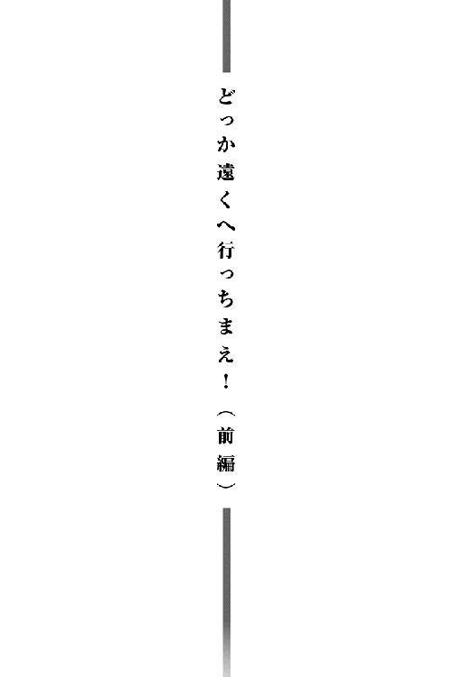
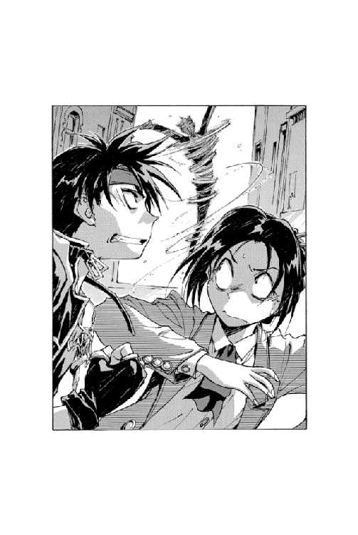
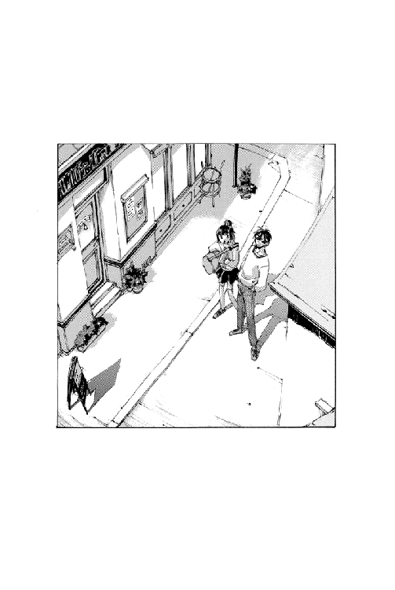

| 魔術士オーフェンしゃべる無謀編5 | |
| 秋田禎信 | |
| (2013) | |
若きエリート魔術士、マヨール・マクレディは嘆息した。「ベイジットを連れてきて！」妹の悪戯が成功し、母の癇癪が始まったのだ。〝牙の塔〟の教師であり、〝死の絶叫〟と呼ばれる魔術士、レティシャ・マクレディの癇癪が。ちょうど出かけようとしていたマヨールに母の相手をしている暇はない。だが、このまま放っておくほうが後々厄介だろう。仕方なく悪態をつきながら妹を説得する彼に、一つの影が忍び寄る。我が家の〝女王〟が片眉を上げ、不機嫌そうに指で腕を叩いていた。「一応聞きますけど、いつからいました?」これで今日はもう出かけられない。母の思い出話（という名の説教）が始まるから...。


イラスト：草河遊也 Yuuya Kusaka
デザイン：ヴェイア Veia

その昔、トトカンタ市に偉大な男がいた。
その男がこの街を作ったと言っても過言ではない。その男は街を生み、街を守り、街のために戦い、街に愛され、街に看取られて、街を去っていった。
その男の名は、フランク・オーディー。彼を愛した街は、彼の死後も彼のことを見失うまいと、小高い丘の公園に、彼の銅像を建てた。透明な風の吹くその丘で、彼は街を見守り続けている。遠い眼差しで。
そして今。その銅像の頭の上に──
ひとりの男が立っていた。
問答無用に立っていた。容赦なく、完全無比に、ほかにどう形容しようもなく、立っていた。埠頭に立つ水夫のように、片足をその英雄像の肩に、もう片足を頭の上に乗せて、像を包む風の中にたたずんでいる。短く刈った黒髪に、真っ直ぐな眉。細い目には感情らしい感情も映ってはいない。真っ青なスーツに覆われた体格は、昆虫のように細かった。赤いネクタイに引っかけられたタイピンは、ウインクしたカマキリで、鎌を片方だけ開いている。
若い男だった──とはいえ若造でもない。誰から見ても『若い男』に見えただろうが、その言葉を数字に置き換えることができない。彼が見つめているのは、銅像と同じ、街だった。大陸有数の商都たるトトカンタ。無数の者が住む町を、ひとりの男とひとりの英雄が見下ろしている。
「えーと」
とりあえず、その銅像の下から、中年の警官が声をかけた。いったん言葉を切り、まわりに集まった野次馬を見回してから、英雄像の上に立つ男へと視線をもどす。
「あんた、なにしてるんだ？」
「それをわたしに問いかける貴様は誰だ？」
彼はにこりともせず──眼球を動かしもせず、早口でそう聞き返した。警官は、目をぱちくりさせたあと、
「警官だが」
「明確な答えだ。好感が持てる」
「ありがとう」
「だが残念なことに、不正解だ」
「不正解？」
「ブー」
「音まで」
男は、きりっと表情を引き締めた。横水平の眉に意志が宿る。ポーズは変えないまま、彼は続けた。
「できればこう答えてほしい。もし警官というものが油をひいた鉄板だとするならば、自分の上で毎日ソーセージが飛び跳ねているはずだと」
「ええと、もし警官というものが──」
「アレンジはすべきだ」
「もし警官というものが花だったら......」
そこまで言いかけて、警官は口ごもった。
「だったら？」
男に聞き返され、警官は肩をすくめた。
「......もっと役に立ったろうに」
「うむ。単純だがすこぶる芸術的だ」
「ほめてもらってありがたいが、あんたはなにをやってんだ？ これは別に、もし変わり者ってものが雲ひとつない空だったとしたら自分は洗濯物の味方のはずだなんて答えなくていいぞ」
「うむ」
男はうなずくと、両腕を振り上げ、ばっと──飛び降りそうな素振りを見せてから、足下の銅像の頭に手をつくと、ゆっくりとそこを降りた。地面まで降りると、あまり背は高くない。
警官に向き合い──だが視線ははっきりとそらして──彼は、自分のあごの下に指を入れて目を閉じた。なにやら感慨深げにうめく。
「警官に必要とされる資質は、ただひとつだ」
「ほう」
「優秀であること。これに尽きる」
「そうだな」
警官は無感動に同意しながら、後ろ腰のベルトから手錠を取り出した。が、男は気づかないようにあとを続ける。
「だが警官は優秀であってはならないのだ」
「なんで？」
「優秀な警官は、逮捕してはならない犯人まで逮捕してしまう」
「逮捕しちゃならん犯人なんていないだろう」
「その通りだ。問題なのは、そこだ！」
男は、びしと、警官に向けて指を突きつけた。その細い手首に、緑色のカフスボタンが光る。
そしてその手首に、がちゃんと手錠がかかった。
トトカンタ市はその日も晴天だった。
いつも誰もが期待するような、穏やかな青空。やや涼しく、やや肌寒い。
オーフェンは特になにがあるというわけでもなく、街を歩いていた。黒髪に黒目、格好まで黒ずくめの男である。不機嫌そうに見えるわけではないが、鋭い目つきがどこか皮肉げな容貌を作っていた。胸元には、銀でできたペンダントがぶら下げられている。剣にからみついた、一本脚のドラゴンの紋章──大陸黒魔術の最高峰《牙の塔》で学んだ証である。
街はなにごともなく平和なようだった。行き交う通行人の足音も、活気もざわめきも、すべてが平穏の中で平穏に流れていく時間に平穏なアクセントを刻み続ける。それに反対するなにかがあるわけでもなく、静かな午後を誰もが過ごしていた。
（平和だなぁ）
誰にともなく、オーフェンは独りごちた。声には出さずに。
そして──
後頭部をはり倒され、アスファルトに顔面を埋めた。
衝撃は突然だった。そして痛みも。なにがあったのか分からないまま視界がすべて地面で埋まり、鼻の奥まで通る激痛に声も出ない。なにもできずにうめくうちに、彼の頭に激突した誰かが、そのまま前方へと通り過ぎていくのは感じていた。たったっと軽い足音が、遠くへと走り去ろうとしている。
「っこの──」
オーフェンは、がばと起きあがった。突然の騒ぎに、通行人たちが騒然としている。こちらを見て驚いている野次馬たちの中にあって、彼らをかき分けて奥に走り去ろうとしていた後ろ姿がひとつあった。それがおそらく自分をはり倒していった犯人だろうと目星をつけて、オーフェンはその男を指さした。
「てめえ！ 人が平穏を堪能してるって時に、唐突になにしやがる！」
男はあっさりと振り向いてきた。青いスーツ──ビジネススーツではないが、形はそんな感じだ──に赤いネクタイ。やけに細身の男である。男はあまり表情の表れない顔をしかめると、きっぱりと怒鳴り返してきた。
人差し指を真っ直ぐこちらに向けて、
「なにをするのかと問う時には、まず名乗ったらどうだ！」
「なに⁉」
オーフェンは上体だけを起こした姿勢でうめいた。しばし考え、
「......なんで？」
「そーいえば、関係がないかもしれんな」
男はあっけなく認めると、くるりときびすを返し、そのまま再び人混みの中に消えようとした。足音もない、妙にスマートな足取りで。
「待たんかいっ！」
目を閉じてオーフェンはその男に叫んだ。男はまた足を止めると、
「なんだ。わけありのゆえがあってとっても急いでる理由があるのだが」
「なんだかよく分からんが」
オーフェンは立ち上がると、大きな動作で腕組みした。
「人をはっ倒しておいて、そのまま素通りしていこうたぁ、ずいぶんと虫がいいじゃねえか」
「おほめいただき光栄だ」
「断じてほめてないっ！ 単刀直入に言うとだ、それなりのわびってものをしてもらおうか！」
男は、ずっと変わらぬ真顔のままで──
「殺人は良くない」
「......え？」
「短刀直入」
「駄洒落は犯罪だっ！」
オーフェンは断言すると、腕組みを解いた。男を見据えたまま、続ける。
「と・ゆーわけで、罪状パワーアップだ！ かなり本気の攻撃を受けたくなければ、それ相応の対応をしてもらおうか！」
「むう。そんな......」
男は、困惑したようだった。いきなり、なぜか上着を脱ぎながら、
「いきなり、生き血を要求されても」
「どんな対応だ、それはっ⁉ そーじゃなくて、迷惑料とか慰謝料とかいろいろあるだろうがっ！」
怒鳴りつけると、男は脱ぎかけていた上着に再び袖を通した。ほっとした様子で、言ってくる。
「安心したぞ。君の意図は読めた」
「隠していたつもりもなかったけどな」
手のひらを上にして差し出しながら、オーフェンはつぶやいた。が、男は聞いた様子もなく、
「分かっている」
「おう」
「念力で」
「念力で？」
「君の幸せを祈っておくことを約束する」
「いらんわっ！」
オーフェンは全力で叫ぶと、開いていた手を握りしめた。男に詰め寄ろうとした、その瞬間──
ごふっ！
再び後頭部になにかが命中し、彼は路面にキスをした。
「いたぞ！ こっちだ！」
聞こえてくる声──
それに対して、男がうめき声をあげているのも聞こえてきた。
「ぬ⁉ お前たちは、かつてわたしを追っていた公僕の方々！」
「回り込め！ 今度こそ逃がすな！」
「よし、マーベリック隊、向こうを封鎖しろ！」
「市民のみなさん！ 我々は、その男の捕縛行動中です！ みなさんには危険はありませんが、ご協力をお願いいたします──」
「ふ──」
最後のものは。
オーフェンの声だった。
ざっ──と、地面に手をつく。
引き剝がすように、身体を起こす。
見回すと、確かに警官たちがいた。
遠巻きにではあるが、男を取り囲むように。
すぐ近くに、警察マーク入りの砂袋が転がっていた。犯人を生け捕りにするために、投げつけて使用するものだ。先ほど後頭部に当たったのはこれだろう。
警官たちはまだ騒いでいる。男を捕らえようとしているらしい。オーフェンは、身体を震わせながら立ち上がった。
「ふふふふふふふふふふふふふふふふふふふふふふふふふふふふふふふ──」
痙攣するように笑い声が漏れる。気配を感じたのか、警官たちの動きが止まった。彼らがいっせいにこちらを見やる。その表情には、はっきりと、自分たちのミスを認めた動揺があった。
「あ......あいつは⁉」
警官の中のひとりが、うろたえて悲鳴じみた声をあげる。
悲鳴は次々とあがっていった。
「あいつだ！ 危険人物リストの──」
「みなまで言うな！ 知らん者はいない！」
「まずいぞ、いつにも増して目つきが悪くなっている！ あれは攻撃色だ！」
「ま、待つんだ君！ 話し合おう！ そ、そうだ。飴を──飴をあげるから！」
「お前ら......」
オーフェンは、構わずに右腕を振り上げた。魔術の構成を解き放ち、世界に祈り、世界を変質させる！
「まとめて消え失せろぉぉぉっ！」
収束した力が、望むままに撃ち放たれる。渦巻く光の奔流が、道路に突き刺さり、大きく跳ね上がった。光の火柱をあげて衝撃波が荒れ狂う。すべては激しくも一瞬だけの饗宴だった。大爆発の中、悲鳴をあげて警官たちがあちこちに吹き飛ばされる──
ぜえ、はあ......
肩で息をしながら、オーフェンは自らの魔術がもたらした効果を見回した。直接の標的となったアスファルトは、無惨にえぐられてクレーターと化している。警官たちはみな適当に倒れ伏し、ひきつった表情で失神しているようだった。だいたいの野次馬も同様で、遠くから見ていた連中はさらに遠くへと逃げている。
そして、声は自分のすぐ横から聞こえてきた。
「うむ。助けてもらってありがたいことが嬉しくて感謝している」
「......いや、一応あんたも狙ってたんだが」
オーフェンは半眼で、声のほうへと顔を向けた。例の男が、傷ひとつない様子で立っている。男はこくりとうなずくと、
「あまつさえ狙っていたというのに助けてもらったとは見事と言うほかあるまい」
「違うと思うぞ」
きっぱりとオーフェンは断言したが、男にとってはどうでもいいことのようだった。感情をなにも表さないまま、続ける。
「だがわたしには、君に対して感謝の謝辞をありがとうさせてもらう唯一の方法がひとつしかない」
「......いや別にいいんだが、その限りなく無駄なしゃべりはなんとかならんのか？」
「君の幸せを祈る方法が約六千八百二十九通りあるのだが、三秒ほどで選びたまえ」
「いらんと言ってるだろーがっ！」
「お勧めは、遠近自在エネルギー法だが」
「やかましい！」
と──
「そこまでよっ！」
聞き慣れた声が、会話──と呼べるかどうか自信はなかったが──を遮って響く。
通りの向こうで、人垣がふたつに割れる気配がした。ふたてに分かれた野次馬たちの中から、小柄な女が姿を現す。手にはダーツを一本持って、ゆっくりと進み出てくる。コンスタンスだった。オーフェンとは顔なじみの、派遣警察官である。
彼女を見て、倒れていた警官のひとりが声をあげる。
「おお、あなたはっ！」
黒こげになったまま元気よく起きあがると、警官は祈るように手を組んで声をあげた──少なくとも事態が自分の責任ではなくなったことが嬉しいのだろう。
「お噂はかねがねうかがっております。派遣警察・とにかくいろいろ変なこと対策係のコンスタンス・マギー三等官ですね⁉」
「勝手に人を妙な役職に就けないでちょーだいっ！」
コンスタンスが非難じみた声をあげる。黒こげの警官に向かって半眼になると、
「......だいたいなんでわたしが、変なこと対策なのよ」
「いやしかし......暴力団対策に、その幹部をスカウトした事例もあることですし」
「どーゆう意味よ⁉」
「うう......ああやめて......ケガ人を蹴らないで......とにかく、三等官、お願いしますぅ。我々の仇を......」
「分かったわ。任せておいて」
決然とした表情で、静かにうなずいてから──
彼女は、こちらへと向き直ってきた。せいいっぱい肩をいからせて、びしと指をさしてくる。
「って、とにかくそんなわけでっ！ オーフェン⁉ なんかまた爆発とか起こってるなーとか思って来てみれば、やっぱりあなただったのね。そーやってまた毎日毎日毎日毎日人様に迷惑ばかりかけて、そんな恥ずかしい人生は今すぐ──」
と。
唐突に、彼女の声は途切れた。
その表情が、みるみるうちにこわばっていくのが分かる。オーフェンが怪訝に思って見ている間にも、コンスタンスは、ふらっとその手を落とし、よろけて後ずさりした。眉間にしわを寄せて、小さくかぶりを振る。そして。
信じられない口調で、彼女はうめいた。
「──に」
「に？」
「義兄さんっ⁉」
「おお。よく見れば、妻の妹」
あっけなく返事をしたのは、例の男だった。いつの間にかまた腕組みしている。
「え？」
彼らの会話の意味が一瞬思い当たらず、オーフェンはつい考え込んだ。兄。妹。妻の妹。妹の姉。姉の夫。
たっぷり一回転は思考を空回りさせてから──オーフェンは、悟った。
「............！」
無言の悲鳴をあげて、彼がとっさにとった行動は──意識無意識なにもかもを総動員して、たったひとつのことだった。
だっ──！ と全力で、その場を逃げ出す。全身の筋肉を跳躍させ、その場から最も離れた場所へと彼は駆け出した。
が、刹那。
「とォっ！」
背後から飛びついてきたのは、当の男だった。突然のことでかわすこともできずに、オーフェンは勢いのまま転倒した。ずざざざざと地面を転がりながら、後ろからタックルしてきた細い腕を振り払う。起きあがり、振り返ると、男は頭から盛大に血を流しながら、平気な顔で言ってきた。
「どうやら、わたしの勝ちの初勝利のようだな」
「だから、わけ分からん、ちゅーに！」
オーフェンは叫んで、その男から少しでも離れようと、尻を地面につけたまま後ずさりした。
男はかぶりを振ると、
「ふっ。もはや申し訳ない」
「さらに分からん」
「つまり、鯨が魚でないのは牛が魚でないのと同様だと解説することが馬鹿馬鹿しいと思うのなら、わたしの気持ちも分かるだろうということだ！」
「あー......えーと、もういいです」
「そう。そんなことはどうでもいいのだ。なぜ貴様、逃げ出したりする？」
「嫌なことを思い出したからだよ！」
オーフェンは即答すると、また立ち上がって逃げ出そうとした。が──小柄な人影に、行く手を遮られて足を止める。
コンスタンスだった。ひきつりまくった表情で、
「ずるいわよ〜、オーフェン。自分だけ逃げようなんて」
「なにがずるいんだ⁉ もともとは、てめえの身内だろうが⁉」
「確かにそうだけど！ あなただって無関係じゃないでしょう⁉」
「ほほう。貴様、義妹と関係を持ったと？」
後ろから無遠慮に顔を出し、言ってくる男に、オーフェンは怒鳴り返した。
「断じて違うわっ！ 不名誉な！」
「不名誉って......」
複雑な表情で、汗を垂らしてコンスタンスがうめいている。
そんなことには構わずに、オーフェンは男の胸ぐらをつかみ上げた。やけくそになってにらみ据える。
「くっそー......つまり、あれだな？ コギーの義理の兄ってことは......あんた、ハウザーとかいう奴なんだな？」
「うむ。エドガー・ハウザーという名前を自己紹介しつつ名乗った」
「てことは......その......あの──あの──」
言葉が続かずに──オーフェンは、震える自分の腕を見下ろした。脂汗が額に浮かぶのが分かる。首を絞め上げられているのが自分であるような錯覚に、呼吸までが困難になっていく。
「分かっている......」
そっと、静かな声。男の──つまり、エドガーの声。
落ち着いて涼やかな、抑揚のない言葉で、彼が告げるのが耳に入った。
「わたしの父、カーマディ・ハウザーは今際の際にこう言った」
「え？」
「わたしが生まれた時、東の空にオレンジ色の光が降りるのを確かに見たと」
「ほう」
「だがその直後に、『嘘ぴょーん』と言って天に召されたのだ。偉大な父だったとは思うが、死ぬ前に嘘をつく人間は果たして善人なのか悪人なのか。遺族の意見はまっぷたつに分かれた」
「......微妙に興味深いよーなどーでもいいよーな話だが、それがどうさっきの『分かっている』につながるんだ？」
手をはなしつつ、オーフェンは聞いてみた。エドガーはひとつうなずくと、
「そんないきさつで翌朝まで血みどろの殴り合いをするような一族がいる世の中だから、君のような理不尽な男が存在することもむべなるかなと納得したしだいだが」
「そーゆうのといっしょにするなっ！」
オーフェンは叫ぶと、ばたばた地団駄踏んであとを続けた。
「俺が......俺が！ 今なにを考えてるのか、あんたに分かるか？」
「いや。不明だが」
「あんた確か、アーバンラマ市で工房だかなんだかを経営してるんだよな⁉」
「うむ。それは不明ではない」
「なんでここにいる⁉」
「社用で」
「ひとりで来たのか⁉」
「否！ 共同経営者であり友人であり無論最愛のひとでもあり参謀であり司令官でありスパイであり兵卒でもある妻も、遅れて来るはずだ」
「......それって義兄さんはなにもしてないってこと？」
横からコンスタンスがぽつりと口をはさむのは無視して、オーフェンは頭を抱えてうめき声をあげた。
「あああああああああ！ やっぱりぃぃぃぃぃぃ⁉」
嫌な予感は的中していた──というより、的中しなかったことなどなかったような気もしたが。
「まずいぞ！」
今度はコンスタンスのほうを向いて、断言する。
「そうね！」
彼女もきっぱりとうなずいてきた。
その横で、エドガーももっともらしく首を縦に振っている。
「そうかもしれんな」
「あんたは関係ないだろ⁉」
彼を仲間外れにしてから、オーフェンは改めてコンスタンスに向き直った。拳を握りしめ、下唇を嚙む。微かに血の味を感じた──そして、血の臭いもまた。
「あの女がまた来るらしい......この前あの女が出てきた時には、落とし穴に落とされるわ、虎と闘わされるわ、さんざんだったからな。今度はどんな目にあうか......」
「いいえ！ 今回の危険は、そんなことじゃないわ！」
コンスタンスがかぶりを振る。
「なに？」
聞き返すと、彼女は顔色を蒼白にして続けてきた。
「そんなことじゃないのよ......姉さんの恐ろしさは......義兄さんといっしょにした時に、真価を発揮するの」
「真価？」
「こ、怖くてどんなことかは、口では言えないわ」
頭の両脇を手で押さえて、コンスタンスは肩を震わせた。血の気の退いたほおが細かくひきつっているのも見える。
「ただ、これだけは言えるのよ──姉さんと義兄さんを会わせちゃ駄目！ 真の恐怖を味わいたくなければ！」
「ど、どういうことなんだ？」
わけが分からず、オーフェンは彼女に問いただした。が、コンスタンスは首を振るだけで、まともに答えられないようではあった。ただ──
「マギー家とハウザー家......両家の親が相次いで早死にしたのは......わたしは、このふたりが結婚したせいだと思ってるわ。耐えられるはずがないのよ。あ......あんな状況に......いくらなんでも......」
「なんかいきなり大事だな、おい」
「そんな大変なことになってるとは、まったく気付いていなかったぞ」
「気付けよ、あんたはっ！」
また横から無責任な口調でつぶやくエドガーに叫んでから、オーフェンは決意を新たに拳を握りなおした。
「くそ......日夜、平和な街に危険と犯罪と不安を振りまいているこの無能警官がここまで恐れる以上、どうやら本物のようだな。対策を練らなけりゃならん」
「なんであなたにそこまで言われなきゃならないのか分からないけど、対策は確かにその通りね。手遅れになる前に、なんとかしなくちゃというのは前向きだわ。というわけで義兄さん、姉さんはいつ来るの？」
「うむ」
彼は懐から懐中時計を取り出すと、あっさりと言ってきた。
「待ち合わせの時刻まで、あと一時間ほどだな」
ぶッ──
とオーフェンはコンスタンスと示し合わせたように同時に、吹き出した。
「一時間ん⁉」
聞き返す声も裏返っている。オーフェンはとりあえず振り向いた──なんとなく、もうすぐそこに来ているのではないかと思えたのだ。
「とりあえず、宿にもどりましょう」
コンスタンスが、つぶやく。
「そうだな」
オーフェンは応じて、ぽきぽきと指を鳴らした。かぶりを振ってつぶやく。
「時間がねえ以上、もたもたしてられないな。急がないと」
と、やはり横から、エドガーが口をはさんできた。
「時は金なりと言う時間も惜しい、と昔からよく言うからな」
「言わないけど、まあそうだ」
うなずいて、歩き出す。と──
「あ、あのう......」
か細い声が聞こえてきた。道に倒れたまま放置されていた、黒こげの警官である。
「三等官、わたしらの仇は......」
「うるさいわね！ そんな場合じゃないって言ってるでしょ⁉」
「ぎゃああああ！」
げしげしと警官を蹴りまくるコンスタンスに、オーフェンは口を開いた。
「おい、コギー。そんなことしてる暇はねえだろ。急ぐぞ！」
「そうね。無駄なことに体力を使ってしまったわ」
「ひどすぎるぅ......」
めそめそと泣き声をあげる警官をあとにして、宿屋に急ぐ。
「はっはっは。なんというかこう、共通の目的を持って巨大な敵を迎え撃つというのは、なかなかに胸が躍るものがあるというかないというか」
「ないのか、おい。まあそれはそれとして、なんであんたがついて来るんだ？」
ごく当然のようにぴったりとあとをついて来るエドガーに、オーフェンは聞いた。
と、横からコンスタンスがこちらを制してくる。
「待って。ふたりを接触させないために、片方をこちらの手で拘束しておくというのは意味があると思うわ。最悪の場合、義兄さんを消してしまうこともできるし」
オーフェンは、とりあえず歩きながら、彼女から後ずさりした。
「......いきなりとんでもなく怖いこと言うなあ、お前」
「うふふふふ......あんな恐怖と絶望をまた味わうくらいなら、いくらでも悪魔になれるのよぅ」
完全に据わった眼差しで、うめく彼女。
他人事のように、エドガーがつぶやくのが聞こえた。
「うむ......共食いして増えるザリガニを減らす手段などない、と昔から言うわけであるしな」
「言わないうえに、わけ分からん」
オーフェンはきっぱりと断言して、とにかくひたすら、いつもの宿へと足を速めた。
バグアップの宿は、いつものように客の姿もなく平穏だった。
ばたん、と扉を開けると、横からこちらの腕をすり抜けるように、素早くコンスタンスが店に入っていく。彼女はきょろきょろと左右を見回し──そして、厨房からトレイを持って出てきたウエイトレスを見つけると、
「ボギー！」
彼女の名前を呼んだ。栗色の髪、白い肌、ふわふわした淡い瞳の女である。彼女は目をぱちくりさせて、口を開いた。
「あらどうしたんですの、コギー姉様。なんだかすごい形相ですけれど──」
「姉さんが来るわ」
コンスタンスが、即答する。ボギー──ボニー・マギーの動きが、ぴたりと止まった。
間髪を入れずに、コンスタンスが続ける。
「義兄さんもいっしょに」
「やは」
横を見ると、片手だけを上げてエドガーが挨拶していた。
ふっ......と。
糸が切れた人形のように、ボニーの身体が床に落ちた。そのあとを追って、彼女の持っていたトレイが乾いた音を立てて落ちてくる。ころころと床を転がるトレイを見つめながら──コンスタンスが、そっと目元にハンカチを当てるのが見えた。
「あああ......かわいそーなボギー......」
「すごい威力だな。一撃か」
ボニーは完全に失神しているようで、ぴくりとも動かない。砂袋で殴ったところでここまでにはならないだろうという気が、オーフェンにはした。
「なるほど。妻とともに実家を訪ねると、この子が意識を保っていたことがなかったのは、こーゆう仕組みだったのだな」
あごに手を当て、納得したようにこくこくとうなずくエドガー。
オーフェンはとりあえず軽いめまいなど覚えながら、コンスタンスのところまでいった。彼女は慣れた様子でボニーを仰向けにして、手でぱたぱた扇いでやっている。
「にしても──いったいどうするんだ？ なんかどこまで逃げても、無駄な気もするし」
「そーねー......姉さんがその気になったら、隠れられる場所なんてどこにもないわ。飼い葉の中に落とした指輪を二秒で見つけるんだもの」
「はっはっはっ。すごかろう」
「あんたじゃないだろ」
胸を張って得意がるエドガーにすげなく告げて、オーフェンはうめいた。
「となると......迎撃戦か。奇襲と罠は得意とするところではあるぞ」
「............」
ふと顔を上げると、不思議そうにコンスタンスがこちらを見ている。
オーフェンは首を傾げた。
「......どした？」
「なんか今回は、いつになく協力的ね」
「よくは分からんが、無茶苦茶をしでかす姉と戦うのは俺のライフワークな気がするんでな」
「確かによく分からないけど......」
「よし！ とりあえず作戦を練るぞ！」
と、その時だった。
「お待ちくださいぃぃぃっ！」
声が響く。あとは一瞬だった。天井が裂け、そこからタキシード姿の銀髪青年が、くるくると回転しながら落ちてきた。すたっ、と床に降り立つと、彼は優雅に一礼し──
「我は放つ光の白刃っ！」
オーフェンの解き放った魔術の光の中に呑み込まれた。
爆発が、食堂のテーブルやら椅子やらを吹き飛ばす。炎が消え、そして、
「......なぜです？」
まったく無傷なまま、にゅっ、と背後から復活してきたのは、彼だった。
「ああ......また無駄なことをしてしまった......分かってはいたのに......」
オーフェンは、かぶりを振って悔やんでから、告げた。
「いや、こーゆうせっぱ詰まった時にお前が出てきて、役に立ったことってないだろ」
「これは手厳しいですな」
はっはっ、と自分の額を白手袋の手で叩きながら、その男──
「キース！」
コンスタンスが、その男の名を呼んだ。怒った様子で口を尖らせる。
「今日はあなたの相手をしている暇なんてないのよ。さっさともどりなさい」
「これはこれは。コンスタンス様、お言葉ではありますが、マギー家の執事としてお嬢様方のお世話をするのはこのキースめの役割でございます......」
と、彼はふと、別の気配に気づいたらしかった。いつもにはない気配。銀髪執事の視線が、その男のほうに向く。エドガー・ハウザーに。
ごくり......
我知らず、オーフェンは唾を呑んでいた。どうというわけではないが。
「エドガー様」
キースが──普段にない調子で──軽い驚嘆の声をあげる。
「キースか」
エドガーの返事も、今までと違う重々しいものだった。彼はそのまま目を閉じると、
「......キース。今日は一番か？」
「一番？」
なんとなくオーフェンは聞き返したが──キースはごく当然とばかりに答えたようだった。
「はい、エドガー様。無論のこと一番でございます」
「うむ。それは僥倖だ」
「ですが」
ぎらり、とキースの目に光が灯る。
「昨日は二番でございました」
「なに──⁉」
エドガーは、くわっと目を見開いて彼を一喝した。
「馬鹿な！ 誰だ、つまりは一番であることを脅かした二番であるべき愚か者は！ いやむしろ、愚か者だから三番だ！」
「それはあまりにも残酷でございます、エドガー様！」
「分かっている！ しかし──」
「ご安心ください、エドガー様......」
キースは、恭しく一礼してみせた。
「すべて嘘でございますから」
「おお」
細い目を大きくして、エドガーが驚いた様子を見せる。
「やはり、そうか......一番は不動であったか。その通りだ」
「おお。さすがはエドガー様」
「いや、嘘だ」
「嘘がお好きですなぁ」
「うむ。嘘同盟だからな。いや嘘だ」
「はっはっはっ......」
「............」
なにやら朗らかに笑い合うふたりを遠くから──話している間に遠ざかったのだ──見つめて、オーフェンはつぶやいた。
「なんだ、あれは？」
「いや、わたしにもよく分からないけど、なんかあのふたりなんだかいろいろと気が合うらしくって」
困ったように、コンスタンス。確かに困るよりほかにないだろうが。
オーフェンは聞き返した。
「気が合う？──いやまあ、なんかすっごく分かる気はするけど」
「うん。いつだったかしら......なんかふたりして『パペピプペ』だけで会話を成立させてたわよ」
「聞きたくねえな心底」
と──
朗らかに談笑していたキースとエドガーだったが、その会話が唐突に途切れた。
軽く、命よりも軽く、エドガーが懐中時計を手につぶやく。
「おお。待ち合わせの時間だ」
「────！」
オーフェンらは、静かに顔を見合わせた。緊張が走る。ついに、来るのだ──
マギー三姉妹の長女。
ドロシー・マギー・ハウザーが。
その同時刻──
夕刻の街外れに、ひとつの影が差した。
小柄な女の人影だった。さらりとした長い黒髪が、夕刻の緩やかな風になびいている。黒い砂の河のように、ふわりと広がり、なにかを呑み込むように。
仏頂面と言ってもいいだろう、愛想のない顔に、煙草を一本くわえている。肩に引っかけただけのコートの下で腕組みして。
その人影は、なにも言わないまま──ぷっ、と煙草を吐き捨てて、路上に落ちた吸い殻を低いヒールで踏みにじると、そのまま街の中へと入っていった。
（つづくみたい）
その時が来ても、街は静かだった。街はなにも知らないように、悲鳴もあげずに夜を迎える。それがどれほど苛烈な夜であるのか、説明する方法もないまま、弱き者たちは街の中で震えていた......
「問題は！」
テーブルの上に仁王立ちになり、大声を張り上げるコンスタンスに、オーフェンは腕組みしてうんうんとうなずいていた──彼女は、拳を握って熱弁を続けた。
「姉さんが既にこちらに向かっているということなのよ！ 時間的な余裕はほとんどないわ！」
と──そこまできっぱりと叫んでから、こちらを見下ろしてくる。
「......どーしましょうか」
「結論もなしに力説してたのか、お前」
ぽつりとつぶやき、オーフェンは肩をコケさせた。もたもたとテーブルから降りるコンスタンスを見ながら、うめく。
「さて、どーしたものかって──さしあたっては、だ」
くるりと振り返る。オーフェンは食堂の奥のほうへと指をさした。
「そこ！ 他人事のよーな顔してカードで塔を作ってるんじゃないっ！」
「なに？」
厳しい顔つきで、テーブルの上にカードを組み合わせて塔を作っていたエドガーが、意外そうな声を発して立ち上がる。その衝撃で、ばらばらと塔が崩れるのが見えた。彼は眉間にしわを寄せて、びしと叫んできた。
「なんの権限があって、そのような弾圧を行う⁉ 貴様のその言動が、どれほどの罪無き人々を苦しめるか、分からないでもあるまいでも分かるまい！」
「全然分からんっ！」
「ぬう。愚かな男だ。十二分の三くらい愚かだと断言することも辞さんぞ」
「てめえの言ってることが分からんと言ってるんだっ！」
オーフェンはとにかく声を張り上げてから──ぜえはあと息を整えた。
と、横からぽんと肩を叩かれる。向きやるとコンスタンスが、なにやら沈痛な面持ちでかぶりを振っていた。
「無理よ......義兄さんと会話なんて......」
「いや......なんか、すごい認識だな、それは......」
ぞっとしながらうめいて、オーフェンはふと気づいた。あたりを見回す。
「って、あれ？ キースの奴はどこだ？ さっきまではいたよな？」
食堂には、床に倒れたままのボニーを別とすれば、三人しか残っていなかった。再びカードで塔を作り始めているエドガー。そして、オーフェンと、そのすぐ横にいるコンスタンスである。
キースの姿はない。
「そういえば、どこかしら......まあ、いないほうがめんどくさくなくていいけど」
「うむ。わたしもそう思ってだな──」
と、いきなりきらりと目を輝かせ、エドガーが間に入ってくる。妙なポーズで、斜めに傾きながらも直立して。
「......仲いいんじゃなかったのか、お前ら」
半眼で指摘するオーフェンは無視して、エドガーは淡々と続けた。
「──とりあえず、妻を案内するようにさっき言い渡したのであったことを記憶にとどめている」
「きゃあああああっ⁉」
頭を抱えて、コンスタンスが叫び声をあげる。少しうるさそうにエドガーは彼女を見つめ──
「なぜ叫ぶ」
「なぜもなにもあるかっ⁉」
答えたのは、オーフェンだった。重力の理などものともせずに平然と斜めに立っているエドガーの胸ぐらをつかむと、顔の近くまで引き寄せ、
「人がこーまで大騒ぎして、あの不良ビジネスウーマンを遠ざけようとしてるってのに、どーしてそーゆう致命的なことをする⁉」
「もとよりここが待ち合わせ場所ではなかったので、わたしがここにいることを伝えたかったと燃える胸に秘めている」
「そうだろうと思ってたわい！ にしても──くそ、キースのことだ。ここぞとばかり、おっそろしく迅速にあの横暴社長を連れてくるに違いないぞ！」
「敵ながらあっぱれと言うよりほかあるまいな」
敵なのかとかほかにもいろいろと指摘したい部分はあったが、いちいち突っ込んでいてはきりがなさそうだった。オーフェンはいらいらとエドガーを手放すと、頭を抱えたまま床に座り込んでいるコンスタンスへと向き直った。
「コギー！」
「.....................ふぁい............」
「燃え尽きてる場合じゃねえぞっ！ こーなったらもはや最終危機だ！ とれ得る手段をすべてとる！」
「....................................そうね」
長い長い沈黙を含んだ返事を、コンスタンスが返してくる──
彼女は病人のようにふらりと立ち上がると、わななく両手を無理やりに握りしめた。真っ白になっていた瞳に、炎が灯る。
「くじけてなんていられないわ......戦わなくちゃ。あんなものを見るのは、もうごめんよ。全世界の人々の平和のためにも、宇宙の正義のためにも、負けてはいけないのよ」
「いや、そこまででっかいことは言わないでもいいが......」
「なに言ってるの、オーフェンっ⁉」
ぎん、とこちらをにらみつけて、コンスタンスが語気を強める。
「甘すぎるわ！ この前あなたが姉さんから被った被害なんて、今回の危機に比べたら蠅みたいなもんよっ⁉ 姉さんと義兄さんを会わせてはいけないわ。絶対に」
「......なんで？」
少し気迫に押されながら。オーフェンは聞いてみた。瞬間、コンスタンスの表情が歪む。一気に生気を抜き取られたように、彼女はしおしおと後退していった。
「い──言えないわ。 あんな......恐ろしいことは」
「ンなこと言われても」
「と、とととととにかく、地獄を見たくなかったら、姉さんを追い返すよりほかにないわ。手段はあるの？」
「ばっちりだ！」
オーフェンは右手でオーケイのサインを出して、きっぱりと告げた。
「俺がキースをあしらうから、お前は自分の姉をなんとかしろ」
「うっ......なんかそれって、わたしが一方的に損しているよーな......」
「ほーら。眠くなーる眠くなーる」
「そんな指をにょろにょろさせて催眠術なんてかけたってごまかされないわよっ！」
「ちっ！」
舌打ちして、オーフェンは引き下がった。彼女に背を向けて毒づく。
「仕方ない。現実的にいこう。お前はここでエドガーを見張ってろ。俺がドロシーを全力で追い返す」
「キースは？」
「あいつの場合、なんとかなってもなんとかならなくても大差ないだろ。とゆーわけで、お前はここで、とにかくあのたわけ男を確保しておけよ。ちょろちょろ外に出られたんじゃ、いつばったり出くわすか──」
と。
エドガーに指を向けて、言いかける。その声が、自分でも意識しない間に途切れた。見ると、コンスタンスもほうけたようにその指の指し示す先を見つめている。
そこにはもう誰もいなかった。
床に倒れているボニーだけ。エドガーの姿は消え失せている。
「............」
しばしの沈黙。コンスタンスが、ぽつりとつぶやくのが聞こえてきた。
「......もしかして、待ちきれなくなって姉さんを迎えに行ったのかしら」
「どーしてこう、人の計画を根底から壊しまくるんだ、お前らはぁぁっ！」
叫びながら、オーフェンは食堂の外へと駆け出していった。
外はもうすっかり陽が落ち、夜の影が街並みをおおいつつあった。まだしもその闇を遠ざけているのはあちこちの窓の奥からにじみ出す明かりだが、いずれはすべて溶けて消えるだろう。
道から人通りがなくなるのは、この場合には好都合だった──どこを歩いているか分からない人間を捜さなければならないのだから。その幸運に感謝するつもりもなかったが、オーフェンは夜の道を駆けながらあたりを見回していた。
「オーフェェェェン！」
後ろから、コンスタンスが追いかけてきている。彼女は大声で聞いていた。
「あてはあるのぉぉ⁉」
「あるか、ンなものっ！」
やけくそで叫び返して、走り続ける。
コンスタンスにはそれが意外だったのか、さらに悲鳴じみた声を返してきた。
「ないのぉぉっ⁉」
「どないせっちゅーんだ、あてずっぽうのほかになんかあるかっ⁉」
「ないけどぉぉっ！」
「そーんな時は──」
声は、唐突に響いた──上空から。
「──わたしにお任せくださいぃぃっ！」
見上げる。と、夜空からなお暗い影が、大きくコウモリのような翼を広げて舞い降りてくる。大きな笑い声。ばさばさという羽ばたきの音。回転しながら落ちてきたのは──
ごがぎっ！
路面に激突すると、正体は明確になった。完全に壊れた姿勢で、タキシード姿の銀髪の男が倒れている。走っていたオーフェンとコンスタンスのちょうど中間点だった。とっさに足を止め──腕を振り上げる。
「我は放つ光の白刃っ！」
オーフェンが放った光熱波は、空気を引きちぎるようにして白い光をまき散らし、キースの突き刺さった地点へと収束した。爆音がトトカンタの夜を震わせる。
そして......
爆発が消えた時。にゅっ、と背後から、その銀髪の男──キースが無傷で顔を見せた。
「......なぜです？」
「ああ......分かっていたはずなのに......俺はまた無駄なことを......」
いろいろと悔やみながら顔を上げ、オーフェンは振り向いた。
しみじみと聞く。
「お前ってさあ......ひょっとして死なないのか？」
「はっはっはっ、たまにおかしなことを聞きますな、黒魔術士殿は」
腕組みし、きらりと歯を輝かせて、キース。少し遅れて、少し焦げた（多少巻き込まれたらしい）コンスタンスがふらふらと姿を見せた。恨めしげに、声をあげる。
「キ〜イ〜ス〜」
半眼で、彼女はキースへと詰め寄っていった。
「どーゆうことなの⁉ わたしが引っ込んでいろって言ったのに、義兄さんの言うことを聞くなんておかしいじゃない！」
「うっ......コンスタンス様、それは誤解でございます！」
痛いところを突かれたように、ふらふらとキースが後退する。彼は頭を抱えてかぶりを振った。
「ああ......板挟みに苦悩するわたし......」
「実に楽しげに見えたが」
オーフェンは冷たく告げたが、キースは聞いた様子もなく白いハンカチをくわえて震え声をあげた。
「実に心苦しいのです、コンスタンス様──無論、わたしはマギー家の執事。お館様亡きあとは、お嬢様がたのお幸せのみを願って働いて参りましたし、これからも永遠にそのつもりでございます」
「しあわせ......」
まるっきり未知の単語のように、棒読みでコンスタンスが繰り返す。オーフェンは横から聞いてみた。
「幸せだったか？ お前」
「う〜ん。オーフェンがお腹すかせて干からびながら泣いてたり、しかも泣きながらああ涙の水分がもったいないとか言ってるのを聞いてると、得も言われぬ温かい気持ちになれることがあるけれど」
「......なんか急にこのコウモリ執事の言うことに説得力を感じてきたぞ」
「そうでしょう！ 黒魔術士殿」
がばと腕にしがみつき、キースが言ってくる。
「というわけで、わたしとしては、お嬢様がたすべてのために働きたいのです──が、その利害が対立した時！ わたしはどうすれば良いのでしょう⁉」
「できれば、なんもせんでもらいたいんだが」
一言でオーフェンは告げたが、やはりキースは聞いた様子もなく、
「ああ！ わたしにできること──それはっ！」
ぐっ、と拳を握り、断言してくる。
「ただひたすらにあわてふためき、荷車を引き回しながら巨鳥カゲスズミノコギリコバトを従えて台風とともに北上することではないでしょうか⁉」
「なんでだっ⁉」
激しく聞き返したが、結局キースはまったく聞く耳なく、くるくると回転し始めた。
「というわけで、黒魔術士殿、わたしは準備をして参ります！」
そのまま、道の向こうへと去っていこうとする──
とりあえず止める理由も思いつかず、オーフェンはコンスタンスと顔を見合わせた。つぶやく。
「まあいいか......あの様子じゃ、ドロシーにエドガーの居場所を知らせたようでもないみたいだし......」
「そうね」
が。
「いえ、それはきっぱりとご報告して参りました」
「だから、なんでだっ⁉」
いつの間にかまた背後へと帰ってきていたキースへと怒鳴り声をあげる。が、
「はーはははははは......」
キースは高笑いをあげながら、回転して今度こそ道の向こうへと消えていった。
「ええい、とことん迷惑な」
「あ！」
思いついたように、コンスタンスが声をあげる。顔を向けると、彼女は手を振りながら言ってきた。
「姉さんに知らせたっていうんなら、キースから姉さんの居場所を聞けばいいんじゃないかしら」
「いや」
オーフェンはきっぱりと否定した。
「キースを捕まえようとするのは無駄だし、尋問するのはもっと無駄だろう。とりあえず、俺たちで捜すしかねえだろうな。どのみち──」
と、頭の中にトトカンタの地図を思い浮かべる。もとよりそういったことは《塔》でも訓練されていたこともあって得意だった。
想像の地図に印をつけながら、声に出す。
「まさかアーバンラマから陸路で来るわけがねえだろうし、ドロシーがこの街に入ってきたのは河川港からだろう。キースの奴がすぐに彼女を発見できたのは、しばらくそのあたりにいたからじゃねえか？ 河川港のあたりでエドガーの居場所を聞いて、そこからバグアップの宿屋に向かうとしたら......」
オーフェンは決心して、顔を上げた。
「とりあえず、河川港と宿屋の中間地点に行こう。ドロシーは宿屋を目指しているんだろうし、エドガーは当然河川港へ向かってるんだろ。少なくともどっちかを捕捉すれば、なんとかなる」
「でもそれ......危険じゃない？」
不安そうに指をくわえて、コンスタンス。実際彼女は、怯えているようだった。
「ちょうど、姉さんと義兄さんがばったり出くわしたところに居合わせちゃうかも......」
もとよりその危険性を考えていなかったわけではないのだが、実際に言われてみると決意がしぼむ。オーフェンはほおをかきながらぼやいた。
「......それもそうなんだよな。いっそのこと全部ほっといて、ほとぼりが冷めるまで隠れとくか？」

「駄目よっ！」
唐突に態度を変えて、コンスタンスが叫び声をあげた。
「姉さんは絶対にわたしたちを捜し出すわっ！ 姉さんは......あ、あああれを、人に見せたくて仕方ないんだから......わたしには分かるのよ」
怒っているのではない──がちがちと歯を鳴らし、コンスタンスがそんなことを口走る。
オーフェンは憮然と聞き返した。
「あれをって、なにをだよ」
「それは恐ろしくて言えないってさっきから言ってるでしょ⁉」
「いや、だから、それじゃなんだかさっぱり......」
「行くわよ！ オーフェン！」
いつになく強い調子で、こちらの腕をつかんで歩き出す彼女に特に抵抗する理由も思い浮かばず、オーフェンはついていった。とりあえず、さっきの話通りに、河川港へと向かっているようだが。
（ってもなぁ......）
自分で言ったことではあったが、ふと思う。
（偶然ばったりって、そうそうあるもんじゃねえんだ、これが。まあだいたいのあたりをつけて、そこいらを適当に捜してみるしかねえってことか。完全なあてずっぽうよりマシだけど）
結局のところ、先刻自分が言ったことはそれだった。上策とは言えないが、それしかできない時はそれをするよりほかない。とりあえずは──黙って、河川港へと向かうこと。宿屋との中間点に着いたら、そこからまた考えればいい。あくまで河川港に進んでもいいし、宿屋にもどったほうがいい場合もあるかもしれない。
問題は、トトカンタがあまりにも広いということだった。
トトカンタ市は広大な街である。自治性も強く、東部にある自治都市アーバンラマなどよりもむしろ実質的に王都に対して独立しているかもしれない。そして、それゆえに広大に発展した街だった。
どこをどう切り取っても〝偶然ばったり〟に適した街ではない。
「あら、妹」
「姉......さん⁉」
──などという偶然が、あろうはずも......
オーフェンは半眼になって、前方を見据えた。
長い黒髪。肩にかけただけのコート。すねたような唇に、不機嫌そうな細い眉。
ドロシー・マギーが、そこに立っていた。
「......あるもんなんだな、偶然って」
オーフェンは静かにつぶやいたが、聞いていてくれた人間はいなかったようだった。コンスタンスが、今までつかんでいたこちらの腕をばっと放し、身構える──道の行く手に不意に現れた、小柄な姉に対して。
「ね、姉さん⁉ なんでこんなところにいるの⁉」
が──
ドロシーは特に答える様子もなく、すたすたとこちらに近づいてきた。足音もろくに立てずコンスタンスの目の前にまでやってくると、
「出迎えが遅れてごめんなさいお姉さん、でしょ」
がすっ。
一息につぶやくと同時に、妹の顔面に裏拳を叩き込む。あっけなく、ぽてとコンスタンスが倒れるのが見えた。
「えーと......」
オーフェンは、しばし言葉を選んで思い悩んだ。人差し指を一本立てて、聞いてみる。
「そうでなくて、多分俺らは、あんたが河川港から入都したんだろーなと思ってたんだけど、それにしちゃあ出会った場所が宿に近すぎるかななんて──」
ばしっ！
ドロシーが放った裏拳を両手で受け止めて、オーフェンは冷や汗を一筋垂らしながら言い直した。
「出迎えが遅れまして申し訳ありませんたらありません、ドロシーさん」
「よろしい」
彼女は無表情でそう言うと、手を引っ込めて懐からシガレットケースを取り出した。煙草を一本くわえてから火を点け、
「乗り合い馬車を調達してここまで来たのよ」
「日暮れ以後は危険だからってことで、乗り合い馬車は走ってなかったよーな」
「調達したのよ」
「......さいですか」
どうやってだろう、とは聞かないほうがいいらしいと判断して、オーフェンは聞き直した。
「ええと......エドガー......さん、とは、もうお会いになりましたでしょーか？」
「亭主？」
彼女は、ぴくりと眉を上げ、こちらを見上げてきた。
「まだよ。あの宿にいるんじゃないの？」
「いえ」
「そう」
「............」
「............」
しゃべることがなにもなくなったことを、素直にオーフェンは認めた。そして──
彼は、くるりときびすを返した。
「じゃ」
「待ちなさい」
むんず、と後ろ襟をつかまれて立ち止まる──というより、立ち止まるよりほかになかったのだが。肩越しに振り向くと、ドロシーが無愛想な眼差しでこちらを見つめていた。
彼女はくわえ煙草のまま、言ってきた。唇が動くたびに赤く丸い火も揺れる。
「亭主が宿にいないって、どういうこと？」
「いや、なんかあんたを出迎えに出てっちゃったよーなんだけど......」
「どーして？」
「さあ......」
一番正しい答えは〝あの男だから〟ではないかと思いながら、オーフェンは言葉を濁した。うまく説明できる自信がない。
「なんにせよ、宿に行ってもあいつはいないから、ここは一発、なにもかも夢の中のできごとだったということで、このまま帰るのを勧めたい──」
言いかけて。
オーフェンは、息を止めた。
こちらを見ているドロシーの、肩の向こうに──飄々と歩く男の姿が見えた。感情の分からない、ひょろっとした男。間違いなく、エドガーだった。偶然出くわした......というより、こちらは予想通り、河川港へと向かう途中なのだろうが。
エドガーはまだこちらに気づいていないのか、通りをゆっくりと横切っていくところだった。そのまま、通り過ぎようとしている。
「............？」
と、ドロシーが目をぱちくりさせるのが見えた。こちらが硬直したのを不審に思ったのだろう。ゆっくりと、断末魔の一瞬に見る映像のようにスローモーに、オーフェンの視線を追って振り向こうとする──
（振り向かせるわけにはいかない！）
唐突にそれに気づいて、オーフェンは一気に緊張から解き放たれた。
「うわあああああああっ！」
とりあえず、叫び声をあげて、彼女から後ずさる──彼女の手を振り払い、オーフェンはとにかく思いつくまま叫び散らした。
「ああっ！ あんなところに、やっぱりそーゆう感じのあんなものがっ！」
あさっての方向を指さす。
実際に行動を起こしてから、それがそもそもどういったことだったのか理解するということが、オーフェンにはよくあった。今回も同じである。
どんな結果が待っているのか。オーフェンは、横目でドロシーを見やった。一応狙い通りに、彼女はこちらの声に気を取られて、背後を見ることは忘れたようだった。ただじっと冷淡な眼差しで、こちらを見つめている。
「............」
「............ええと」
オーフェンは、再び指さした方向を見上げて、
「あのビルの窓に、花柄のカラスが......」
「いたの？」
「いたらいいなぁって......」
「馬鹿？」
「ううう......」
後悔の涙を流しつつ、オーフェンは腕を下ろした。そして、ドロシーに向き直り、はっとする。ドロシーの気を逸らしたのはいいが──
その向こうで、エドガーの興味まで惹いてしまったようだった。彼はこちらを向いて、近づいてこようと身体の向きを変えている。そして、声をかけようとでもいうつもりなのだろうか。彼が右手を挙げて口を開くのが見えた。
「やあ、ダー──」
「我は放つ光の白刃っ！」
こちらの声のほうが大きかった。そして、轟く爆音もまた、エドガーの声を塵のようにかき消す。光は弧を描いて彼の足下に突き刺さり、巨大な爆発を起こした。
「............？」
さすがに今度は、その爆発のほうをドロシーも振り向いた。もうもうと上がる熱波と煙の中に、エドガーの姿は見えなかったが。
「えーと......」
オーフェンは、しばし考えてから──
「テ、テロリストだ！ 近頃噂の、錆びた釘団！ こんなところでまた爆発！ なんてことだ！」
「明らかに、あんたの仕業じゃなかったかしら」
さほど興味があるふうでもないが、ドロシーが言ってくる。オーフェンは口ごもったが、なんとかぎりぎりのところでくじけなかった。
「あ、いや、だから......俺です。静かにしろ殺しちゃうぞ俺はテロリストだ！」
「馬鹿大会？」
「ううう......」
泣く。力無く。が。いつまでもそうしてはいられなかった。オーフェンは、くるりと振り返ると、
「起きろ、コギー！」
倒れたままだったコンスタンスを軽く蹴って叫ぶ。彼女は──寝たふりだったのかもしれない──すぐにむくりと起きあがると、
「あなた、テロリストだったの？」
「ちょっとした疑問のように聞くなっ！ 状況はだいたい想像つくだろ⁉」
「なにが？」
本気でなにも分かっていない表情で、首を傾げてくる。
「うがああああっ！」
オーフェンは怒鳴りつつ、ドロシーの肩をつかんでコンスタンスへと突き出した。押しつける形で、言う。
「いいから、とにかくこいつを連れてどこまでも行けっ！ どこまでも遠くに！ できれば異世界とかがいいぞ！」
「異世界は無理だけど......」
コンスタンスは困ったように言ってから、
「いったいどうしたわけ？」
「いるんだよすぐそこにっ！」
「誰が？」
聞き返してきたのは、コンスタンスではなく、ドロシーだった。コンスタンスのほうは、さっと顔面を蒼白にして、こくこくうなずいている──どうやら、ようやく察したらしい。
「姉さん！」
わざとらしいほどの大声で叫ぶと、彼女はドロシーへと向き直った。ぱんぱんと肩をたたいて続ける──震える声で。
「え、遠路はるばる疲れたでしょう？ わたしが思うにすぐさま休んだほうがいいと思うの！ あっちのほうが休みやすそうな感じがしない⁉」
「確かにまあ、馬鹿フェスティバルのせいでこのあたり火の海になりかけてるみたいだけど......」
馬鹿フェスティバルとは自分のことだろうかと思いつつ、オーフェンは先ほど魔術で爆破したあたりを見やった。石造りの歩道は炎上などしないが、いまだに熱波が火柱を作っている。
「そうよ姉さん！ 火の海にいたらお肌も乾燥するしあんまり良くないわっ！ 火傷も痛いし。というわけで、こっちにずかずか毎分一キロくらいのスピードで進んだほうがいいと思うの──」
分かるような分からないようなことを言いながら、コンスタンスがドロシーの背中を押して、別の通りへと消えていく......
途端に夜は静かになった。遠ざかっていくけたたましいコンスタンスの声をのぞけば、遠くより聞こえてくる消防隊の鐘の音が澄んだ夜気にこだましている。消防隊はこちらを目指して進んできているのかもしれないが、しょせんは魔術の炎である。可燃物にでも改めて引火しない限り、一分も経たず消えるはずだった。消防隊がたどり着いた頃には、道に破壊跡しか残っていないだろう。
それがまったく問題にならないというわけでもないだろうが──とりあえず完全にふたりの姿が消えるを見送って、オーフェンは、安堵の吐息をついた。
「ふう。これでなんとか最悪の事態は脱したか......」
「完全犯罪は完全なる犯罪ではなく完璧なる犯罪と呼ぶべきだとは思わないか？」
「おおおっ⁉」
いきなり横から話しかけられて、オーフェンは大きく飛び退いた。見ると、無傷のエドガーがあごに指を当てた腕組みのポーズで立っている。彼は何事もなかったかのように、平然とした様子でぐるりとこちらを向くと、あとを続けた。
「というのも、人間は完璧を望むことはできても完全は望めぬや否や」
「だからさっぱり分からんっちゅーに」
「哲学とはそーゆうもんだとは思える日は来ないか？」
「哲学だったのか？ それ自体が発見だな」
「ありがとう」
「ほめてないぞ、念のため」
オーフェンはきっぱりと断言したが、エドガーはまったく構わないのか、無言でまたまっすぐ前へ向き直った。
「一杯のトロピカルバナナサンデーは、二杯のトロピカルバナナサンデーを無理に食べるよりも常に美味いと言った男がいる」
「ほう」
「お腹が冷えてはいけないという大事な教えだ」
「違うと思うぞ。まあ、トロピカルバナナサンデーってのもどうかとは思うが」
言いながらオーフェンは、エドガーの後ろ頭をがっしと鷲摑みにした。そのまま彼を引きずって、歩き出す──先刻コンスタンスらが消えたのとは反対方向に。
「ところで貴様、わたしをどこへ輸送するか決めた前か後か？」
「ああ。とにかくあのドロシーのいないところへ行くぞ」
「理由が分からんが」
ポーズをまったく変えないまま引きずられて、エドガーが首を傾げる──おかげで引きずっていく方向が少しずれた。
オーフェンはため息まじりに
「実は俺にもよく分からん」
「うむ......事情を知らない男ふたりが逃げてゆく。風に追われ孤独の丘をと言いたいところだが男ふたりだしな」
「......そこが結論なのか？」
いろいろとあきらめながら、オーフェンはぼやいた。
とにかくエドガーを引きずったまま近くの路地に入り──
そして、向こうから歩いてくるコンスタンスとドロシー発見した。
「............！」
しごく当然というようにこちらに歩いてくるふたりに、理性は活動を停止したが──反射神経は迅速だった。頭をつかんだままのエドガーを、上に放り投げるのと同時、魔術の構成を解き放つ。
「我は駆ける天の銀嶺！」
重力を中和する。だが、跳ぶのは自分ではない──呪文とともに、エドガーの身体が冗談のように天高く飛び上がっていく。すぐわきにあるビルの屋上の向こうへと、そのひょろりとした男の姿は消えていった......
ぜえはあと肩で息をしている間に、コンスタンスとドロシーが近づいてくる。ドロシーは無表情のまま、くわえ煙草で聞いてきた。
「......今あんた、亭主っぽいものを放り投げてなかった？」
「さ、さささささあ、そんなわけがあるわけないと思いたく思います」
「なんか微妙に義兄さんの口調がうつってるわね」
他人事のようにつぶやくコンスタンスに──
オーフェンは、詰め寄った。ほとんど鼻が触れるほどに顔を近づけて、小声で問いつめる。
「な・ん・で！ こんなとこに出てくるんだ⁉ お前、まったく反対方向に行っただろーがっ⁉」
「あはは。このへんの地理、ちょっと不慣れなのよね」
「だからって脈絡なく現れるんじゃないっ！ 人がちょぉっと安心したら、いちいちそいつをぶち壊しやがって！」
「わざとじゃないのにー」
しゅんとしたようにうめくコンスタンスから離れて、オーフェンは自分のこめかみを押さえた。軽い痛みを感じつつ、毒づく。
「ったく......この無能警官は、騒ぐのは自分のくせに、いちいちややこしいところでヘマばっかしやがって......」
そして、見上げる。エドガーがどこに飛んでいったかは定かではないが──恐らくは、ビルの屋上か、向こう側だろう。さしあたっての危機は回避したらしいが、すぐにエドガーを捜さなければならない。
「ちゅーわけで、俺は行くからな。お前、今度こそ俺の行くところに出てきたりすんなよ」
「分かってるわよ」
コンスタンスに念を押しつつ、振り返る。そして。
エドガーを捜すために一歩踏み出した時、オーフェンは異変に気づいた。最初は小さな音だった。どうでもいいような、細かく小さい振動音。地鳴りと言ってもいい......そんな振動。
「？」
見ると、コンスタンスも、きょとんと疑問符を浮かべていた。ドロシーはまったく無反応だが、気づいていなかったわけではないだろう。地鳴りは、はるか遠くから聞こえてくるようで──実際にはさほど遠くもないようだった。方向は明確に知れる。オーフェンは向き直った。自分が歩いてきた方向である。
様々な学習効果が、彼に危険を知らせていた。そして、それと同時に、安心をも知らせていた──すべてが終わるのだと。オーフェンは駆け出した。滑るように、路地から飛び出す。そこで、彼は見た。
大通りの向こうから──走ってくる。轟音をあげて疾駆してくる。
先頭にいるのはキースだった。すさまじい形相で荷車を引きながら走ってくる。荷車には、巨大な生き物がのっかっていた。そもそも巨大すぎて、荷車からはみ出している。鳥のようだった。数メートルはある茶色いひよこ。あるいは太りすぎた鳩。ぎざぎざの、ノコギリの刃のような白い羽根がスイカのような縞を身体に作っている。その鳥が、わけの分からない奇声をあげていた。
きょるりぉぉぉぉっ！
そこで時は静止した。
恐らく、自分がこれ以上ない驚愕の表現をしているだろうことを、オーフェンは自覚していた。タイトルを付けたかったが、思い浮かばない。後世の人間は「うひゃあ」とでも呼ぶかもしれない。とにかくオーフェンは無言で硬直し、ただその暴走を見送った。
キースと荷車、そしてその怪鳥は、彼の横を通り過ぎていき──
そのまま、ビルに激突していった。事務所が入る類のビルだった。夜間は人がいない。まるで子供の工作のようにそのビルは破壊された。怪鳥がひときわ大きい奇声をあげる。砕け散るビル。吹き飛ぶ瓦礫。すべてが終わった時には。
ビルは、なくなっていた。キースと怪鳥は、破壊されたビルの残骸の上で止まっている......
キースはいつものように、無傷だった。ビルが破壊されるほどの威力で真正面から激突したはずではあったが。怪鳥が、くるっくー、と声をあげている。
そして......
コンスタンスがひきつった悲鳴をあげるのが聞こえてきた。ビルの残骸を隔てて、そのわきの路地にいたドロシーと、その夫エドガーが──さっき放り投げた時に、ビルを隔てた路地まで飛んでいったのだろう──、じっと見つめ合っている。
もう、あとはただ見ることしかできなかった。
ふゥ、とため息をついて、無念そうにキースがつぶやいてくる。
「残念ながら、台風は用意できませんでした......」
「いや......まあ、今さらなにをやらかしたところで、誰もお前を責めたりせんだろーけどな......」
「実はその代わりに、この小箱のなかにオオムラサキモンシロキアゲハを」
「......何色なんだ？」
キースが懐から取り出した黒い小箱のことは適当に受け流しつつ、オーフェンはドロシーとエドガーに視線をもどした。
ドロシーの横で、ぱたり、とコンスタンスが卒倒している。だがそんなことには構わずに、夫婦はしばらく見つめ合っていた。エドガーは腕組みした相変わらずのポーズで、そしてドロシーは、胸元で手を組んで瞳をきらめかせ......
（......きらめかせ？）
自分で見たことに対して、彼は自問した。
そして瞬きする。が、見たことは見たままだった。ドロシーが、目を潤ませてエドガーを見つめている。
オーフェンは、初めてそこで、コンスタンスが卒倒した理由を理解した。ドロシーが、声をあげる──
「ダーリンっ！」
「はっはっはっ」
これは、エドガーの笑い声だった。それに答えるように、ドロシーが繰り返す。
「ダーリンっ！ やんっ、もう──どこに行ってたの⁉ ドギー寂しかった！」
ふっ......と、目の前が白くなる。白濁する視界の中で、最後に見たものは、エドガーに駆け寄っていくドロシーの姿だった。瓦礫の山を軽々と跳び越え、両肩をふるふると震わせながら──
「はっはっはっ」
「やんやんっ！ ドギー置いて先に行っちゃうなんて、とっても意地悪ぅ！ ドギーったらダーリンいないと嫌なんだからっ！」
............
がくがくと、なにかが震えている。自分が痙攣しているのかもしれなかった。そして、いつしか、白い闇の中へ──
オーフェンの意識は落ちていった。
意識を取りもどすことができたのは、翌朝になってからだった。
それ以来、その夫婦の姿は見ていない。三日ほど寝込んでから、オーフェンは。
すべてを忘れることにした......
（どっか遠くへ行っちまえ！ おわり）
「人は君のことを、一瞬の閃光のようだと評するらしいね」
「そうですねぇ」
ラシィ・クルティがあっさりとうなずいた理由は、いくつかある。
昨日は同僚に、あなたは閃光みたいな人ねと言われた。
一昨日は母親にお茶を淹れてあげたら、あなたって閃光みたいと言われた。
一昨昨日には、道案内をしてあげた通行人に、まるで閃光みたいな道案内だと言われた。
であるから、今日、新しい上司からかような評価を受けても、彼女は特に気にならなかった。他人が自分のことをそう思うのであれば、それなりの理由があるからだろう。その理由はよく分からないにせよ、それは彼女にとってはどうでもよいことだった。
どちらかと言えば、自分のことよりも、他人が自分にとってどういった人物であるかのほうが気になる。彼女はのんびりと、目の前にいる人物を観察した。今日から自分の上司となる人物である。彼にとっての部下は自分ひとりであるし、自分にとっての上司は彼ひとりである。
自分と何歳も違わない人物に、部下として扱われることに関しては、これまたどうでもよいことだと彼女は考えていた──彼が大陸でも広く名前を知られた最エリートであったことも理由のひとつだろう。彼ほどの人物がこの職場に配属されたことが、街のちょっとしたニュースになったほどだ。それに自分より優れた技能を持った人間と付き合うことが、損になろうはずがないというのが、彼女の信念だった。その人物に認められれば、その人物と同じ位置に立てるということなのだから。認められなかったとしたら、認められるまで地道に努力すればいいだけで、これもある意味で楽な生活だと言える。
そして、もうひとつ理由をあげれば──
「はは。敬礼なんていいよ、ラシィ司書官。ざっくばらんにいこう。ぼくは所詮この仕事に関しては素人だし」
「あのあの」
胸元で手を組んで──母親にはやめなさいと言われているが昔からの癖である──、彼女は声を弾ませた。
「わたしのことは、ラシィって呼んでください」
「ん？」
彼が、くすりと笑って、うなずく。
「じゃあ、ぼくのことも名前で呼んでもらって構わないよ」
「はいぃ」
「んーと、じゃあ、どうしようか。いろいろとやらなくちゃならないことは多いんだけど......なにから手をつけたもんだか」
「あのあの」
彼女は身を乗り出して、彼の机の上に山積みにされている書類から、一番上にあったものを取り上げた。
「そういう時は、一番上にあるものからやればいいと思うんですぅ」
それが彼女の人生哲学のひとつであった。
トトカンタ市は今日も平和だった。
平和というものが、なにも起こらないということなのかというと──実際、そんなものだという気もしないでもなかったが──オーフェンは違うと思っていた。平和とは、予想されることしか起こらないことだ。
そうであれば、予言者は日々平和なのだろう。ため息まじりに、そう思う。あやかりたいものだと付け加えながら。
もっとも──これが予想されたことなのかどうか、オーフェンにもいまいち判断がつかなかったが。
黒髪黒目、着ている物も黒ずくめと、そんな男である。特になにが特徴というわけでもないが、胸元には銀でできたペンダントがぶら下がっていた。剣にからみついた、一本脚のドラゴンの紋章。大陸黒魔術の最高峰《牙の塔》で学んだ者の証である。
彼がいるのは、マスル水道と呼ばれる水路沿いの道だった。もう水道として使われることはないマスル水道だが、その水は今でも豊富で、汚れてもいない。休日には釣りをする人影も見かける。今はないが。
その水道を背後に──
彼と対峙しているのは、ふたつの小柄な影だった。身長百三十センチほどの『地人』である。一般的な民族衣装である毛皮のマントにすっぽりと身を包み、ひとりは腰に剣を、もうひとりは分厚い眼鏡をかけている。
よく知った相手だった。静かに目を閉じ──うめく。
「ボルカン」
オーフェンは、ぽつりとつぶやいた。その地人、剣を持ったほうの名前である。
「もーそろそろ、決着をつけるべきだと思い始めたのが半年前だ。その間別に手加減してたつもりもねえんだが、どうも俺は......手ぬるかったようだな」
ばきぼきと指を鳴らす。
おおお──と、ざわめきが野次馬からわき起こった。遠巻きにしている通行人たちの群れの中には、なんとなく見覚えのある顔も混じっている。何度も何度も見物人として並んでいた常連だろう。
それはそれとして、その地人──ボルカンをにらみ据える。地人は自信たっぷりにうなずいてきた。
「よくは分からんが」
と、いかにも古びた中古の剣を抜き放つ。
「このマスマテュリアの闘犬・戦士ボルカノ・ボルカン様が貴様というひょーろくだまに引導を渡し殺すのに、半年という期間は長すぎたとは言えるな」
「え〜と」
こちらは対照的に自信なさげな表情で、眼鏡のほうが声をあげている──ドーチンである。
彼のことは無視して、オーフェンは口の端をつり上げた。
「ほほ〜お」
鳴らしていた指を開き、蜘蛛の脚のように縮ませると、
「福ダヌキがまた出過ぎまくったハッピーハッピーなこと言ってくれるじゃねえかコラ。てめえらに貸した金、これがまた利子が回転しまくって、雪だるまが雪山になってるんだがよ」
「ええと、あのぅ。前々から思ってたんですけど、てめえらってお金を借りたのはあくまで兄さんなんですけど──」
ぼそぼそとドーチンがなにやら言っているが、それを遮るように、哄笑が響く。
「はぁーっはっはっはっはあっ！」
ボルカンだった。
「分かっておらんよーだな、すり切れ魔術士......」
「ねぇ兄さん。もうちょっと穏便に──」
「今までは、まあどこから見ても完全無欠に可哀相な人生を送る貴様を哀れんで、実際の力の七億分の一程度にセーブしてきたが、今日という今日は決戦だ！ 即座にかかとを冷やし殺してくれる！」
「いい度胸だてめえら！ そっから一歩も動くなよ！」
「あの、くどいようですけど、てめえらってなんでぼくを含んで──」
「我は放つ光の白刃っ！」
光が収束し、大気を震わせる。
オーフェンが呪文とともに放った熱衝撃波はまっすぐ地人たちのいる場所に突き刺さると、巨大な火球に化けて膨れ上がった。膨張する炎にアスファルトが溶け、道に油の泉を造り出す。なま暖かい爆風が粉塵を舞い上がらせ──そして黒こげになった地人ふたりが、悲鳴をあげながらどこか遠くへと吹き飛んでいった。
「ふっ......」
オーフェンは、軽くかぶりを振りながらつぶやいた。
「戦いはいつも虚しい......虚しいけど、まあ日課だしな」
ぱちぱちぱち......
まばらな拍手が、野次馬から漏れてくる。
とりあえずオーフェンは顔を上げると、肩をすくめた。
「よし。次行ってみるか」
と。
ほかの取り立てに向かおうとした、その時だった。
「あのあの」
「ん？」
いきなり声をかけられて、オーフェンは眉を上げた。振り返ると、人混みの中から、とてとてと頼りない足取りで、ひとり前に出た者がいる。
オーフェンは、思わずきょとんとしてそれを見た──
少女、といってもいい年齢だろう。恐らくは十七、八なのではなかろうかと、オーフェンは見当をつけた。黒髪をポニーテイルにした、目の大きな少女である。ふっくらとした頰の血色の良さが目立っていた。だが、オーフェンがあっけに取られたのは、そんなことではなかった。彼女の格好である。
黒と赤の布を組み合わせたような、複雑な形をした制服に、大きく割れたマントを羽織っている。街にいて普通に生活していれば、滅多に見かけることはないが、知ってさえいればなかなか忘れられるものではない。その制服は──
「大陸魔術士同盟？」
オーフェンは、呆然とつぶやいた。
大陸魔術士同盟。
その起源は、約二百年前にさかのぼる。それは栄光の未来を約束したものでも、さらなる発展を夢見たものでもなかった。迫害の時代を生き延びるために寄り合った、魔術士たちの最後の望み。それが、現在キエサルヒマ大陸のすべての魔術士を統合する組織へと発展するのにこれだけの時間を要したのは、長いとも短いとも言える。
少女が着ているものは、そのトトカンタ支部における一般的な職員の制服のはずだった。トトカンタにおける魔術士同盟の地位は確固たるもので、大陸全体の魔術士同盟に対して特別な立場を保っているほどである。その構成員は完全に魔術士のみで、これほどの規模を持った魔術士組織はそうそうない。大陸黒魔術の最高峰たる《牙の塔》、そして王都の宮廷魔術士たち《十三使徒》、それに次ぐほどのものである。
オーフェンはそれだけの情報を自分の頭の中にずらずらと並べ──
下した判断は、ひとつだけだった。
だっ──！
素早く方向転換すると、その少女が近寄ってくる反対方向へと全力でダッシュする。
「ああ〜っ！」
多少間延びした彼女の悲鳴が聞こえてきたようではあったが、オーフェンはきっぱりと無視して走り続けた。野次馬を押しのけ、ひたすらに逃げようとする。
（大陸魔術士同盟、だと⁉）
オーフェンは、悲鳴じみた声で独りごちた。
（冗談じゃねえぞ！）
「待ってください〜！」
彼女の声が、追いかけてくる。
「待たないと、わたしだってこういうことしちゃいますよう！」
と──
その言葉に、オーフェンはぞっとするものを覚えて立ち止まった。振り返る。周囲の空間へと神経を研ぎ澄ませた時。
彼が感じ取ったものは、ただ単に衝撃だった。
（正気か⁉）
思わず悲鳴をあげたくなるほどの、巨大な魔術の構成が自分を包んでいる。自分と──そして、周りの野次馬たちとを。
魔術の構成を投射しているのは、その少女だった。当然だろう。魔術士であることは間違いないはずである。彼女は多少真剣な面持ちで、こちらを見据えている。なにやら両腕を組み合わせて複雑なポーズを取って。
彼女がその構成に魔力を通した場合、これも疑いのないことだが......
（俺はともかく、ここいらにいる奴ら全員巻き込むことになるぞ⁉）
とっさのことで、彼女が編んだ構成が実際にどういったものなのかは理解できなかったが、オーフェンにできたのはひとつだけだった。
「我は紡ぐ──」
なるたけ広大な空間を意識して、全力で防御の構成を展開する。もっとも、それでも完全にはフォローできないだろうが。
「我は紡ぐ光輪の鎧っ！」
やや遅れて、彼女もまた叫んだ。
「狸のスタンピードっ！」
ひゅるぅ──
実際に風の精霊がいたならば立てるのではないかと思わせるような音が、周囲一帯すべての空間に広がっていく。
オーフェンが放った防御の構成は、魔力によって意味を得て、周りにいた人間ごと、光の網で彼を包み込んだ。かなりの広範囲を防いだつもりだったが、それでも彼女が放った魔術の広さには及ばない。
ぞっとする。
（もしあの女が冗談にでも致命的な魔術を放っていたら──）
彼は歯を食いしばった。
（ひとりやふたりの死者じゃ済まねえぞ⁉）
ばしぃっ！
広がった光の網の表面に、弾けるような衝撃音が響く。そして、網で包まれた外から、いっせいに悲鳴が聞こえてきた。
「うぎゃああああっ⁉」
「うわあっ！」
「どああああっ⁉」
同時に、オーフェンの光の網が消える。
次の瞬間、彼が見たのは──
顔や腕、肌の露出した部分を無差別に真っ赤に腫れ上がらせて、悲鳴をあげながら転げ回る群衆だった。
「な......？」
うめく。彼が防御した範囲外にいた野次馬たちが、ばたばたとのたうちまわって涙を流している。
「ああっ⁉」
口元に手を当てて、例の少女も困ったように声をあげていた。
「どうしよう......あのあの、ええと、あの人を足止めしたかっただけなんですよう。ですからあの、ホントにごめんなさいぃ」
と、ぺこぺこ頭を下げる。聞いている者はいないようだったが。
そうこうしているうちに彼女は、呆然としているこちらに気づいたのか、顔を上げた。ぱっと顔を輝かせ──ただ正直に言えば、ごまかそうとしているようにしか見えなかったが──、口を開く。
「あのあの、ええと、そこの黒い人ですぅ。さっき逃げた人。わたし、仕事であなたとお話しなくちゃいけないんですぅ。どうしてもですぅ」
謝りながらもこちらへとぱたぱた駆け寄ってきて、そして──
「あなた、逃げたりするなんて意地悪じゃなんですかぁ」
「え〜と」
眉間に指を当てて、オーフェンは考え込んだ。そして、出てきた問いは、たったひとつだけだった。
「君は......なんなんだ？」
「あのあの」
よく冷えた果汁ジュースを前に、彼女はそれだけでご機嫌だとばかり陽気な声で言ってきた。
「わたし、ラシィって言います。大陸魔術士同盟トトカンタ支部・生活環境向上委員会に配属されましたぁ」
「......生活環境向上......？」
フルーツショップは居心地のいい場所ではあったが、あまり馴染みのない店である。オーフェンはそれまで何度となく違和感など感じながらもぞもぞしていたが──彼女の言葉を聞き返して、疑問符を浮かべた。意味がよく分からない。
彼女はにっこりと笑うと、快活な口調で即答してきた。
「同盟・非同盟含めた各魔術士の生活の環境を向上させるのが、わたしの仕事ですぅ」
「いや......俺が聞きたいのはそんなことでなくてだな」
オーフェンは半眼になって、彼女に問いかけた。
「......それって、わざわざ同盟がやるようなことなのか？」
致命的な問いのつもりだったのだが。
彼女──ラシィはまったく疑問など残らないというふうに、きっぱり答えてきた。
「ほかにそんなことしてくれる人、いないじゃないですか」
「そうかもしれんけど」
仕方なく引き下がることにして、オーフェンはうめき声をあげた。
「その君が、俺にいったいなんの用なんだ？」
「あなたの生活環境だって向上されなくちゃならないんです！」
ぱんぱん、と軽い音を立ててテーブルを叩きながら、彼女が言ってくる。
「............」
オーフェンは、しばし虚空に視線をさまよわせた。どうしたらいいだろうと漠然と独りごちる。
「......俺、市民じゃねえんだけど」
「住んでる人が市民ですぅ！」
ばんばん、と、今度はさきほどより多少強くテーブルを叩いている。子犬でも叱りつけるように眉をＶの字にして、
「わたし、さっきのお話聞いていました！」
どん、と、とうとう完全にテーブルを叩いて精一杯真剣な表情を作っている。オーフェンはなにもできずにただ彼女を見るだけだった。
彼女が勢いよく、あとを続けてくる。
「悪いのは、あの地人さんたちですね⁉」
「......え？」
「お金を借りて返しもせずに、あんなに堂々としてるなんて、とっても悪いです！ というわけで、街の平和のためにも、あの地人さんたちから借金を取り立てるのに、わたしも協力します！」
「え？ あ、いや、あの、え〜と......」
「実は、報告書にそうしろって」
てへ、と笑ってそう付け足す。
「............」
再び沈黙──沈黙するしかなく、ただ素直に沈黙する。オーフェンは、果汁ジュースのストローに口をつける彼女を観察しながら、とりあえず再び最初から考え直すことにした。
大陸魔術士同盟。
それはまあ、いいとしよう──この上なくおおざっぱな心持ちで、オーフェンはその単語についてはなにも触れずに呑み込んだ。
自分。
彼は魔術士同盟の庇護を受けていない──いわゆるモグリ、もう少し聞こえのいい言葉を使えば、はぐれ魔術士というところか。魔術は魔術士によって、魔術士は組織によってすべて完全に制御されていなければならないとする同盟の理念に、真っ向から対立する存在である。実際彼は、なるたけ同盟とは接触しないようにしてきた。関わればめんどうなことになると思ってきたからだ。
そして、彼女。
ラシィと名乗った。同盟の人間だという。彼女が魔術を扱うのは実際に目にしたし、まさかわざわざ同盟を詐称する者もいないだろう──意味がないからだ。とすると彼女は正真正銘、大陸魔術士同盟の一員ということになるが......
（それがわざわざ俺を訪ねてきて、借金の取り立てを手伝わせてくれ、だぁ？）
オーフェンは、大きく嘆息した。隠しもしなかったため、相手が不快に思うかと警戒するが──彼女はまったく気づいた素振りすら見せてこなかった。仕方なく、今度は小さくため息をつく。
「一応、聞いておきたいんだが」
「なんですかぁ？」
底のないきらきらした瞳で、聞き返してくる。
（どうしろってんだ）
オーフェンは、うめいた。
ため息をつかずにいられるか？
「俺は正規の金貸しじゃない。金を貸して、利子を取るのははっきりと違法行為だ。そいつは知ってるのか？」
「はい」
あっさりと、彼女がうなずく。
オーフェンは肩をコケさせた。
「じゃあ、知っててそれを後押ししようってのか？ 都市警察と魔術士同盟との政治問題にもなりかねねぇぞ」
「そうですねぇ」
彼女はまたあっけなく同意してから、ストローを吸った──オレンジ色の果汁があっと言う間にグラスから消え去り、ずずずと音を立てる。
まったく悪びれた様子もなく、ラシィはあとを続けてきた。
「でも、魔術士同盟の役割は、あくまで魔術士の互助ですからぁ。あなたの生活を保護することが優先です。多分そのためなら、偉い人とかがなんとかしてくれるような気がしますぅ」
「気がします、で済ませていいような問題でもないと思うが」
半ば呆れて、オーフェンは席を立った。
「なんにしろ、だ。余計なことはしてもらいたくない。同盟の考えは好かねえし、互助ってことは、俺からもなにか見返りを期待してるってことなんだろ？ 君も、あまり俺に関わらないほうが身のためだぜ」
「関わりますぅ。仕事ですからぁ」
頑固に声をあげて、彼女もまた席を立った。眉間にしわを寄せて、
「それに、同盟の考えが好かないなんて、ひどいです。わたしたちの魔術はものすごく容易に社会を変革させかねないんですよ。それを制御しなくちゃならないって思うのは、当然じゃないですかぁ」
「俺だって、それには異論ねえよ。ただ好かないのは、組織が平気で個人を裏切るってことさ」
「そんなことは──」
ラシィが言い終わるのを待たずに、オーフェンは微苦笑を漏らしながら、立ち去ろうとした。と──
「うっ......⁉」
うめき声をあげて、後ずさりする。振り返ったすぐ背後に、ひとりの女が立っていた。
どことなく子供っぽい印象の、スーツ姿の女──がたがたと震えて、なにやら愕然としたような凄まじい形相を見せている。あごを外しそうなほど（というか外れているのではないかと思うほど）口を開き、涙のたまった眼はふらふらと焦点をどこかにさまよわせている。
「......コギー？」
その女の名前を、オーフェンは呼んだ。いつからいたのか分からなかったが、話はすべて聞いていたらしい。
フルーツショップの中にはほかにも客がいる。他人の奇異の視線を感じながら、オーフェンはただ耐えるしかなかった。
コギー──コンスタンスは弱々しく唇を動かすと、情けない声をあげてきた。
「オーフェン......？」
「な、なんだよ」
なんとなく決まりの悪い思いで、オーフェンは聞き返した。別に自分が魔術士であることを隠したことはなかったが、あえて自分のことをなにか語ったこともない。
コンスタンスの左目の端から、ぽろり──と涙がこぼれるのが見えた。そして。
「そんな──こんな......なんだか難しそうな真面目っぽいことを話してるなんて、全然オーフェンじゃないわっ！」
「やかましいわっ！」
「ずるいぃぃぃっ！」
「なにがだっ⁉」
オーフェンは叫びながら、彼女の頭をはたき倒した。ぺたんと倒れつつも、手の甲で涙をぬぐって彼女は言ってくる。
「うっうっ......いいのよいいのよ。そーやって、わたしがいないところで政治についてとか嘘しか言えない八人の証言についての仮定とか代数幾何的地平平方分類確率とかそんな難しい話をしてればいいのよ」
「またわけの分からんひがみ方をするなぁ、お前は......」
なんとなく深い疲労のようなものを感じながら、オーフェンはつぶやいた。と、背後から、にゅっとラシィが顔を出してくる。
「どなたですかぁ？」
「あー、ええと......」
「派遣警察のコンスタンス・マギー三等官です」
唐突に、しゃきっと立ち直ってバッジを見せているコンスタンスに、オーフェンはうめき声を出した。
「......あれ？」
「あれ？ じゃないわよ、オーフェン。そーいえば、思い出したわ。探してたのよ──ちょっと用事があって」
「ああ、派遣警察の方ですかぁ」
やや遅れた反応を、ラシィが返している。
とりあえずそれは無視して、オーフェンはコンスタンスに向き直った。
「用事？」
「ええ、なんか向こうの通りでかなり大きな騒ぎになってるみたいなんだけど」
「......騒ぎ？ なんの」
「例の地人たちよ。あんたまたさっき、あのふたり吹き飛ばしたでしょ」
「あっ、そうだぁ」
ぽん、と手を叩き、ラシィ──こちらへとにこやかに近づいてくると、

「あなたのお名前、聞いてませんでした。なんて呼べばよろしいですかぁ？」
「......なんか、ちょっとずれてないか？ 君」
「ずれてなんてないですよぅ」
彼女はあからさまに、口を尖らせて反論してきた。腕組みのポーズで右手の人指し指だけを立てて、まるで講義でもするように言ってくる。
「わたし、むしろ人にはよく、閃光のようだなんて言われるんですよ。なんかすごく、かっこいいって感じがしません？」
「閃光？」
オーフェンは疑わしげに、その単語を繰り返した。目の前にいるこの少女は、およそその単語には似つかわしくない。
だがこちらの不信の眼差しには気づかなかったのか、彼女は満足げにうなずいた。
「と、いうわけで、わたしずれてなんていません。ちゃんと話聞いてましたよ。例の悪の地人さんたちが騒ぎを起こしているんですね？」
と、これはコンスタンスにたずねたものらしい。
「え......ええ」
多少引きぎみに、コンスタンスがうなずく。ラシィは勢い込んでガッツポーズのようなものを取ってみせた。
「丁度いいです！ ここはひとつ、わたしがきちんと決着をつけてみせます！......そしたら、わたしずれてないですよね？」
「......いや、だから、いつまでもそんな話題引きずってるっていうあたりが、根本的なずれなんだと思うんだが......」
「さあ、行きましょう！」
彼女は力いっぱい叫ぶと──意味があるのかないのか不明だが──あさっての方向を、びしと指さした。
「そうです。この民族の英雄・マスマテュリアの闘犬、ボルカノ・ボルカンは訴えます。今こそあの社会悪を排除して清潔な街造りを！」
どこから調達してきたのか分からないプラカードには、『今こそ羽ばたく。爆発とかしない街を目指して』と書かれていた。
そのプラカードを高々と掲げ、ボルカンが大声をあげている。とりあえず、珍しもの好きなトトカンタ市民が何人か、足を止めて見物しているようだったが。
「なにが悪いって、爆発なんかすると音はでかいし熱いし痛いしなにより標的はたいてい俺様だしで、街には良くないと決めてかかりたい。というわけで、横暴魔術士のいない善良な街を実現するため、あの男をさっぱり味ですっきり殺すため、みなさまの清き一票を......」
「......なんの一票？」
少し気になったのか、ドーチンが横から聞いている。
だがそれを完全に無視して、ボルカンはさらに声を大きくした。
「市民の力がひとつになれば、この俺様が安全なうちにあの性根ねじまが魔術士を抹殺するのも容易至極。なにしろ俺様が楽ですので、みなさまきばってあの黒ずくめを見つけ次第残虐性をむき出しにしましょう──」
「ほほ〜お」
彼らの背後から、ゆるく腕組みしてオーフェンは声をあげた。とたんに、ボルカンの演説がぴたりと止まる......
「面白いことしてやがるなぁ。人が目ぇ離せばまあ次々と、よく思い浮かぶもんだ」
薄笑いを浮かべて、オーフェンは続けた。懐からメモ帳を取り出して、聞こえよがしに独りごちる。
「えーと、アホ観察日記。福ダヌキは直前の攻撃がいまいちゆるかったりすると死にきれず、市民活動を始めたりする。対処法：もっと殺す」
と書いてから、メモを懐にもどす。地人たちはまだ振り返ってこないが、だらだらと脂汗を流しているのが背後からでも気配で知れた。
「さて。もっと殺すか。ああ、そこの見物人。そっちの方向に吹き飛ぶと思うんで、ちょっとどいてくださーい」
と──
「いけませぇぇぇぇぇんっ！」
唐突に殺気のようなものを感じて、オーフェンは身構えた──振り向くと、勢いよく走り込んできたラシィが跳躍し、跳び膝蹴りを放ってきたところだった。
「────っ⁉」
がしぃ！──とそれを受け止めて、ちょうど組体操のように両手で彼女の膝をつかんで持ち上げた姿勢で硬直する。彼女はその体勢のまま、ごく平然と言ってきた。
「暴力はいけませんっ！ 暴力はなにも語らないんですよぅ！」
「いやあの......この膝が、なにかを雄弁に物語っているような気がしないでもないんだが」
すとん、と彼女を地面に下ろして、オーフェンは冷や汗をぬぐった。地人たちは、ふたりそろってきょとんと彼女を見上げている。
ラシィは指を立てて口を開いた。
「モグリさん」
「もぐ？」
「名前を教えてくれないから、そう呼ぶことにしました。モグリであるところから名付けてみました。いいですよね？」
「いいわけあるかっ⁉ 進化したモグラみたいな名前つけやがって！」
オーフェンは口早に怒鳴ったが、彼女はまったく無視して、自信たっぷりに自分の胸をどんと叩いた。
「というわけでモグリさん、彼らとの交渉はわたしに任せてくださいっ！ きっとやり遂げてみせます！」
「あ〜、ええと、まあいいや。早めに終わらせてくれな」
匙を投げて、手を振ってやる。ただし地人たちをにらみやって、視線で語っておくのは忘れなかった──ややこしいことが全部終わったら、吹っ飛ばすからなと。
とりあえずそれが伝わっているらしいことに満足して、オーフェンは数歩ばかり引き下がった。ちょうど、コンスタンスが追いついてきたところである。
「......どうしたの？」
地人ふたりと対峙して拳を握っているラシィを指さして、コンスタンスが聞いてくる。
「なんか、決着つけてくれるらしい」
オーフェンは投げやりにぼやいた。
そして──
「うわーはははははは！」
最初に声をあげたのは、ボルカンだった。プラカードを投げ捨てて、腰の剣に手をかける。
「なんだかよく分からんが、どうやら貴様が、あの借金取りの代理らしいな。つまり貴様を倒せば借金はチャラ！ そーゆーことに決めたぞ！」
「......兄さんが決めてどうするの？」
横からドーチンがつぶやいているが、誰も取り合わないらしい。
ざっ──とふたりに向き直り、ラシィが叫んだ。
「いけませんっ！」
大音声──音声魔術士にとって発声練習は欠かせないものだ──で、叫ぶ。あまりの声量に、真正面で受けたボルカンが、ふらっと頭を揺らすのが見えた。
ラシィは続ける。
「どうしてそう、発想が暴力的なんですか⁉ もとはと言えば、あなたたちが借りたお金です！ モグリさんに返すのが当然じゃないですかっ！」
「違うっ！」
どこから出てきた自信か知らないが、ボルカンははっきりと断言してくれた。
「金は天下の回りもの！ その金に紐をつけて引きずりもどそうとするなど言語道断！ よって悪はあの黒魔術士にある！」
「堂々と無茶なことを言わないでくださいぃぃっ！」
両拳を固めて、ラシィ。
「そんなことで正義を名乗るなんて、片腹痛くてお茶が沸きます！」
やり取りを遠巻きに見つめて──
ラシィを指さし、コンスタンスが聞いてくる。
「......魔術士って、最高の教育を受けてる人たちなのよね？」
「自分の目で見たものが真実だ。受け入れろ」
オーフェンは頭を抱えてうめいた。
と。
「正義とは、こうですっ！」
ラシィは腰に両手を当てて、ずいと胸を張ってみせた。
「間違ったことは拒否し、決して退かない勇気っ！ さああなたたち、わたしが間違っていると思うのなら、無抵抗のわたしをいくらでも殴るがいいです──って、きゃああああああっ⁉」
ぼくぼくぼくぼかどすごすべきぽきごきずしごんがんげんぼくどす......
「あほー！」
剣でタコ殴りにされ、ぼろぼろになって倒れたラシィを残して、ボルカンとドーチンはばたばたと逃げていった。
「............」
もはや追う気にもなれず、その場で両手に顔を埋め、オーフェンは長い沈黙だけを吐き続けた。どれだけの時間が過ぎたかよく分からなかったが──再び顔を上げると、道に座って、ラシィが泣いていた。
「うああああん。ひどすぎですぅ」
「え〜っと」
「そう思いませんか？ 思いますよねひどいですもん」
「なぜ俺の返事まで受け持つ」
半眼でオーフェンは聞いたが、彼女には聞こえなかったようだった。拳をぶんぶん振り回しながら、あとを続けている。
「でもいくらひどすぎるからって、わたしは絶対あきらめません！ モグリさんも大船に乗って思いっきり揺られまくった気持ちでいてくださいっ！」
「......船酔い......か？」
だがそんな疑問は完全に無視して、彼女はすっくと立ち上がった。きっぱりと明るい声で言ってくる。
「というわけで、続きは明日ですねっ！」
「......え？」
意味がわからずに、オーフェンは聞き返した。が、
「明日こそは、いろいろ考えて頑張ります！ わたしの勤務時間、朝九時からですので、よろしくですぅ。それでは、今日はお疲れさまでしたぁ」
彼女はまったく口調を変えずにそれだけまくし立てると、そのまま──振り返りもせずに、去っていった。
「............」
とにかく沈黙──
「......え？」
やっとのことで出した声ではあったが、意味を成すことはできなかった。
「......結局、なんだったの？」
コンスタンスはあっけに取られた口調でそう聞いてきた。そちらを見やる。どう答えたらいいのか分からず、オーフェンはただ口をぱくぱくとさせた。
その中で、ひとつだけではあったが、理解できたことがある。
ラシィ。まるで閃光のような。
唐突に現れ、人の目をくらませると、ぱっとどこかへ去っていく。
オーフェンはなんとなく納得しながら──
再びぱたりと顔を埋めた。
「面白い魔術士がいたもんだね。モグリなんだろう？ こいつ」
「モグリさんです」
ラシィはうなずきながら、そう答えた。彼女の上司は、落ち着いた様子で彼女の報告書を眺めている。彼は肩をすくめてあとを続けた。
「名乗ろうともしないなんて、同盟に対してなにか後ろ暗いことでもあるんだろうなぁ。あんまり関わらないほうがいいかもしれないよ、ラシィ」
「大丈夫だと思いますよぅ。そんなに怖い人でもないみたいですから」
彼女は思ったとおりをそのまま答えた。少なくとも、苦情件数そして内容から予想していたような人物ではなかったことに、彼女はかなり安心感を抱いていた。第一印象は悪くなかった。ラシィは、自分の勘は当たるほうだと思っていた。
が、彼はいまいち不安そうだった。報告書を机に置いて、言ってくる。
「そうかい？ なんだったら、ぼくが替わってもいいんだけど......」
「駄目ですぅ」
ぷぅ、とふくれて、彼女はかぶりを振った。
「わたしがやり始めたんですから」
「......そうだね」
「そうですよ。わたし、やりがいのある部署に配属してもらって、張り切ってるんですから。ほら、力こぶも作れるんですよ」
実際に作ってみせながら、ラシィ・クルティは──
明日はどうやって、あの「モグリさん」の生活を保護すべきか、そんなことを考えていた。
（迷惑だから消えてくれ：おわり）
朝。
いつだって朝日が昇り、そして夕日が沈み、夜を経て朝となる。
トトカンタ市であろうとどこであろうとそれは同じであったが、オーフェンはなんとなく、朝日というものをこのトトカンタ市でばかり見ているような気がしていた。
実際ではそんなことはないと、自分でもよく知っている──オーフェンはまずもって早朝に起きることはなかったし、起きたところで朝日を見るために寝床から這い出る元気もない。
だがそれでも、朝日に関しては──このトトカンタ市の朝日ばかりをよく知っているような気持ちになっていたのだ。
そして。
「──というわけで、今日も一日頑張りましょう！」
「いや、ジャンプまでして、そんなこと元気いっぱい言ってもらったところで悪いんだが......」
オーフェンは半眼で、その少女に向かってうめき声をあげた。根本的な疑問を投げかける。
「いったいなにをどうするって？」
黒髪黒目、黒ずくめと、単色で統一されたいつもの格好で、いつもの宿屋にいる。ただしいつもと違うのは、ぼんやりと体育座りをしているその場所が、宿屋の屋根の上だということだった。なぜこんな場所にいるのか、どうしても理解ができなかったが、事実だけを見ればここにいる。オーフェンは呆然としながら、その答えを与えてくれるはずの彼女を見つめていた。
「なにをって！」
彼女もまた、黒を基調とした格好だった──それに赤の帯が混じる。ポニーテイルのよく似合った、十七、八の少女だった。きらきらと瞳を輝かせ、軽く拳をあげて、さきほどのかけ声を威勢よく声に出したところである。
わたわたとせわしない動きを伴って、あとを続ける。
「モグリさんの生活を向上させるために頑張ろうって、昨日言ったばかりじゃないですかぁ！」
「......あと、勤務時間は朝の九時からとか言ってなかったっけか？」
と──半眼で、さんさんと輝く朝日を見つめながらぼやく。彼女はあっけらかんと、自信たっぷりに言ってきた。
「時間外労働です！」
「......あっそ」
疲れ切った声で、そうつぶやくしかほかにない──
オーフェンは、もう既に彼女、ラシィ・クルティという人間と接する方法を悟りつつあった。
「まずは第一に、定職を見つけることですぅ！」
ラシィがいきなり言い出してきたことは、それだった。
「生活のリズムの中に、仕事というサイクルを入れること！ それによって生活リズムが安定し、収入から生活の規模を決めることができます！ なにより先に仕事ですよぉ！ ってマニュアルにも書いてありますから、頑張りましょうモグリさん！」
「いや、あのなぁ、ラシィ......」
「モグリさんだって、魔術士ですから、もちろん就職先として一番適しているのは、大陸魔術士同盟！ わたしと同じ職場ですぅ。頑張りましょうね、モグリさん」
「断る」
「ええっ⁉」
やたらと大仰に諸手をあげて、ラシィが驚愕の声をあげる──
屋根の上はさすがに目立つため、場所は宿の食堂へと移っている。オーフェンはテーブルに頬杖をついて、彼女の言葉にいい加減に相づちを打ってはテーブルの木目を視線でなぞって暇を潰していた。いやあるいは、時間を潰されていたというほうが適当だろうか。
だが、さすがに無視することのできないことを言われて、オーフェンは渋々口を挟んだのだった。
「あのな、ラシィ。前にも言ったが、俺は同盟に助けを求める気はないんだよ。ついでに言えば、君の助けもだ」
「ええええ」
下唇を嚙んで目を潤ませ、心底困ったようにラシィがうめく。
「そんなこと言われましても、これがわたしの仕事なんですぅ。あのあの、魔術士同盟が駄目なら、どんな仕事ならする気がありますかぁ？」
「そうだなぁ......」
オーフェンが気力なくつぶやいた、その時だった。
ばたん、と食堂の扉が開く。
「オーフェン！ 朝よ！ 仕事の時間！ わたしの手伝いしてくれるために、早起きして待っててくれたなんて最高だわ！」
扉の奥に姿を見せたのは、スーツ姿の女だった。どこか子供っぽい印象の瞳を爛々と輝かせ、足取りも軽やかに食堂に入ってくる。
オーフェンは、ゆっくりと立ち上がった。彼女は気にせずに続けている。
「市民に愛される派遣警察としては、今日も今日とて治安維持のため出撃よ！ ちなみに手伝い賃はツケってことで──」
つかつかつか──
と近寄って、げいん、と頭をはたいて黙らせる。
うつぶせに床に倒れ、動かなくなったその女──コンスタンスを指さして、オーフェンはラシィのほうに向き直った。
「こーゆうのは論外だ」
「はぁ」
成り行きが急だったせいか、置いてきぼりにされたような表情で、ラシィ。なにやら眉間に小さいしわを寄せてぶつぶつと繰り返している。
「手伝い賃、ツケなのは駄目だったんですね......」
「同類か、お前らっ⁉」
「仕方がないんですぅ！ 予算がないんですよぉ」
ぶんぶんと拳を振りながら、彼女は断言してきた。半眼になって、聞いてみる。
「......ないの？」
「本気で限りなくないですぅ」
「あー......まあ確かに、こんなことに予算が出るとも思っちゃいなかったが」
こめかみに指を当てて、オーフェンはかぶりを振った。
「こういうことでどうでしょう！ まずはシンプルに考えて──」
──なにも聞いてなかったかのように。
両手を広げ、やたら元気な声でラシィは言ってきた。
「とりあえず、頑張ってモグリさんの仕事を探すんです！」
「............」
黙って聞いてから、オーフェンはつぶやいた。
「......んで？」
「え？ とりあえず、それだけなんですけど......」
「シンプル過ぎるだろ！」
オーフェンは大声で叫んでから、びしと人差し指を彼女に向けた。さっき叫んだポーズそのままに目をぱちくりさせているラシィに、告げる。
「いいか、あのな──この際だからはっきり言っておくぞ。この前も言ったが俺は同盟は好かんし、今さら君に生活を向上してもらいたいとも思ってない！ 誰に迷惑をかけてるわけでもなし、ほっといてくれ！」
「えー。でも報告書といっしょに、モグリさんが貧困から発生したトラブルで市街を破壊して回ってるっていう苦情も受け取ったんですけどぉ......」
「それはそれとして！」
オーフェンは彼女の言葉を遮りながら、だんと床を蹴ると、改めて向き直った。
「俺自身は君の世話になる必要性は感じてない！ 即座に帰らねぇと──」
と、右足を後ろに退いて、簡単な構えを取る。
「こー見えても俺はタフレム出の魔術士でね。あそこの連中が、相手が女だろうと容赦ないって噂は聞いたことあるだろ？」
「タフレム出っていうか......」
ラシィはあくまで両手を広げたままで、少し視線を上げて考え込んだようだった。
「モグリさんのしてるペンダント、《牙の塔》のやつですよねぇ」
思わずぎくりとして、胸元で揺れている銀細工のペンダント──剣にからみついた一本脚のドラゴンの紋章を、右手でつかむ。大陸黒魔術の最高峰《牙の塔》の紋章を身に着けていることの意味を理解できない魔術士などいないし、トトカンタの魔術士同盟であれば、これだけで容易に自分の身元を割り出すことができるだろう。それはあまり、ぞっとしないことではある。
ラシィは視線を再びこちらに向けてくると、悩むような口調で聞いてきた。
「......タフレム市のお土産屋さんとかで売ってるんですか？」
「土産物屋で売ってるよーな紋章を誇らしげに着けてるよーな魔術士、やたらと悲しいだろーがっ⁉」
と叫んでしまってから、オーフェンははたと気づいて手を振った。否定するわけにはいかない。
「と、とと言う奴もいるかもしれないが、そうなんだ。売ってるんだ、土産物屋で。一個十ソケット。一個買うと二つもらえるってんで、商売になってるんだかなってないんだか──」
「蝙蝠のラインダンスっ！」
「どぐぅわぁわあわわわああああっ⁉」
突然放たれてきた空気圧の振動に、オーフェンは悲鳴をあげてその場に倒れ伏した。身体が痙攣して動かなくなる。耳の奥に金属がこすれるような甲高い音が鳴り響き、なにも考えられなくなった状態で、ふらふらと上げた手を、誰かがさっと握る──
近づいてきていたのだろう。ラシィだった。彼女はこちらの手首を握ったまま、にっこりと笑うと、
「とりあえずわたしが勝ったので、モグリさん言うこと聞くです」
「ぐ......くっ......、あ、ありかこんなのぉぉぉぉぉぉ」
呪詛のごとくうめくが、彼女はさっと避けるように顔を上げた。ポニーテイルが、ばさと跳ねる。
「ありです。わたし戦闘訓練なんて受けてませんから、こうでもしないと勝てないです。というわけで、行きましょうモグリさん！ 大丈夫、一時間もすれば動けるようになります！」
「くそぉぉぉぉぉ」
ずるずると引きずられ、宿の外に運ばれながら──
オーフェンは涙混じりにうめき続けた。
「てなわけで、こういうところに来てみましたぁ！......ってモグリさん、どうしてご機嫌斜めなんですか？」
「どういう理由で、愛想良くできるってんだ⁉」
ようやく動けるようになった身体で、ひきつりながらも彼女に指を突きつけ、オーフェンは怒鳴り声をあげた──といっても、ラシィは相変わらず、マイペースににこにこしていたが。
そこはトトカンタ市の、ビル街の一角だった。どちらかといえばオフィスではなく、学校が建ち並ぶ区域に近い。図書館やカルチャーセンターなどが主に集まっているところである。
そして──ふたりが立っている小さな建物には、似つかわしくない巨大な看板がかけてあった。いわく、
『オー・ロッカス就職訓練センター』
「ここ、魔術士同盟とも提携している、職業訓練の短期カリキュラムセンターなんですよ！ すっごく親切なスタッフさんをそろえていて、就職したいけどできない人とか、ひとつの仕事をどうしても続けられない人とかの問題点なんかを指摘して、それを矯正するためのメニューも作ってくれるんです。それにもちろん、その人に適した就職先もちゃんと案内してくれますし！」
ラシィが自信たっぷりに、小さな拳を握って力説してくる──
「ここで！ モグリさんに欠落している社会の常識とか、してはならない当然のことなんかを覚えてもらって、ついでに就職先を探してもらいます！ とってもとっても良いことですよね！」
「......なんか、おっそろしく端的にこき下ろされたよーな気がするんだが......」
オーフェンは半眼になってそうつぶやいたが、彼女にはまったく聞こえなかったようだった。
「だいたい、なんで魔術士同盟と就職訓練センターが提携するんだよ。意味が分からねえぞ、意味が」
「えー。でもでも、多いんですよ、いまいち仕事がない魔術士って」
「多いのか......？」
聞き返す。と、ラシィはきっぱりとうなずいてきた。
「はい！」
拳をさらに強くぐっと握って、
「ていうか、十何年もさんざん苦労して魔術の制御法を訓練してきたあげく、地下書庫で誰も読まない古本の整理とか犬一匹近寄らない遺跡の警備とか魔術を使って氷作りとかの仕事に回されると、いきなり自分の人生に疑問を持っちゃう人がたくさんいるみたいです！ 困ったもんですね」
「いや......それは、就職訓練とかそーゆう問題でも......」
「でも、そーゆう仕事でも誰かがやらないとみんなが困るんですよぉ」
はきはきと言いながら、彼女は改めて、建物の巨大な看板を指さすと、
「だから素早く納得してモグリさんも就職訓練です！」
「どういう材料で納得すりゃいいのか分からんが、まあいいだろ」
オーフェンは嘆息混じりにつぶやいた。彼女より先に、その看板の下にある入り口へと向かう。
「あ、なんか素直ですねぇ」
とてとてとあとについてきながら、彼女は言ってきた。
「............」
とりあえず、無言で通す。
多少なりとも乗り気になったのは──
オーフェンは、認めざるを得なかった。脳裏に横切ったワンセンテンス。
（......まともな仕事......）
そのためだったことを。
暗い受付には人影もない。
汚れたカーペットに、掃除の形跡すら認められない曇ったガラス窓。しおれた花に見えなくもない謎の物体がもたれかかっている花瓶。閉ざされた奥への扉。その扉の向こうから、遠くかすれたような、男女の声が聞こえてくる......
「あああ......ここは......暗......寒い......」
「たす......けて......」
「............」
「ぎひぃぃぃぃぃ......」
──最後のは悲鳴であるらしい。
「............」
なんにしろ、中を見回して、オーフェンが感じた印象はただひとつだった。
建物の中は、いきなり寂れていた。恐らくどこまでも寂れているであろうし、寂れていない箇所もあるまい。
半眼になって、オーフェンはラシィに向き直った。彼女は、別段変わったことはないとでも言いたげに、きょとんとしている。
「どうしたんですか、モグリさん？ 立ち止まって怖い顔したりして」
「あのなぁ」
どこから説明すればいいのか迷って、オーフェンはとりあえず時間を作るために腕組みした。かなり長く黙考したかもしれない。口を開いた時に、唇の皮が乾いて上下くっついていた。
そのままを聞く。
「......ここはなんだ？」
「はあい」
手を挙げて、彼女。
「就職訓練センターでぇす」
「そーかそーか。よしよし。俺もアレだ、理性ある人間として、現実は受け入れよう」
「前向きで良いことですぅ」
「ありがとう。さて、ちょっとつきあってくれ。就職訓練センター。目を閉じて深呼吸してから、この単語を三回繰り返してみよう」
オーフェンは言いながら、それを実際に自分でやってみた。すうはぁという深呼吸の音が聞こえてきたところからすると、ラシィも素直にそれに従ったらしい。
目を閉じたまま、さらに続ける。
「ああ、ついでだから声に出して言ってみようか。就職訓練センター就職訓練センター就職訓練センター」
「就職訓練センター就職訓練センター就職訓練センター」
これはラシィの声。オーフェンはうなずいた。
「......さて、心に浮かんできた光景があるはずだ。それを忘れないようにして、ゆっくりと目を開こう」
そうっと......
まぶたが震えるほどにゆっくりと、オーフェンは目を開けた。ぼやけた視界に映るものが、次第にそれまで心に浮かんでいた風景を駆逐していく。そして──
見えるのは、もとの寂れた受付でしかなかった。
ラシィへと向き直る。彼女は、目をぱちくりさせて、きょろきょろとあたりを見回していた。
その様子を見て、聞く。
「言いたいこと、分かってくれたな？」
「はいぃ」
快活な彼女の返事が、似つかわしくない建物の中に響いた。
「受付に誰もいないのは、別にお昼休みとかそーゆうことではないから安心してくださいね」
「誰がそんなことを気にするかっ⁉」
と......
奥への扉が、ばたんと開いた。
反射的に、さっと身構える。
攻撃的な──場合によっては怪物だかなんだか、この雰囲気に相応しそうなものさえも想像しながら、オーフェンは強力な魔術の構成を展開していた。が。
開いた扉のスペースには、誰もいない。
無人の闇と無言の虚ろとが渦巻く。扉の向こうは受付よりさらに暗く、判然としなかった。
ラシィが、横から言ってくる。
「良かったですね、順番待ちしないですむみたいです」
「だから、誰がそんなこと気にするってんだよ⁉」
「えー。わたし、歯医者さんとかの順番待ち大嫌いなんですよぉ」
「ううう。話をするたびに、なにを言っても無駄だってことを再認識させられるってのは......」
オーフェンは毒づきながら、改めて開いた扉の向こう側をのぞき込んだ。包丁を持った人形でも歩いてくるのではないかと、意味のない戦慄を覚えながらじっと待つ。
結局、そういったものは──意外にも──現れなかったが。
最初に見えたのは、手だった。ぬっと、陰からせり出してくる手。その手に引きずられるように肘が、肩が、そして頭が闇の奥から現れる。
それは、男だった。豪快でも、豪傑というふうでもない、ただやたら豪勢な髭を生やした貧相な男。眉はハの字にくっきりと下がり、それになぞられるように垂れ下がった目は、まるで鬱血したように血走っている。どういうつもりなのかは分からないが、白衣。薄汚れている。顔ではなく手が最初に見えたのは、男が歩きながら手を前方に突き出しているせいだった。震える指でなにかをつかもうとでもしているのか、そのままのポーズで、ゆっくりと近づいてくる。
オーフェンは、なにに逆らうわけでもない安らかな気持ちで、ごく自然に拳を握りしめて戦闘態勢をとった。
と──
声をあげたのは、ラシィだった。
「パパ！」
「おお、ラシィ」
「........................」
声をあげなかったのは、オーフェンだけだった。
男はそのまま進み出て、手を下げないまま、ラシィに向かって陰気に挨拶してくる。
「ラシィよ、その御仁が、わたしの助けを必要としているならず者かい？」
「そんな、パパ。ならず者だなんてぇ」
と、ラシィは男の突き出している手に、自分の小さな手をぱしんと打ち合わせてから、
「単に、日がな一日やることなくて、仕方ないから人に迷惑かけつつ自堕落にしているっていうだけで、その人のことをならず者なんて言えないと思うの」
「ああ、確かにそうだ。ラシィはやっぱり、優しい娘だなぁ」
「パパの娘だもの！」
「──って、ちょっと待てい！」
オーフェンは、戦闘態勢をとったまま──
彼の横を通り過ぎてなにやら話し込んでいるふたりを、大声で遮った。
不思議そうにこちらを見ているそのふたりに対し、うめく。
「......パパぁ？」
「貴殿のパパではないぞ」
「分かってるわい、ンなこと！」
オーフェンは叫んでから、ラシィへと向き直った。顔を近づけて、聞く。
「パパだと？ こいつが、君の父親？」
「はいぃ」
元気よく手を挙げて、ラシィはうなずいてきた。
「わたしのパパですぅ。うらやましいですか？」
「いや別に」
きっぱりと言ってから、自分のこめかみを指でたたく仕草をする。
オーフェンは疑わしげな半眼で、彼女をにらみつけた。告げる。
「......いきなり官民の癒着を見たような気がするぞ」
ラシィは、心外なようだった。
「えー。そんな、魔術士同盟は別に官僚じゃないですよぅ」
「魔術士にとっちゃあ、似たようなもんだろうが」
「似たようなものっていうのは、結局は違うから似たようなものなんですぅ」
怒ったようにほおを膨らませて彼女は言ってきた。
と、その横から、男が割り込んでくる。
「待つのだ、ラシィ」
「でも、パパぁ」
「ラシィ。こういう時には、言うべき言葉があるのだ。わたしに任せなさい」
男は堂々としたバリトンを響かせて、やや戯曲的にそう言うと、さっと腕を振り上げた。遠くを──といってもせいぜい向こうの梁だが──見やって、
「貴殿はそれを、癒着と呼ぶやもしれぬ。だがわたしはそれを、霧の湖城と呼ぼう」
つつ、とこちらに近寄ってきて、ひとりうなずく。
「というわけで、貴殿が見たのは霧の湖城だ。さて話を進めようか」
「えーと......」
返答に困っているうちに、歓声をあげたのはラシィだった。
「すごぉい、パパ。モグリさんもすっかり納得って顔してるわ！」
「誰がだ⁉」
「ほほう。この御仁はモグリさんというのだね、ラシィ。なるほど......うむ。モグリになるべくしてつけられたかのよーな御名前ですな」
「断じて違うっ！」
「えー。モグリさんよぅ」
「違うと言ってるだろーがっ！」
「して、モグリさん」
「......まったりとしつこくムカつくな、お前ら」
「まあまあ、モグリさん」
男は、どこか超絶した視線の高さ──別に物理的な高度というわけではない、そんな高さで腰を折ってお辞儀をしてきた。
「とまれかくまれ、わたしが当センターの仮責任者、フィリップ・クルティです。どぞよろしく。ささ、奥へ奥へ」
「はぁ......」
フィリップに腕を引かれ、ラシィに背中を押されながら──
オーフェンは、ゆっくりとセンターの奥へと入っていった。
奥はと言えば、普通の部屋だった。
というより、受付も、まあ普通ではあったのだ──ただ寂れているだけで。そういう意味では、この部屋も十分に寂れていた。
どことなく病院の診察室を思わせる白い壁、飾り気のない家具や棚。椅子だけは病院の丸椅子と違って木製で、まあどこにでもあるものだった。本棚を見やると、それらしいタイトルがずらりと並んでいる。経営学や心のセラピーといったものだった。
椅子に座ると、フィリップはそれらと一体になった調度品のように納まっていた。充血した目を閉じて、もったいつけた口調で説明を始める。
「さて、当センターの目的ですが」
「ていうか──」
オーフェンは、なんとなく気になって聞いてみた。
「さっき、仮責任者とか言ってたよな。仮って、ほかに責任者でもいるのか？ そーいや、表の看板にゃ、オー・ロッカスとか書いてあったけど──」
「さて！ 当センターの目的ですが！」
「うわぁ！」
いきなり声を大きくしたフィリップに、二、三歩後ずさりする。
フィリップは構わずに続けてきた。
「当センターの目的は、言うまでもなく、仕事がしたいがなんらかの理由でそれができない人々に、適正な矯正カリキュラムを与え、社会に貢献できるようにする。それは分かりますな？」
「......いろいろと納得できんことはあるが、理性では承諾しておこう」
「うむ」
と、うなずいて、フィリップはまた視線を遠くにした。
「......残念なことに、今現在、当センターには依頼者と呼べるようなお方はおられないが」
「......誰もいない？」
オーフェンは、その言葉に再び引っかかるものを感じて聞き返した。
「さっき、入り口で聞こえた声は......？」
「おられないが！」
「どわぁ！」
再び声を大きくしたフィリップに、同じように後ずさりする。あまりさがり過ぎて、後ろにいたラシィに身体がぶつかった。
「駄目ですよぅ、モグリさん」
人差し指を一本立てて、ラシィが言ってくる。
「聞いていいことと、悪いことがあるんですよぉ」
「そ......そーなのか......？」
「だが、貴殿は安心してよろしい」
「はあ」
あくまでもマイペースに言ってくるフィリップに生返事を返す。髭を揺らして、彼はうなずいた。
「依頼者が貴殿だけであるがゆえ、当センターはその総力を、貴殿の人生設計の構築に充てることができる」
「へえ」
「古来より、こういった状況を指して、先達が遺した偉大な言葉がある......」
強く拳を握りしめ、フィリップはふるふると肩を震わせた。
オーフェンは心持ち遠巻きになりながら、聞いてみた。
「なんだ？」
「暇つぶし、と」
「帰る」
くるりときびすを返した、その時だった。
「駄目ですっ！ モグリさんっ！」
素早く両手を広げて、ラシィが行く手を遮っていた。彼女はしごく真剣な面持ちで、
「ちょっと厳しいことを言われたくらいで、くじけてはいけないんですっ！ この一瞬を耐えることが、豊かな明日へとつながるんですょぉ！」
「いや......なんかそーゆうこととも、微妙に違うと思うんだが」
「まあそれはそれとしてです」
何事もなかったかのように、フィリップが言ってきた。
「問題となっているのは、どういったことですかな？」
「さあ。いたってまともに生活してるつもりなんだけど」
どう答えればいいのか分からず、首だけ傾げておく。
と、まるで父兄のように後ろに控えていたラシィが、ぱたぱたと手を振った。
「ええとね、パパ。今まで魔術士同盟に送られてきた苦情によると......」
肩越しに振り向くと、彼女は懐から書類の束を取り出したところだった。
「ええとね、『粗暴』と『破壊力』と『災害的ともいえる平和撃滅指向』ですって」
「ううむ。もはや人間としてあるまじき問題の数々」
「そんなにひどくないわよぅ。モグリさんとしては、たまたま呼吸をするのと同じ感覚で人に対して凶暴性を発揮してしまうっていうだけだと思うのぉ」
「......好き勝手言ってやがるな、てめえら」
犬歯を出してうめく。
が、ふたりは聞いてもいないようだった。フィリップが、考え深げに腕組みする。
「むう......困りましたな。これは初日から、紫の目のコースかもしれませぬ」
「......なんだ、それ？」
「いや、たいしたことではありませぬが。紫色の壁に目の写真を無数に貼った部屋に閉じこめて、三日ほどその部屋の中で悲鳴を聞かせ続けてあげますと、いかような粗暴な者もおとなしく矯正されるという、画期的なシステムであります」
「いらんわっ！」
「なにを言うのですかっ！ この方法で、数多くの若者が救われたのですぞっ！」
「......ホントに？」
聞き返す。と、うなずいて、フィリップが小さくぼそりとつぶやくのが聞こえた。
「病院に......」
「病院？ 看護夫にでもなったのか？」
「病院送りに......」
「駄目だろ⁉」
オーフェンは叫びつつ、椅子を蹴った。フィリップにではなく、ラシィに向き直る。くいと顔を近づけ、
「おーまーえーなー。いいか、確かにこの街の住人はしょーもないアホばっかりかもしれん。だが魔術士同盟だけは、俺にとっての最後の砦だったんだ。せめてお前らはまともであってくれ、いいな⁉」
「えー。わたし、一所懸命ですぅ」
胸元で手を組み合わせて、ラシィがそう抗弁した、その時だった。
がしゃあん。
なにか遠く──というより、地下から聞こえてきたようにも思う。なにかが壊れる音がはっきりと響きわたった。次いで、なにか乾いた木を打ち合わせるような音が、今度ははっきりとその部屋に響いた。
見やる。と、壁にかけてあった鳴子が、からからと音を立てている。
がたっ、とフィリップが椅子から立った。
「むう」
顔面が蒼白になっている。
「なんということだ......奴が、奴が目覚めおったか」
「パパ、どうしたの？」
「ラシィ、そしてモグリさん、ここは危険だ。逃げなさい」
「そんな、パパ、事情を話して！」
「......いやそんな、ふたりだけで盛り上がられても困るんだが......」
取り残されてオーフェンは、小さくぼやいた。そうしているうちにも、なにやら、かつん......かつん......と、足音のようなものが近づいてくるのが分かる。
鳴子はもう鳴りやんでいた。とりあえずやることがないため、オーフェンは耳をじっと澄まして神経を集中した。
と。
足音は──自分の立っている床の真下から聞こえてきていることに気づく。
ふと見下ろす。彼が立っている場所はちょうど、フタのようになっていた。
（ああ......俺の馬鹿......俺の迂闊......）
さらさらと流れる風を思いながら、そんなことを考える。刹那──
どばんっ！
上に立っているオーフェンごと、フタが思い切り跳ね上がった。衝撃と浮遊感にもてあそばれ、天井に激突してから床に着地する。ちかちかと星が瞬く視界をなんとか押し開くと、そこには、また新たにひとり男が立っていた。
「きゃああああああ！」
「貴様......まだ生きていたとは！」
クルティ親娘の声を背景に、ごほぉぉぉぉ、と人間離れした雄叫びをその男はあげた。ずたぼろになった白衣をはためかせ、ぼさぼさになった髪が怒髪天をつくように逆立っている。だが別にそれは、感情のせいとばかりは言えないらしい。男は、鉄仮面のようなものを着けていた──鉄仮面の隙間から伸びた髪が跳ねているのである。
なんにしろ、鉄仮面のせいで年齢は分からないが、その体格は若い男のものではなかった。鉄仮面はのぞき穴もなにもなく、ただ口元に、空気穴のようなものが申し訳程度に開いている。
「ぐぁっははははははは！ フィリップ〜、ついに！ ついにわたしは、地上にもどってきたぞ〜！」
「くうっ！ なんということだっ！」
フィリップが、なにやら口惜しそうにあごにしわを寄せて叫んでいる。
「伝説の矯正カリキュラム、鉄仮面かぶせて地下迷宮コースを受けて、生きて帰ってくる者がいるとはっ⁉」
「ああああああああああ」
これは、オーフェンだった。脳しんとうを起こしたせいか、身体が動かない。ただわたわたとうめきながら、状況を見る。
鉄仮面の男は、わなわなと震える指をフィリップへと向け、さらに怨霊のような声をほとばしらせた。
「はっはっはっ。愚かなりフィリップ。助手の分際で、センターの責任者であるこのオー・ロッカスを、生きて帰ってきた者はいないという地下迷宮コースに誘い込み、己が責任者の座に納まるとは」
「くうっ！ やはりあの時、とどめを刺しておくべきだったのか......確かに就職訓練センターの責任者ともなれば、全労働者の神、すなわち世界の支配者にも等しい存在──」
「......そーなのか？」
オーフェンは気力を振り絞って突っ込んだが、誰にも聞こえなかったようではあった。フィリップがそのまま続ける。
「その座に執着し、あなたが帰ってくることは予想して然るべきだったのだ！」
「はぁっはっはっ！ 三日間もの長い地下迷宮での探索によって、わたしは以前のわたしとは数段違う、ネオな感じに生まれ変わった！ なにしろずっと四つん這いだったから、背筋が鍛えられた感じだ！ 覚悟を決めるのだな、フィリップ！」
「なんの！ このフィリップ、負けはせん！ 必殺、仮面をかぶってるから、押されると転んじゃうだろチョップ！」
「おおおおっ⁉」
ぐらり、とよろけて、鉄仮面があっけなく出てきた床の穴へと転げ落ちる。
「すごいすごい、パパ！」
「はっはっは......おや？ むう、奴め、階段の途中で引っかかっておる！ ラシィ、そこのモップをよこすのだ。てりゃてりゃ！」
「ぬぅおおおおお！ おのれフィリップぅぅぅぅ！」
「どうだ、これで終わりだ、あなたももう帰って来られまい──ていうか、この棚詰めてここの通路閉じちゃうし」
「ぐあああ！ やめろぉぉぉ！」
「ねえねえパパ、ちょっと可哀想だと思うのぉ」
「大丈夫だラシィ！ 地下迷宮には、三年分の食糧になるくらいのネズミが住み着いているはずだ！」
............
すべてが終わって。
ぜえはぁという呼吸の音も次第に薄れて落ち着いていく。
棚やらなにやら、めちゃくちゃに押し込まれてふさがれた床の穴を前に、ぐったりと汗をタオルでぬぐっているフィリップを見ながら、オーフェンはようやく脳しんとうの楔から脱して立ち上がった。
ラシィが、てきぱきと、あちこち散らかった部屋の掃除をしている。オーフェンはふらふらしながらフィリップのほうに近寄っていった。
──と。
しゅたっ、と唐突に背筋を正し、ポーズまで取って、フィリップが言ってきた。
「さ、貴殿もこうして、わたしのように健全な社会生活を送るため頑張りましょう」
「やかましいわぁぁぁぁぁっ！」
叫びながら、どす黒い魔術の構成を解き放つ──
そして......
即日、このオー・ロッカス就職訓練センターはトトカンタ市から消失した。
（大きなお世話だこの野郎！：おわり）

今朝もまた、いつもと同じ食堂の入り口から入ってきたのは、どこか子供を思わせる、そんな女だった。だというのになぜかスーツ姿は妙に似合っている。彼女は意気揚々と声をあげた。
「と、ゆーわけでオーフェン、今朝もお待ちかね、楽しい楽しい楽しい楽しい楽しい楽しい楽しい楽しいお仕事よっ！ いま楽しい楽しいって八回も言っちゃったその理由は、別に昨日、サブリミナル大百科を読んだからじゃないのよ！」
彼女は大股ですたすた入ってくると、なにやら実際楽しげににこにこ笑いかけてきた。
「きっとオーフェン楽しい楽しい楽しい楽しい楽しい楽しい街の警邏を手伝ってくれるはずよね楽しい楽しい楽しい楽しいんだもの。さあ張り切って街の治安を──」
と。
食堂に入ってきた彼女の首に、音もなくふわっと、細いロープがかかった。輪の形に結ばれたロープが、彼女の首のところで、きゅっと絞まる。
「ぐぎぇ」
それまでのにこやかな声とは限りなくかけ離れた音を発して、彼女のせりふは途切れた。
そして、食堂の入り口に、そのロープのはしを手にして、無表情な男が姿を見せる。灰色のコートを着た、いかにも警官らしい男である。
「ダ、ダイアン部長刑事⁉」
首がしまった状態で、彼女が声をあげる。
男はうなずきもしなかった。淡々とした声で、
「コンスタンス三等官。今日からしばらく君の任務は、警察の裏庭で四時間穴を掘り、また四時間かけてそれを埋めることに決まった」
「な、なんですか、それ？」
「とりあえずそれが街の治安にとって最良の選択だと判断した」
「な、なんでぇぇぇぇぇぇっ⁉」
悲鳴をあげながら──
引きずられ、去っていく彼女を見送って。
「............」
「............」
オーフェンは、嘆息して正面に向き直った。彼がいるテーブルの向かいに、なにひとつ不自然なことなどないとばかり堂々と座っている、黒と赤のマントを着た少女。
「と、いうわけで」
彼女は快活に言ってきた。
「今日もまた、モグリさんの生活水準底上げのため、いろいろなプランを持ってきました！ ええと、①働く、②頑張る、③なんか彫像とかを生き甲斐にして三十年後くらいに街の名物になる──」
「ううう」
とりあえず、うめく──
目の前の彼女は、その声が聞こえた様子もなく、ひたすらにその底上げプランとやらを唱え続けた。大陸魔術士同盟で働く、ラシィ・クルティである。
オーフェンは半眼でそれを聞いていた──正確に言えば、聞いているふりをしていた。実際は、ラシィの肩越しに、ぼーっと壁を見つめるだけだった。そんな自分のことを、ふと哀れに感じる。黒髪黒目、着ているものも黒ずくめ。胸元には銀細工のペンダント。大陸黒魔術の最高峰《牙の塔》の紋章たる、剣にからみついた一本脚のドラゴン。
（ひょっとしたら......なんかもー、こいつがなにもかも厄介事の原因なのかもな）
そんなことを考えたりもする。
「⑧魔術士同盟に参加する、⑨職業：作家を名乗る──あ、これは、あんな仕事、名乗っちゃえば名乗った人勝ちってことで」
「あのな、ラシィ」
オーフェンは、なるたけゆっくりと、嚙みしめるように彼女を制止した。きょとんとした表情で、ラシィは、
「なんですか？ モグリさん」
「ひとつ聞きたいんだが」
「はいぃ。なんでもどうぞ」
にこにことうなずく彼女に、オーフェンはどこか灰色の乾いた風を感じながら聞いてみた。
「どーすれば、君は俺の周りをうろちょろするのをやめてくれるんだ？」
答えが返ってくるのを期待していたわけではなかったが──
ラシィの答えは、痛いほどに明快だった。
「モグリさんが、ちゃんと幸せな生活を送れるようにするのがわたしの仕事ですから、そうなるまでは頑張りますぅ」
「............」
様々な言葉を思い浮かべ──
オーフェンが考えたのは、ただひとつのことだった。
（どうすれば......彼女を言いくるめられるんだ？）
なんとか作戦を立てて、咳払いする。オーフェンは、目を閉じてテーブルの上に腕を出した。テーブルに軽く置いて、つぶやく。
「なあラシィ。幸せってなんだろう」
「さあ」
あっさりと無責任に、ラシィが首を傾げる。オーフェンはさらに続けた。
「俺は思うんだが......人によって幸福は様々だ。なのに君はどうも、俺の生活を向上させるためと言って、全部なにもかも現金収入に結びつけてやしないか？」
「お金、いらないんですか？」
「いらない......とは言わないさ。だがラシィ。人は必要なものだけを持っていればいい。俺にとって必要な金というのは、遠い未来、老後まで生きていくのに必要なものまでは含まれていないんだ。金に振り回されて大切なものを失わないために、俺は、今日を生き抜いている」
自分で言いながら、なんだか意味が分からないと気づいていたが、あまり考える時間もなくしゃべっているのだから仕方がない。とりあえず彼女がそれに気づく前に──オーフェンは顔を上げた。
はったりを利かせるために、瞳の中に意志の光を灯す。
「ラシィ。俺はもう幸せなんだ。君の助けはいらない。君のその才能と努力は、もっとほかの、本当に君の助けを必要としている人に対して使うべきだ。そうだろう？」
「モグリさん......」
彼女は目を潤ませて、ゆっくりと口を開いた。胸元で手を組んで、
「モグリさんの言っていること、とてもよく分かります」
「分かってくれたか」
「お金は信用できないから、現物支給がいいってことですね」
「分かってないっ！」
「王家発行のソケット紙幣が信用できないなんて、国家反逆の意図でもあるんですか？」
「にこやかに聞くなっ！」
オーフェンは叫びながら、テーブルを叩いた。その反動で立ち上がりながら、
「あーもう、はっきり言っておいてやる！ いいか、俺は君の助けなんぞカケラも必要としてないし、むしろ思いっきり迷惑してるんだ！」
「ええっ⁉」
彼女は初めて──というかようやく、驚きの表情を見せた。うろたえるようにずずずと椅子を退がらせ、マントから出した手を震わせて、言ってきた。
「それがなにか？」
「動じたなら動じたらしいことを言えよちょっとはっ！」
声をあげて、オーフェンは彼女に指を突きつけた。
「だいたいだな、わざわざ人の生活に土足で踏み込んできて、水準が低いだの不幸だの蛋白源が卵だけですかそういうのって悲惨じゃありませんかどこで人生間違ったんですか事細かに話してくれませんかだの、好き勝手言いやがって」
「そこまで言ってませんけどぉ」
「うるさいっ！ とにかくだな、もー金輪際、俺の周りをうろちょろすんなっ！」
「えーでも、こうやって、魔術士の互助を進めるのがわたしの仕事ですしぃ」
「迷惑だ、と言ってるんだ！」
「その通りですわっ！」
と──
声はまったく唐突に、食堂に響きわたった。
ばんっ、と厨房の扉が開き、そこから栗色の髪のウエイトレスが姿を現す。どこか霞がかったものを感じさせる瞳の色に無理やりしけった炎を灯し、彼女はトレイを掲げて進み出てきた。
「わたしの断りもなくオーフェン様にまとわりつき、あまつさえオーフェン様を幸せにしようなどと──決して看過することなどできませんわ！」
「よくぞ申されましたぞボニー様！」
彼女の後ろから、タキシード姿の若い銀髪男もついてきている。彼女の執事、キースだった。彼は白いハンカチで目元を押さえながら、声を震わせたようだった。
出てきたウエイトレス──ボニーは、それを聞いて大きくうなずき、
「オーフェン様を幸せにするのは、このわたしと決まっているのですわ！ というわけでそこのマント女、僭越な真似はほどほどにして、オーフェン様もおっしゃっている通り、さっさと消え去りなさい！」
「お断りしますぅ！」
ラシィが、椅子を蹴って立ち上がった。眉をＶの字にして、叫ぶ。
「大陸魔術士同盟は、魔術士独自の互助組織ですぅ！ あなたの命令を受けるいわれはありません！」
「命令ではありませんわっ！」
ボニーが、胸を張って言い返した。
「──これは、通告ですっ！ 言う通りにしないのなら、ただではすませませんわよ！」
「魔術士を脅迫するつもりですかぁ⁉」
「愛に生きる者は、愛それ以外のすべてを制圧するのですわ！」
「............」
にらみ合うふたりを見ながら、どことなく蚊帳の外の気分を味わいつつ──
オーフェンは、ぽつりと独りごちた。
（......なんか、そこはかとなく会話が嚙み合ってないよーに聞こえるんだが）
だが、そんなことは構わずに、ラシィとボニー、ふたりはいつの間にか手のとどく距離で対峙していた。鏡に映したように厳しい表情で、視線をぶつけ合っている。
そして──
ひゅんっ。
ラシィが軽く放ったジャブが、ぺしと音を立ててボニーの鼻先に当たった。
「痛っ」
目をぱちくりさせて、ボニーが少し退がる。だが彼女はすぐさま、懐からなにかを取り出して、ラシィにそれを投げつけた。
さくっ。
「あっ」
ラシィが、驚いたような声をあげる。
ボニーが投げたフォークは、あっさりとラシィの眉間に浅く刺さっていた。
両者、しばし、じっとにらみ合い──
「ファイト！」
突然キースが高らかに叫ぶと同時、がしっと力比べの形で組み合った。
「待たんかいっ！」
かき分けるようにふたりの間に割って入りながら、オーフェンはうめいた。
「なにをふたりしてごく自然に張り合ってるんだよっ⁉」
「いえ、なんとなく......」
どちらともなく、つぶやいてくる。
こめかみがうずくのを感じながら、オーフェンはくるりと振り向いた──いつの間にかテーブルの上に正座して茶などすすっている銀髪執事に、
「お前も、なにがファイトなんだ？」
聞く。キースは、真顔で答えてきた。
「黒魔術士殿。時に真剣勝負は、言葉より深く互いの心を伝えるものです」
「......ほほう」
「そして戦いとは、相手を超え己を超え、そして大自然をも超越し、ついには芸人となる求道の極み！」
「......そーなのか？」
「というわけで、ファイト！」
「えいっ！」
「とおっ！」
「やめいと言っとるんだっ！」
再びクロスカウンターの形で動きを止めたラシィとボニーに、オーフェンはうめいた。
「はっきり言っとくが、俺は別に、誰の助けも必要としてないからな！ どっちがどーとか、俺を無視して勝手に張り合ったところで、俺は知ったこっちゃないぞ」
「まあ、オーフェン様......」
よろろ、と後ろに退いて、ボニーがほんのりとほおを赤らめる。

「それは限りなく遠回しな愛の告白なのですね」
「どこまで遠回しに解釈すればそうなるんだっ⁉」
叫ぶ。ボニーはさらに照れるように身をよじった。髪の中に隠れながら笑って、答えてくる。
「ほんの、百八十度ほど回転しましたの」
「それはつまり正反対ってことか？」
「さあ、ともに世界の中心ででも愛を叫びましょう」
「会話をしてくれ、頼むからっ！」
オーフェンは悲鳴をあげたが、ボニーはまったく無視してラシィへと向き直った。びしと指を突きつけ、急に顔を険しくする。
「どうですの？ この愛の場面を見ても、あなたはわたしとオーフェン様の間に割って入れるとお思いなのですか⁉」
「くうっ！」
なぜか口惜しげに、ラシィがうめき声をあげるのが聞こえた。きつく目を閉じ、かぶりを振って祈りのポーズを取り、なにやらぶつぶつ独り言を始めている。
「わたし的に最大のピンチですぅ。ああ、希望の一番星さん、いったいどうしたらいいの？ え？ 殺すのは駄目ですぅ。四年前とは違うんですからぁ」
「......なんかさりげなーく怖いこと言ってやがんな」
オーフェンは腕組みしてつぶやいてから、ふたりの顔を順々に見やった。迷惑さで言えば、どっちもどっちだが。
「だってぇ」
ふたりは、互いにふたりを指さして口をとがらせた。
「このマント女が、あんまりオーフェン様になれなれしくしているんですもの」
「この民間人がわたしのお仕事を邪魔するのが悪いんですぅ」
魔術士はよく魔術士以外の人間のことを民間人と呼称するが、だからといって無論、魔術士たち自身が非民間人であるということでもない。まあ、それはそれとして、
「あのな」
オーフェンは、嘆息混じりにふたりに告げた。
「お前ら、どーあっても俺の邪魔を続ける気か？」
「邪魔だなんてっ！」
ボニーは、思い切りかぶりを振って、叫び声じみた答えを返してきた。
「わたしはただ、オーフェン様のお力になろうと......ただそのためだけに、生きてきましたのにっ！」
「魔術士でもない人間が、どうして魔術士の幸せを理解できるんですかぁっ⁉」
抗議するように拳を握り、ラシィが声をあげた。マントをばさっと翻し、堂々とボニーに断言する。
「魔術士たちは魔術士同盟という組織の中でのみ生きてくることができたんですぅ！ 歴史をひもといてみても、貴族内革命なる簒奪劇で王宮を血に染めた貴族連盟、タフレムに卑劣なる奇襲を行い、都市そのものを消却するほどの病的な破壊を行ったキムラック教会、いまだに人権を無視した魔術士狩りを続けるドラゴン信仰者たち──」
と、それらすべてを本気で信じているらしく、その丸い目を怒りに震わせている。
「その悪夢の中で魔術士たちだけが、歴史の加害者に回ることなく生きてきました！ これは魔術士に善なる大儀があったわけでもなんでもなく、ただ生き延びることのほかに余裕がなかったからです！ 貴族連盟の圧政の下、悲しき時代にすべての魔術士たちは、同盟の中でだけ平穏に暮らすことを許されたんですからぁ！」
長い言葉をなんとか吐きだして──
ぜえはぁと息を弾ませて、ラシィはもう一度かぶりを振った。ずい、と胸を張って一歩進み出て、ボニーに詰め寄る。
「わたしたち魔術士のことは、わたしたちにだけ任せてくれればいいんですぅ」
が、あごを上げた彼女が接近してきても、ボニーはまったく退かなかった。きらりと目を輝かせ、対抗するように上体を反らす。
「ふっ......全然分かっておりませんのね」
「なんでですかぁ⁉」
唾を飛ばして叫ぶラシィに、ボニーは鼻で笑う仕草を見せた。
そして──唐突に、大きく腕を振り上げると、なにやら適当な方向を指さし、
「愛は常に未来を向いているのですわ！」
やたらときっぱり断言する。
「過去なんて関係ありませんっ！」
「くうっ⁉」
またラシィが口惜しげに下唇を嚙む。
「あのー......」
両者を見ながら、オーフェンは半眼で声をあげた。忠告のつもりで言ってやる。
「お前ら多分、この調子だと永遠に平行線だと思うぞ」
が、ふたりはまったく聞いた様子もなかった。構わずににらみ合って口論を続ける。
「そーんなことでわたしとオーフェン様の愛を邪魔しようなんて、大甘なのですわ！」
「そんなことはありません！ 同盟の結束は、なによりも強いんですっていろんな人が言ってましたぁ！」
「なぁ......」
おずおずと手を伸ばすが、まったく通じない。
「どのような法でさえ、愛を縛ることはできなかったのですわよ！」
「わたしたちの受けた迫害も知らないで、どうしてそういうこと言うんですかぁ⁉ それってすっごくひどいです！」
「えーと......お前ら？」
「わたしたちの愛永遠なーれ、黒マントの女は深爪になーれ」
「あ、なんかちょっと呪いっぽいこと言いましたね⁉ しかもなんかさりげなく踊ってませんか⁉ 気を抜くとうっかり呪いにかかっちゃいそうだからやめてくださいぃ！」
「............」
オーフェンはついに無言になって、半分まぶたを閉じてふたりを見つめた。小さくため息をつき──顔の高さで両腕をクロスさせ、つぶやく。
「ファイト」
「とおっ！」
「はあっ！」
どかっばきっ──
ふたり同時に互いの顔面に拳を打ち込んだラシィとボニーは、そのままゆっくり......似たような格好で、床に倒れた。
それを見下ろし、後ろ頭をかきながら、オーフェンはうめいた。
「......ま、少なくとも静かにはなったな」
静かになったからといって──
別にどうなるというわけでもなく、どちらかといえば単に静かになっただけだったと言うべきなのかもしれない。
それぞれ、椅子にロープでぐるぐる巻きにされたラシィとボニーを横目で見つつ、オーフェンはため息をついた。
「あのあの」
回復したラシィが、丸い目をきょとんとさせて、聞いてくる。
「なんで目が覚めたらこーゆうことになってるのか、理解不能なんですけどぉ」
オーフェンがそれに答えるよりも先に──ふっ！ と聞こえよがしに鼻で笑ったのは、ボニーだった。ラシィが目つきを狂暴なものにしてそちらを見るが、ボニーはまったく気にしない様子で、
「オーフェン様の真意も分からないとは......やはり未熟者ですわね！」
と──肩を少しあげたのは、手の甲を口元に当てるポーズでも取りたかったのだろう。椅子にロープで固定されていては、そんなこともできないが。
「なにが言いたいんですかぁ⁉」
ラシィが──いまいち威厳はないが──声をすごませる。ボニーはしばし余裕の笑みを見せつけてから、高らかに言い放った。
「オーフェン様は、愛を語られる際、必ずその相手を椅子に縛り付けるのですわっ！」
「どーしよーもなく人聞きの悪いことを自信たっぷりに言うなぁぁぁぁっ！」
力の限り叫んだあと──
「......そんな......」
ラシィのつぶやきを聞いて、オーフェンは、冷や汗など垂らしながらそちらを見やった。ラシィはなにやら、蒼白な顔を見せてきている。
「モグリさん、ごめんなさい。わたし、どうしてもモグリさんのことそういう対象としては見ることができそうにありません」
「なんであっさりと真に受けるっ⁉」
「でも、お友達としてなら、これからちょっとずつ信頼関係を」
「違うだろ⁉」
オーフェンは両手をわななかせ、うめいた。ばんばんとテーブルを叩きながら、
「お前らがどーしてもまともに話を聞こうとしねえから、こうするよりほかになかったんだろーがっ！」
と。
「黒魔術士殿......」
これまでずっと静かにしていたキースが、いつの間にか背後にまで近づいてきていた。物静かに言ってくる。
まるっきりうろんな目つきで見返して、オーフェンは返事した。
「なんだ？」
「花は片手に持つものです」
「......はぁ？」
「この際、黒魔術士殿もはっきりと心を決めて、どちらか一方に愛の告白を」
「味方はいないのか味方はぁぁっ⁉」
あたりを見回しながらオーフェンは叫んだ。
そして──その時だった。
「お待たせしたようね！」
ばんっ、と食堂の扉が開き、姿を現したのは、再びコンスタンスだった。なにやらあちこち泥で汚れているうえ髪も多少ほどけていたが、そんなことはまったく気にしないように大きくふんぞり返ると、
「いつの日だって治安のために、全力尽くして西東！ さあオーフェン！ なるたけ素早く、遠く遠くまで街のパトロールに出かけるわよ！ いや別にあくまで逃げるわけじゃないんだけど──」
そこまでまくし立てた頃に──また背後から、彼女の首にふわりとロープがかかる。
「ぐぎぇ！」
そして小さく、感情のない声が聞こえてきた。
「さぼるな」
「いやぁぁぁぁぁぁっ⁉ 穴堀りはいやぁぁぁぁぁぁっ⁉」
悲鳴を残して、そのまま引きずられて去っていく。
「............」
オーフェンは、しばしそちらを見ていたが。
さきほどと同じように嘆息して、正面に向き直った。ラシィとボニーが、またぎゃあぎゃあと騒ぎはじめている。
「オーフェン様！ 迷うことなんてありませんわ！ オーフェン様の幸せをお風呂場のカビのよーにしっかりしつこく築いて差し上げられるのはこのわたしだけです！」
「モグリさん、騙されちゃいけませんんっ！ 幸せは、自分で切り開いていくものだって決まっているんですぅ！ つらく厳しい開拓の道を汗して進み、そして最後に残ったほんの小さな幸せを嚙みしめる！ これ以上の幸せなんてないし、これ以外の幸せなんてものもないんだって、就職適性テストでそう答えないと減点対象になるんですよぅ！」
「しかし、意外でした......」
しみじみと、小さくつぶやいたのはキースである──
「黒魔術士殿が今まで、幸せでなかったなどとは、このキースめ、小指の先ほども思いつきませなんだ」
「あああああ......」
なにか、ふらふらと──頭の中で崩れるような感覚を味わいつつ、オーフェンはテーブルに手をついた。我知らず爪が、木製のテーブルの表面を引っ掻いている。
なにがどう、というわけでもないが虚しいものが口の中に広がっていく。それを吐き出すべく、オーフェンは長々とため息をついた。
「......あら？」
「モグリさん？」
ふたりの問いかけを聞きながら──
答える言葉もなく、オーフェンはふらふらと、食堂の外へと出ていった。
街は空疎だった。
いや、いつもとなにが変わったわけではない。道には人通りがあり、喧噪にあふれ、看板の文字や標識の記号が飾る。ただそれらすべてはしょせん見えて見えざるものに過ぎなかった──乾いた鐘の鳴り響く頭の中では。
オーフェンはひとり街を歩きながら、深い意図もなく自分が問うた言葉を、今度は自問していた。
幸せとはなんだろう？
幸せでない状態を不幸という。だが不幸でなければ幸福だというわけでもない。虚ろな鐘の音のように、その意味のない言葉の回転をオーフェンは思い続けていた。考え込みながら、どこへともなく足は進む。
これはなにかと問われれば、たいていのことには答えられると思っていたが、幸せとはなにか、それだけは頭の中に答えを持っていなかった。
そのことが今さらショックだというわけでもない──予想もしていたことだ──が。
ただひたすら情けない思いを抱きながら、オーフェンは街を放浪していた。
幸せとはなんだろう。幸せってなんなんだ？ 意味もなく無能警官の仕事の手伝いをさせられることではないのだろう。わけの分からない連中にわけも分からずつき合わされ、最後に街を破壊することでもないはずだった。借りた金も返すつもりがない地人たちを意味もなく追いかけ回すことだろうか。ましてや、それら全部が重なっているとしたら？
（ただひとつ言えることは、だ）
げっそりと、オーフェンは独りごちた。
（......ここから抜け出さない限り、ゼロにももどれねえってことだな）
焦点の合わなかった目に、光がもどるのを感じる──
街の空疎さを、現実が埋めていく。人通りを感じ、喧噪が聞こえ、文字が意味を成すように、回復していく。
それを、見計らったかのように──
「黒魔術士殿」
行く手に、タキシード姿の銀髪執事が、立っていた。
「キース......」
オーフェンは立ち止まり、半眼でつぶやいた。
「まあ今さら、どーやって先回りしたのかなんて聞かないが......どうせお前だし」
「黒魔術士殿」
キースはまったくの真顔で、繰り返してきた。目を閉じ、手のひらだけでかぶりを振るような仕草をすると、痛々しく言ってくる。
「そのような落ち込んだ姿、黒魔術士殿には相応しくありません」
「......そーか？」
疑わしげに聞き返す。キースは顔を上げ、さらりとあとを続けた。
「いつものように、巨大な卵を抱えてホウキを二本背中に差し、赤青緑の旗を振りながらけたたましくコケーコと鳴くその姿を見せてくださいませ」
「誰がいつ、ンな格好をしたっ⁉」
「実は黒魔術士殿に会わせたいお方が、ふたりおります」
オーフェンの叫びにもまったく動じず、予定されていた司会でも進行させているように、キースが叫ぶ──
「どうぞ！」
執事の声と同時に、道の人通りがいきなり途切れる。分かれた通行人の間から姿を見せたのは、
「オーフェン！」
先ほどより、さらにぼろぼろになったコンスタンスだった。なにやら血豆だらけになった手を震わせながら、よろよろと進み出てくる。
「こ、こんなところで会えるなんて奇遇だわ！ というわけで、限りなく迅速に仕事よ！ ていうかここからすぐに移動したほうがいいと思うのきっともうすぐ後ろにぐぎぇ！」
しゃべり切る間もなく──コンスタンスの首に、また背後からロープがかかる。
「あああっ！ もういやぁぁぁっ⁉」
そのロープに引きずられ、彼女は泣きながらずるずると去っていった。そのロープをつかんでいる後ろ姿──トレンチコートを着た長身の男──が、やはり無感情につぶやいているのが聞こえてくる。
「掘った穴は埋めなければならんだろうコンスタンス三等官。埋めたくないのなら自分が掘った穴の底に入っていろ。わたしが代わりに埋めてやる」
「いやあああああっ⁉」
そして、去る。
「............」
またしばし沈黙し、オーフェンはキースに向き直った。
「会わせたいってのは、今のか？」
「断じて違います」
白手袋に覆われた手をぶんぶんと振って、平静な面持ちでキースが否定してくる。
「その前に黒魔術士殿、これをどうぞ」
と、彼が背後から持ち出してきたのは、一抱えほどの大きさの箱だった。いや、箱というよりは直方体と呼ぶべきかもしれない。真っ黒で、材質はよく分からない。ただ表面には《一〇〇㎏》と金文字で記してある。
「............？」
キースが、ひょいと渡してきたそれを、なんの気なしにオーフェンは受け取った。瞬間──「どおおおおおおっ⁉」
とてつもない重さで腕を地面に押しつけるその箱の重量に、オーフェンは悲鳴をあげた。前につんのめる、が、なんとか踏みとどまる。放り捨ててしまいたかったが、腕を深く入れすぎて、それもままならなかった。あるいは最初から腰を入れて持ち上げたのならばなんとかコントロールもできたのかもしれないが、軽い気持ちで受け取ったせいで、肩の筋が伸びきってしまっている。動かせない！
「うおおおおおおおおおおっ⁉」
オーフェンは延々と悲鳴をあげ続けた──が、キースはまったく気にしない様子で、むしろなにやら感心したようにぽんと手をたたいて見せるだけだった。
「おお、黒魔術士殿。野生のパワーですな」
「お──お前、どーやってこれ持ち歩いてたんだっ⁉」
必死の形相で聞く。が、キースはやはり聞いた様子もなく、
「その姿を見ていると、懐かしいストローバック・ココポイサンを思い出します」
「す、すとろーばっく？」
「気にしないでくださいませ、黒の直方体の呪い石を担いだがため、苦悶の末に死んだ男のことなど」
「おいっ⁉」
「というわけで黒魔術士殿、会わせたいお方がおふたり、いらっしゃったようです」
どこか優雅に、もったいつけた様子でお辞儀し、なにかを紹介する手つきで下がっていく──
そして。
通りの向こうから、雄叫びとともに土煙があがるのが見えた。同時に、足音なのだろう。地鳴りのような、低い鳴動。
「ちょっとあなた、オーフェン様のもとにはせ参じる際のわたしの前を走った場合、それなりの覚悟をしていただきますわよ！」
「ぜーんぜん気にしませんん！ 職務にかけるわたしの熱意は、評価ランクＢ＋って評判なんですぅ！」
「くううっ！ オーフェン様、わたしに力をお与えくださいっ！」
「モグリさんが必要としているのはわたしの助けですぅ！ だいたいモグリさんのことを孤児だなんて変な名前で呼ばないでくださいぃ！ そんな馬鹿げた名前があるわけないじゃないですかぁ！」
聞こえてきたのは、そういった声だった。
思わず、頭を抱え──たかったが、石のせいでそれも適わない。数秒後には、通行人を蹴散らして、ふたりが姿を現していた。
「オーフェン様！」
「モグリさん！」
汗まみれになったボニーとラシィが、並んで立っている。
「くううう......」
オーフェンは歯の間から、うめき声を漏らした──石の重みで、逃げ出すこともできない。
「オーフェン様っ！」
ボニーはその淡い瞳に涙を浮かべ、両拳を握りしめたポーズで近づいてきた。
「オーフェン様の幸せのため、このボニー、十六人ほどはねる勢いで走って参りましたわ！」
「騙されちゃいけませんモグリさん！」
ラシィもまた、ばたばたとマントをはためかせながら駆け寄ってくる。
「わたしだって、もうそろそろ昼休みだっていうのに、十七人ほどはねながら走ってきたです！」
「えーと......」
とりあえずオーフェンに返すことができたのは、そんな意味のない一言だけだった。ふたりは、すぐ目の前まで迫ってくると、バーゲンでワゴンでもあさるようにお互いを肘で押しやりながら、
「走りながら、オーフェン様に必要なことはなにか、考えて参りましたわ！」
「わたしもですぅ！」
「ああ、黒魔術士殿、このふたりの乙女の想いこそ大切だとは思いませんか？」
すすす、と横からキースが進み出て、なにやら芝居がかったポーズでそんなことを言ってくる。
「いま俺に必要なのは、この石を置く場所だと思うんだけどな」
皮肉を込めてうめくが、もとより皮肉が通じる相手が──情けないが──この場に誰ひとりとしていないことに気づいてもいた。
案の定、まったくこたえた様子もなく、キースが高らかに声をあげる。
「さあ、もはやボニー様だけとは申しますまい！ おふたりとも、お語りください！」
「分かりましたわ、キース！」
叫ぶと、ボニーは背後から、なにやら何十枚かの書類とインク壺、ペンを取り出し──
「オーフェン様！ これは嬉し恥ずかし婚姻届とその予備書類ですわ！ まずはふたりでこれを完成させることが、わたしたちの最初の共同作業となるのですわね！」
ばんっ！ と音を立てて、そのすべてをオーフェンの抱える黒い石の上にたたきつけた。
「ぎお⁉」
「モグリさんっ！」
今度はラシィが、マントの下から分厚い本を数冊取り出して──
「これは今度の魔術士同盟司書官登用試験の要項と過去問題集ですっ！ モグリさんも魔術士としての自覚と誇りを持って、やればやれないはずはないんですから、頑張ってくださいっ！」
べんっ！ と音を立てて、そのすべてをオーフェンの抱える黒い石の上にたたきつける。
「ぐぼ⁉」
立て続けに、限界ぎりぎりの悲鳴をあげて──
............
オーフェンは、内なる世界に、唐突に静寂を感じた。
その静寂の世界には、なにもない。自分がただ軽やかに飛ぶだけ。その自分は笑っていた。なにを迷っているんだい？ なにを我慢しているんだい？ なにを──
そして、身体が震え始める。なにも聞こえなかった。だが、小さな音がする。それは決定的な音だった。なにか小気味良く、すべてを解放する最後の音......
ようするに、ぷつんという音だった。
「はっはっはっはっはっ......」
「......？ オーフェン様？」
「モグリ......さん？」
「はっはっはっはっはっ......」
オーフェンは、しばし笑い続けた。石の重みも、なにもかも感じなくなる。彼はゆっくりと顔を上げた。
「そーか。よーく分かった。俺も悟ったぜ」
彼は石を──ゆっくりと持ち上げた。自分の頭の上に。震える視界の中、蒼白になったボニーとラシィのふたりの顔を見ながら。
そして、つぶやく。
「幸せってのはな、勝ち取るもんだ」
「は、はあ......」
どちらともなく、生返事を返してくる。オーフェンは続けた。
「お前らにも欲しいものがある。俺にも欲しいものがあるわけだ。しかもそいつは、対立している」
「は、はあ......」
また同じ、生返事。
オーフェンは大きく息を吸った。そして、叫ぶ。
「この俺の屍を乗り越えていけぇぇぇっ！」
「きゃあああああああああっ⁉」
とりあえず持ち上げていた黒い石を、さりげなく逃げだそうとしていたキースへと投げつけ──
破壊的な魔術を連打しながら、結局のところこうしていれば幸福などどうでもいいのだと、悲しく悟らないでもなかった。
（同情なんていらねえぜ！：おわり）
「オーフェンさーん」
背後から呼びかけられ、振り返る。
夕暮れ前のストリートは、まだ肌寒さが残る風をゆったりと運んでいる。そして、その中をさまよう通行人も。
その通行人に混じって──いまいち混じりきれずに歩いていたのは、特に目的があってのことではなかった。いつもの散歩である。
黒髪、黒目、着ているものも黒ずくめの、二十歳ほどの男。胸元には銀細工のペンダントがぶら下がっている。剣にからみついた一本脚のドラゴンの紋章。それは有名な紋章だった。大陸黒魔術の最高峰《牙の塔》で学んだ者の証。
彼は自分の肩越しに、後方を見やった。歩く人混みをすり抜けるようにして、金髪の少年が追いかけてきている。知り合いの宿屋の息子──マジクだった。
「なんだよ、こんなとこで珍しいな」
オーフェンは立ち止まって少年が追いついてくるのを待つと、そう聞いた。
息を整えるために深呼吸して、マジクが答えてくる。
「ええ、そうなんですけど──ちょうど良かった。家にもどって、オーフェンさん探そうと思ってたんですよ」
「あん？」
聞き返す。あたりを見回して、
「ここ、通学路じゃねえよな」
「そうなんですけど、ええと、すごいんですよ。オーフェンさんも聞いたことありません？ 噂の、鉄の柳」
「鉄の柳？」
「いやひょっとしたら、柳の鉄だったかもしれないですけど」
「どっちなんだよ」
「よく覚えてなくて」
愛嬌のある顔をしかめて、マジク。オーフェンは嘆息した。
「じゃあどっちでもいいよ」
「で、知ってます？ 鉄の柳の鉄。あ、分からないから合成してみました」
「全っ然分からねえって」
一通り会話してから、オーフェンはうめいた。先ほどからなにやら分からないことを説明しようとしているマジクを見下ろす──見た限りでは、特にこちらをからかっているような気配もうかがえないが。
と──
「分かるわ」
「うおっ⁉」
唐突に聞こえてきた声に、オーフェンはびくっと身体を震わせた。振り返ると、見知った顔が蒼白になって待ち受けている。
丸い目をさらに丸くして──どこか子供じみた容貌をした女。質のいい壁紙のようにしわひとつないスーツ姿で、なにかが載っているとばかりに肩を落としている。おどろおどろしい声音で、その女は言ってきた。
「分かるわ。とぉぉぉぉっても」
「コギー？」
オーフェンは彼女の名前を呼んで、気を引くようにぱたぱたと手を振った──が彼女は横をすり抜け、ふらふらとマジクのほうへと近寄っていくと、
「鉄の柳。それは二十年前にさかのぼる因縁と恩讐......」
「えっ──⁉」
なにかを言おうとしたマジクの口を、見もせずに自然に手でふさぎ、彼女は続けた。
「あれは二十年前にさかのぼる因縁と恩讐だったわ」
「......ほう」
とりあえずうなずいて聞いておく。コギー──コンスタンスは拳を握り、力なく震わせると、
「そう。二十年前にさかのぼる因縁と恩讐だったのよ」
「？」
「ああっ、なんてこと⁉ 二十年前だなんて！」
「......いやあの」
「しかも因縁と恩讐！」
「なにが言いたいんだ？」
ひとり置いてけぼりにされた気分で、オーフェンはうめいた。と、それまで苦悶するように目を閉じていたコンスタンスが、けろっと顔を上げ、
「いや、なんかそんな怪談のタイトルっぽいなーと思って。鉄の柳」
「なんだそりゃあ！」
思わず声を張り上げる。同時に、コンスタンスに口をふさがれていたマジクが、顔を突き出すように間に入ってきた。
「そんなのと違いますよ、全然」
「そーなの？」
と、少し残念そうにコンスタンスが指をくわえてつぶやいている。そちらは無視しておくことにして、オーフェンは聞き直した。
「で、結局なんなんだよ」
「なんていうか──」
ぐっと拳を握り、いつになく興奮した様子で、マジクが答えてくる。
「とってもオーフェンさん向きの話なんですよ！」
──『鉄の柳』──
シンプルなのか単にぞんざいなのか、あるいは逆に一点豪華に派手なのか、横断幕は妙に巨大だった。誰がどこから用意したのかは不明だが、高さ三メートルほどあるポール二本に渡された横断幕には、肉太な文字が書かれてあった。
『鉄の柳』
そしてその横断幕の下に、厳めしい顔つきをした小柄な老人が座っている。アスファルトにあぐらをかいて、瞑想するように目を閉じている。傷跡だらけの上半身は裸で、異様な引き締まりを見せていた。
「んで──」
オーフェンはとなりにいるマジクに聞いた。
「大道芸人のどこが、俺向きな話なんだ？」
と、あたりを見回す。
そこは解放道だった──と正式な呼び名は別にあるのかもしれないが、地元の人間は適当にそんな呼び方をしているらしい。登録された屋台や路上販売商が適当な場所で自分たちの商売をしている、そんな道だった。十数年で人口が急増したトトカンタ市にはこういったストリートが数本ある。解放道に並んだ商店の品揃えは存外に豊富で、バラエティーに富んでいた。様々なものが売られている。加工食品から生鮮品、さらに宝石、アクセサリー類は言うに及ばず、手作りの家具などを並べている場所もちらほらと見えた。そして、それらに混じって数多くいるのが、大道芸の類である。
オーソドックスなパントマイムから路上劇、似顔絵描きなど。パフォーマンスは変わったものが注目を集める──棒パンに色のある調味料で風景画を描き込んで売っている者もいた。
この老人も、そういった大道芸人のひとりなのだろう。マジクに連れられやってきたのはいいが、オーフェンにはこれのどこが自分向きなのか理解できなかった。
「あ、分かった」
ぱん、と手を打ち合わせて、コンスタンス──
「きっとあのお爺さんも、人から限りなく迷惑に思われながらも日がな一日ぶらぶらして取り立てられもしない借金追いかけ回したり市街を破壊したり目つき悪くなったりしてるから、オーフェンも仲良くなれば数少ない友達をちょっと増やせるかもってことね？」
「ね？ って言われましても......」
困ったように、マジクがうめく。
にこやかにマジクに同意を求めていたコンスタンスを無言で蹴り倒しながら、オーフェンはあたりを見回した。
大道芸なのだから、というわけでもないだろうが、老人の周りにはかなりの見物人が集まっていた。まあ、自分たちもその一部であるわけだが、並んでいる顔ぶれにはどうも子供の姿が目立つようである──マジクと同年齢程度の、学生たちである。ただ、
「............」
眉根を寄せて疑問に思いながら、オーフェンはつぶやいた。
「なんか険悪なムードじゃねえか？」
見物人たちは、ほとんどがどこかしこ、ケガをしているようである。擦り傷や、あざ、中には近くのベンチに横たわって介抱されている姿も見えた。それらの見物人たちの、はっきりと憎々しげな視線を集めて、例の老人は涼しげに瞑想したままだった。
マジクが思い切りうなずいてくる。
「そうなんですよ──」
と。
「マジク！」
少年に呼びかけたのは、見物人のひとりだった。マジクが振り返る。彼の視線の先から、人混みをかき分けて、数人の少年たちが近寄ってきていた。
どうということもない、普通の子供たちのようだった。蹴倒されていたコンスタンスが、むくりと起きあがってマジクに聞く。
「お友達？」
「えーと......クラスメイトで......クラブが同じというか、同じにさせられたっていうか......です」
マジクはなにやらしどろもどろに答えてから、近づいてくる少年たちに向き直った。少年たちというのは便宜上で、正確を期せばふたりの少年とひとりの少女である。背の高いがっしりとした少年がひとり──体格だけ見れば大人のようだったが、目元の調子が柔らかいせいか不釣り合いなベビーフェイスである。もうひとりは眼鏡をかけた痩身の少年、最後の少女は、目立たないクラス委員〝ただし一部に人気あり〟というところか。そういった雰囲気を感じたというだけで、実際どうなのかオーフェンの知るところではなかったが。
近づいてきながら、マジクのせりふを聞きとがめたのか、背の高い少年が、拳を握って声をあげる──
「なにを言っているんだ⁉ マジク。ぼくたちは同志だろう⁉」
「あー......えーと」
マジクが否定としか思えない声で迷っているうちに、今度は眼鏡をかけたほうが口を開いた。腕組みし、わざわざ斜めに構えてから
「分かっているさ、マジク。そういうことは、口に出して言うことじゃないよな。でも毎晩七時に、ぼくたちは北点星を見上げる。同じ時間に同じ星を見上げて、志を確かめるんだ。友情とはそういうものなんだよ」
「マジク君、こいつら馬鹿だからはっきり言ってあげないと理解してもらえないわよ」
最後に無表情で、少女がぽつりとつぶやいた。
とりあえず一通り無視して──ということだろう、多分──、マジクがその三人を見回し、疑問の声をあげた。
「......クリーオゥは？」
「あー」
と、その名前を聞いて三人の表情が一様に暗くなった。少女だけは、どこか無表情なものを残していたが。
眼鏡の少年が、かぶりを振る。
「帰ったよ」
「手ひどくやられてたもんなー」
「ちょっと泣いてたんじゃないかしら」
「............？」
ようやく会話に割り込む隙を見つけて、オーフェンは聞いてみた。
「なんの話をしてるんだ？」
が、かえって質問が返ってくる。
「マジク君、この人は？」
初めてこちらに視線をやって、少女があくまで無表情のままつぶやく。
「ええとね、クラリー」
彼女の名前だろう。そう呼びかけてから、マジクがこちらを示して紹介を始めた。
「そういえば話したことなかったっけ。うちの宿に寄生してるオーフェンさん」
「寄生？」
聞きとがめてオーフェンはうめいた。紹介のポーズのまま、瞬きすらせずにマジクが言ってくる。
「宿代さえ払ってくれれば、お客さんって呼んであげます」
「あんた、まーだ宿代払ってなかったの？」
と、呆れたような声で、コンスタンス。マジクは続けて彼女のほうを腕で示すと、
「で、この人はよく分からないけど用事もないくせにたいていいるコンスタンスさん」
「ああ、にぎやかしなのね」
「なんでっ⁉」
コンスタンスが叫ぶが、誰も聞いた様子はなく、マジクも今度はこちらを向いて、三人のほうを紹介しようとしていた。が、その時だった──
集まっていた見物人が、にわかにざわつき始める。見ると、例の老人が立ち上がっていた。それと対峙するように、それまでは見物人のひとりであっただろう男が、ぎこちないファイティングポーズのようなものを取っている。
いや、ぎこちなく見えたとしても、本人にはその自覚はなかったろう。ぎらぎらと目を輝かせ、その男は大声をあげた。
「今度は俺が相手だぜ！」
見物人たちが、わっと歓声をあげる。振り返らずに腕を振ってアピールし、その男はゆっくりと一歩前に出た。拳闘でも真似たのか、左手でジャブを空打ちする。
「言っとくがな、爺さん、俺ぁ今こそ大人しくしてるがよ、昔はちったぁならしたもんだ。トーシロ相手に好き勝手してくれてたようだが──」
男が口を斜めにしてまくし立てているうちに、老人は一息だけ、ふんと吐き出すと、大仰に腕を回して構えを取った。みし、と音を立てて胸と脇腹の筋肉が締まる。弦を引き絞った弓のように──強く静かに固定される。
拳は握っていない。指だけを丸めた特異な構えだった。ただし相手の関節を取ろうという手つきでもなかった。たとえるならば、猫科の動物のような手の形である。
厳しい眼差しで、目の前にいる男をにらみ据えている。だが男のほうは、その眼光に気づいてもいないようだった。オーフェンが見た限りでは、男は一度も老人に対して目を合わそうとしていない。
その代わり、また声をあげている。
「......約束は確かなんだろうな、爺さんよ」
「うむ」
低い声音で、老人が応じる。
「我が究極の秘拳・鉄の柳を破ったならば、一万ソケット。この場で支払おう」
人混みの中から眺めつつ──
オーフェンはマジクにつぶやいた。
「......まあだいたい、俺向きの話ってのが理解できた」
「そういうことです」
マジクが機嫌良くうなずく。
そのまま、老人と男のほうへと視線をもどした。状況は変わっていない。まだ対峙したままである。
が、多少は動きつつあるようだった。
「ようし」
鼻息荒く、男がうめく。唇を一度なめてから、
「いくぜ！」
男は真っ直ぐに駆け出すと、身体をひねるようにして左拳を突きだした──なかなかに素早いが、遠すぎる。老人は避けるまでもなく半歩ほど後ろに退いた。上半身を微動だにさせず、膝から下の動きだけで移動している。勢いをつけて振った腕が空振りして、男がつんのめるように体勢を崩した。
刹那──
老人の身体が弾けるように前進した。
鞭がしなるように大きく前へと上体を傾け、下半身の反転と踏み出しの威力がそれを後押しする。一切の無駄なく一直線に突き出された掌が、相手の身体をかき消した。
いや、少なくとも、そう見えた。
だんっ！
轟音とともに──これは老人の踏み込みの音だろうが──相手の男の姿が消えた。後方に吹き飛ばされ、自らが出てきた見物人たちの中に押しもどされる。人混みから悲鳴があがった。男の身体を受け止め、数人が巻き込まれて転倒している。
「ふん」
老人は淡白に、そううめいただけだった。突きだした掌をもどして、周囲を見回す。見物人たちの間からいっせいに、落胆のため息が漏れた。
「あああ......またか」
おおむねそういった声である。中には歓声も混じっていたようだったが、それはこれから挑戦しようと思っていた者の声か。マジクやクラスメイトも、こちらに属しているようである。クラリーとやらだけは、ただぼーっとしているだけだったが。
オーフェンは苦笑した。
「一万ソケットとはね」
「どうですか？」
気楽に聞いてくるマジクに、肩をすくめる。
「楽にってわけにはいきそうにねえな」
「そーなの？」
意外そうに眉を上げて、コンスタンス。オーフェンはさらに続けた。腕組みし、かぶりを振る。
「しかしまあ確かに一万ソケット手に入れば、払う必要はないとはいえ宿代にもならんこともないし」
「払ってくださいね」
笑顔を崩さず、マジクが言ってくる。
と──
どよめきが起こった。打ち倒された男が、ふらふらと立ち上がっている。
「く、くそったれが」
軽く脳震盪を起こしているらしく、目の焦点が定まっていないが、膝をがくがくと震わせながらもなんとか立って、
「ま、まだ終わっちゃいねぇぞ、爺い！」
強がる男に、老人はするりと向き直った。
「......良かろう。秘拳も使わせてもらえないうちに倒れられてもつまらぬしな」
「ぬ、ぬかしやがれ......」
怒りに打ちふるえ、男が自分の懐に手を入れる。周囲のどよめきが、ざわめきに変わった。男が懐から取り出したのは、複雑な形状をした、直径十センチほどの金環だった──見ればすぐに分かる。親指以外の四指にはめ込んで使う凶器である。
男はにやにやと笑いながらゆっくりとそれをはめ、相手の表情に恐怖が映るのを待っていたようだったが......
老人はつまらなそうにそれを見つめるだけだった。
「よ、余裕たっぷりじゃねえか」
笑みを浮かべ、男。
老人はにべもない。
「そうだな」
「このっ！」
男の顔色が、さっと変わる。怒りに赤くなって、彼は凶器をはめた拳を振り上げて見せた。
「ぶっ殺すぞ爺い──できねえなんて思うんじゃねえぞ！」
「できんよ」
静かに告げて、老人が再び構えを取る──
「ち、ちょっと」
か細い声で、コンスタンスがうめくのが聞こえた。腕を引っぱられ、そちらを向く。
「なんだよ」
オーフェンは顔をしかめて聞き返した。彼女は奇妙なことでも言われたように目をぱちくりさせると、
「なんだよじゃないでしょ。あんなので殴られたら、お爺さん大丈夫なの？」
「大丈夫なわけあるか」
「やっぱり」
──と、いったんは納得したらしいが、そこでまた目を見開いて、彼女は声をあげた。
「って、そんなの駄目じゃない。大道芸の範疇じゃないわよ」
「ンなこと言われても、俺にどうしろってんだ」
「止めなさいよ！」
「お前な、そんなもん俺だって危険なのは同じだろーが」
半ば呆れてうめきつつ、例の老人と男のほうへと向き直る。
（どうしたもんだか......？）
オーフェンは周囲の人混みを見、そして対峙する両者との距離を目算した。ふたりを注視する、マジクたちを含めた人だかりに阻まれて、そう一気に近づけそうにはない。どう考えても、こちらが割って入るより、ふたりが再び打ち合いに入るほうが早いだろう。となれば魔術だが──目の前にいるマジクやら誰やらを巻き込まずにふたりの動きだけを止める方法というのも思いつかない。
（誰もケガをしない程度に威力を抑えて、ふたりの動きを制止する。まあ、そんなとこかな）
心を決めてオーフェンは、魔術の構成を思い浮かべた。それを展開し、放とうとしたその瞬間──
「ちょっと、ぼーっとしてないでなんとかしてよ！」
背後から、コンスタンスに背中を突き押される。
（馬鹿！）
オーフェンは胸中で罵った。集中が途切れ、魔術の構成が崩れる。こうなっては構成を捨てるしかない。
そして。
「死ね、爺い！」
男が大きく拳を振り上げ、老人へと飛びかかるのがほぼ同時だった。
今度は、老人は避けようとしない。いや、
（なにをする気だ......？）
オーフェンは怪訝に感じた。ほんの一瞬のことだったため判然とはしないが、老人の動きは、わざとその凶器の一撃を受けるように移動したと見えたのだ。
音もなく──
いや、耳にするにはあまりにも不快な鈍い音を立てて、その凶器は、老人の顔面に突き刺さった。
というより、老人がそれを、あろうことか眉間で受け止めたと言うべきか。
「へ......へへ」
凶器越しに伝わってきた感触に酔ったのか、男が震え声で笑う。
「お、俺をなめてるからだぜ、爺い」
「ちょっと！ いくらなんでも見とがめたわよ！」
コンスタンスの叫び声が大きく響いた。派遣警察のバッジを掲げて、続ける。
「こんな白昼堂々しかも人前で思いっきり人を大ケガさせて、大手を振って帰れると思ったら大間違いよ！」
「そうだそうだ！」
と、彼女に続いて声をあげたのは──マジクのクラスメイトとやらだった。名前は知らないが、背の高いほうの少年である。
「なんて卑怯な奴なんだ！ そんな勝ち方では、賞金の一万ソケットは認められないぞ！」
「その通りです」
と、となりで、眼鏡をかけたほうもうなずいている。
「ぼくたちが勝って賞金を手に入れるまでは、誰の勝ちも認めるわけにはいきません。ナイスですよお姉さん」
「お前ら」
半眼でオーフェンはつぶやいたが、誰も聞く者がいないまま、コンスタンスが続けて叫んでいる。
「というわけで、逮捕するわよ！ 大人しくすれば良し、抵抗するなら、とりあえずその凶器捨ててから暴れてね♥」
「強気なのか弱気なのかはっきりしろよ」
こちらにも半眼で指摘する。オーフェンはため息をつきながら彼女の前に出た。どのみち彼女に、凶器を持って興奮した暴漢を取り押さえられるものでもないだろう。
実際男は、血走った目でこちらを見たまま、ゆらりとその身体の向きを変えようとしていた。お世辞にも、大人しく捕まろうという態度には見えない。オーフェンは無言で拳を握った。
が、男の身体はこちらには向かなかった。
途中で止まっている。
いつの間にか、男の顔は蒼白になっていた。彼がこちらに動けなかった理由は──
腕をつかまれているせいだった。凶器をはめた右腕を。
男の右手首をしっかりと握って、老人がこともなげにつぶやく。
「......どこへ行く？」
さほど大きなつぶやきでもなかったはずだったが、その声ははっきりと聞き取れた。
一瞬、あたりが静まり、そして、わっとわき返る。
歓声でも落胆でもない、それはただの驚愕の声だった。老人は眉間を鋼の凶器で打たれてなにごともなかったように表情のない顔を見せている。オーフェンもただ絶句していた──そうするよりほかになかった。
と、すぐ近くで声があがるのを聞いて我に返る。例の、マジクの友人だった。
「ああ、やっぱり！」
「......やっぱり？」
聞き返す。と、もうひとり、眼鏡の少年が、説明するように付け加えてきた。人差し指をぴんと立て、あっさりと、
「ええ。さっきぼくらが、鉄パイプ持っていっせいに襲いかかった時も無傷だったですから」
「お前らなぁ......」
「仕方ないんです。馬鹿ですから」
クラリーが、ぽつりと言ってくる。なんの救いにもならないが。
と。
どんっ！ と再び、地響きが聞こえてくる。見ると老人が、男を突き飛ばしたところだった。文字通り突いて飛ばし、大柄な男の身体が勢いよく数メートルも転がっていく。さすがに今回は、男も完全に失神したようだった。路上に大の字になって伸びている。
老人は、しばし目を閉じて長く吐息していたが、顔を上げると集まった見物人たちを見回した。
白い眉毛をぴくりと上げて、口を開く。彼は厳かに唱えだした。
「鉄は傷つかず、柳は折れない──実際に見れば我が秘拳・鉄の柳の価値が分かっていただけたと思う」
と、言葉を切って同意を待つ。どちらかと言えば誰もが呆気にとられて声を出せなかったようだったが、少なくとも否定の声はあがらなかった。
さほど満足な顔も見せず、老人はうなずくと、
「さて」
引き締まった腕を広げ、続ける。
「明日よりここで、我が秘拳・鉄の柳を有志者に伝授しようと思う。興味のある者は来るが良い。なお、受講料は二日目からで構わんぞ──」
「待ったぁぁっ！」
声があがる。
堂々とマジクの背中に隠れて、例の友人──だかなんだか──のふたりである。いつの間にか見物人たちの最前列へと移動している。
「な、なに？」
困惑顔のマジクは無視して、ふたりはそれぞれ声を張り上げた。マジクの背後から肩越しに、〝鉄の柳〟老人を指さし、
「それはあれかっ⁉ もう賞金一万ソケットはなしとか、そーゆうことかっ⁉」
「納得できませんね！ 我々がまだ手に入れてないのにっ！」
「そう。我々──」
「トトカンタ公立第十四学校・戦争脅威力研究クラブの精鋭──」
「この奇襲のエキスパートであるロッテと！」
「だまし討ちを得意とするセイが！」
と。
その瞬間、〝鉄の柳〟が構えを取った。
「つまりは」
鋭さ──鋭利な刃物ではなく、砕けた岩石の欠片といった鋭さだが──を持った眼差しで、つぶやくように告げてくる。
「お前たちも挑戦したい、ということだな？」
「............」
ロッテとセイ──そう名乗ったふたりが、数秒間沈黙する。
そして、ふたり静かにうなずいてからあとを続けた。
「この俺たちが後ろ盾となっているからなマジク」
「がんばれよマジク」
「なんでっ⁉」
悲鳴じみた声を、マジクがあげている。
それらを遠くから眺め、オーフェンはつぶやいた。後ろ頭をかきながら、
「......とりあえず、どういった友人関係なのかは明確になったようだな」
「そうね」
コンスタンスも、どうでもよさそうにうなずいている。
「三人ともまあ、馬鹿なので」
これは、クラリーだった。
「いいけどな、別に」
ぼやいてオーフェンは、歩き出した。コンスタンスとクラリーを残して、見物人たちの間をすり抜けていく。
「──というわけで、このマジクが相手だ！ こいつはすごいぞ。この間、俺が去年から目をつけてた四組のパム・ジェキンスとデートしやがって畜生」
「そう。人呼んで上級生殺しのマジク。ロッカーには手紙がいっぱいだ。なんだか不愉快だから勝っても負けても良し」
「なんか、いい機会だからってぼくを抹殺しようとしてないか⁉」
......わめいているマジクたちの横も通り過ぎる。
見物人の最前列より前に出て──
オーフェンは、足を止めた。構えを取ったまま微動だにしていない〝鉄の柳〟を見据える。老人の視線も、いつの間にかマジクたちからこちらへと移っていた。
構えた老人の背後に、巨大な横断幕がはためいている。それは大きく記された文字をそのまま語っていた。雄弁に。
拳を軽く固める。オーフェンは、静かにつぶやいた。
「......鉄の柳か」
「いかにも」
「............」
まったく動かずに、声だけが返ってくる。唇も声帯も動いていないのではないかと錯覚するほど、老人の姿は固定して動きを見せなかった。
右肩を退く。左足を前に、背筋は伸ばすがやや腰を落とす。三メートルほど前にいる老人ほど硬直したものではないが構えを取って、オーフェンはにやりと笑みを浮かべた。
「一万ソケット、嘘じゃねえんだろうな？」
「我が秘拳を破れるのならな。お主のような我流では勝ち目はないぞ。鉄の柳は、わしが数十年をかけて完成させた秘奥──」
「急に饒舌になったじゃねえか」
オーフェンは軽く告げて、挑発の印として左拳を解いた。
手のひらを上に向け、告げる。
「そういうの、焦ってるってことなんじゃねえのか？ 言っておくがあんたの鉄の柳とやら、似たような技を見たことがあるぜ。破り方も見当がついてる......」
「笑止！」
叫びとともに。
もう聞き慣れた轟音が響いた。老人の後ろ足が、路面を蹴る音。十分に取ってあったはずの間合いが、あまりにもあっさりと消失する──
（向こうから仕掛けてきやがったか！）
胸中で叫びながら、オーフェンは後方に跳んだ。それを予想していたのか、一瞬でも間合いが失われたというのに老人は攻撃の手を出してこなかった──追撃もしてこない。やはり動かない構えのまま、今度はこちらの左側に回り込む形で斜めに踏み出してくる。
（鉄の柳とやらの防御で後の先を取ったうえでの攻撃──が定石なんだろうと踏んでたが、あてが外れたか）
もっとも──
（俺のほうは、後の先でも先の先でも構わんがね！）
オーフェンは息を止めた。相手が左側に入ってくる。それがフェイントでないことを察して、こちらは右に回り込みながら構えを入れ替える。左肩を退いて、右足を前に出す逆順へと。
気合いを吐かずに、老人が左腕を下から突き上げてくる。例の、指だけを丸めた独特の拳で。その拳をぎりぎりでかわす。拳の先がほおをかすめた。と、老人はすぐさま通り過ぎた左拳を、今度は打ち下ろしてきた──再び鋭い痛撃が、同じほおをかすめる。しかし、一度目にかわした時よりも深い。
その理由はすぐに知れた。通り過ぎた拳を見やると。老人の二撃目は指が伸びている。
ひゅう──
と、思わず息が漏れる。
（間合いをごまかして、こっちのリズムを狂わせるわけか。こいつは、本当の拳法だな。格闘術じゃねえ）
訓練するための便宜上──であろうとなかろうと──、必ずルールが存在する格闘術とは違う、そんな戦闘術がある。勝つために時として定石を捨てる、拳法の類である。大陸ではもはや泥臭い前時代の遺物として、とうに廃れた戦い方ではあったが。
比べてみてどちらが有用というものでもないだろうが、オーフェンが身に着けたものも、どちらかと言えば後者に近かった。
だからではないが、意識を引き締める。老人は早いうちに畳みかけることを選んだようだった。打ち下ろした左拳を、貫き手のままこちらの脇腹へ突きだしてきている。
オーフェンは胴体をずらしてそれをかわした。下半身だけをもとの場所に置いてくるような感覚で、相手の左側へ滑り込む。遅れて、左足を老人の股下に踏み入れた。接近した間合いで、その左足を引きつけ、相手の左足の内側へ、張り合わせるようにぴたりと吸い付ける。
「............⁉」
それまでまったく動じなかった老人の表情に、はっきりと戸惑いが見えた。その隙に、オーフェンは腰を落とした。内向けに曲げた左足で、相手の半身の動きを封じて、なおかつ強引に足を開かせる。これで動きを止めることができた。
しゅッ──
短く息吹を発して、オーフェンは右拳をフックぎみに回転させ、密着した老人の脇腹を狙った。それは相手も予想していたのだろう。左腕で、なんとかガードしている。
だが。
右拳で打つために、反動で左腕は大きく右に振ってあった。ちょうど、肘で相手の顔面を狙えるように──
「くっ......！」
自分が王手をかけられたことを悟ったのか、老人はうめき声をあげている。オーフェンは即座に左肘を、相手の顔の中心へと打ち付けた。硬い感触が、肘を貫く。
「......しまった！」
後悔のうめきを発したのは、今度はオーフェンだった。老人は顔面で肘を受けたまま──にやりと笑みを浮かべている。
あわてて、左足を引き抜いて後方に跳ぶ。
再び間合いが開く。
すべては、ほんの数秒のことに過ぎなかっただろうが。
見物人たちから、わっと歓声があがった。横目で見やると、コンスタンスまでもがなにやら手を叩いている──なにがあったのか分かっていないようにも見えたが。
なんにしろ、老人は──〝鉄の柳〟は追撃してこなかった。ただその代わり、どこか満足そうに笑みを浮かべてこちらを見ていた。
「ほほう......素人ではないな」
と、肘で打たれた鼻の上を、手でさする。わずかに血がにじんでいるようだったが、ダメージはないらしい。彼はそのまま問いかけてきた。
「流派を名乗るが良い」
「ンなもんねぇよ。相手を倒すための方法を学んだだけだ」
「外道の拳か。それも良かろう」
と、また不動の構えを取る──
オーフェンは、乱れた息を整えながら、
「良いとも限らねえぜ？」
不敵に笑みを浮かべ、告げる。
「なんだと？」
聞き返してくる老人に、オーフェンは続けた。
「敵を倒すのは早ければ早いほどいいと、ガキの頃から仕込まれてきたんでね。次に接敵したら、倒させてもらう」
「ほほう。お主の攻撃が、我が秘拳〝鉄の柳〟を破れると？」
「鉄の柳」
オーフェンは、ゆっくりと繰り返した。そして、笑う。
「まあ、確かに面食らったが、予想通りのもんのようだ。鍛えようのない急所に攻撃を食らっても、一瞬の踏み込みでヒットポイントをずらし、ついでに自己暗示でやせ我慢ってわけだ。破るのはそう難しいことじゃない──やせ我慢はしょせんやせ我慢だからな」
もっとも、鉄製の凶器を受けても無事であったことを考えると、言うように簡単なことではないだろうが。
（だが、こちらに技の正体が看破されたと知れば、自己暗示の効果も格段に落ちるはずだ。そいつに賭けるしかねえな......）
が──
予想に反して、老人は、ただきょとんとしただけだった。
「............？」
こちらのほうこそ、わけが分からなくなる。取り乱して降参してくると思っていたわけでもないが、なんの反応もないとは思っていなかった。
見物人たちも含めた、しばしの沈黙。老人は、困ったように聞いてきた。
「なんのことだ？」
「......え？」
と、血のにじむ鼻骨の背をぽりぽりとかきながら、彼がつぶやく。
「わしゃ単に、昔から頑丈なんだが」
「なんじゃそりゃああっ！」
思わず、オーフェンは叫び声をあげた。両手をわななかせて、地団駄を踏む。
「あっけなく人の希望を潰しやがって！」
「知らんちゅーに」
ひたすらに困惑顔で、老人は再び構えを取った。そして、今度はこちらが構えるよりも早く──
オーフェンが意識を失うまで、数秒とは保たなかった。
（つづく）
「なにやってるの？ 負けオーフェン」
どすん。
梁から落下して、オーフェンは顔を上げた。
見ると、すぐ近くにコンスタンスがいる。テーブルについて、なにげなく昼食を取りながら。
彼女を一瞥し──なにも答えないまま、オーフェンは立ち上がった。食堂の天井に渡された梁を見上げ、跳躍すべく腰を落とす。
跳び上がろうとした瞬間......
「あんまりどたばたしないでくださいよ、負けオーフェンさん」
がたん。
厨房から顔を出した金髪の少年に言われて、オーフェンは床にひざを落とした。
「............」
またもや無言で立ち上がる。
見ると、金髪の少年──マジクはコンスタンスが追加で頼んだクリームソーダを運んできたところだった。テーブルの上にことりと置いて、また厨房へと帰っていく。
コンスタンスが、スプーンでグラスをかき混ぜる、小さな音だけが食堂に響いた。
今度は誰もなにも言わないであろうことを確認してから、梁に跳び上がる。四角い梁に指をかけ、オーフェンは腕の力だけで身体を引き上げた。あごまで上がったところでまたゆっくりと腕を伸ばし、懸垂を始める。
「あー、ひょっとして、特訓とかしてるわけ？ 負けたから」
「............」
「まーねー。負けたしねー。それくらいしか取り柄がないってのに、負けオーフェンってホントになにもないのと同じよねー」
「............」
「なーんて言うか、普段あんだけ大きい態度でふんぞり返って、負けた時はみじめよねー。あのお爺さんどうしてるかしら。昨日と同じ場所で辻道場を開くって言ってたけど」
「............」
「特訓してるってことは、リターンマッチとか考えてるわけ？ でも、これでまた負けたりしたら、負け負けオーフェンよねー。それってどーなのかしら」
「............」
すたっ。
オーフェンは静かに梁から飛び降りた。額の汗をぬぐい、短く息をつく。
じっとこちらを見ているコンスタンスのほうへは視線をやらずに、オーフェンはそのまま食堂の出口へと向かった。ぽつりと、告げる。
「行ってくる」
「......オーフェン」
コンスタンスはつぶやいてから、クリームが溶けはじめて濁った緑色に変じたソーダを、ストローで吸った。二センチほどグラスの中身が下がる。
彼女は顔を上げ、聞いてきた。
「特訓って、これだけで終わり？」
「ほっとけ」
それだけうめくと、オーフェンは食堂を後にした。
そもそも、素手による戦闘法などを必要としたのが何者であったのか。
それは微妙なところではある。
歴史によれば、現在の人間種族が持つ文化は、言語も含めてすべて古代種族から授けられたものとされている。うがった見方をすれば、古代種族が人類をソフトに隷属化させるために、法律、規範、なにもかもを押しつけたとも言えた。
それを真に受けるならば、たとえば格闘術なども、彼女ら古代種族が人間種族へと教授したものと思わなければならない──もし彼女らが教えたのでなければ、概念そのものがあるはずがないという理由で。
矛盾もある。およそ格闘術は、人間同志が争うことにしか役に立たない技術だ。だとすれば結局、人間自らが創始するしかない。
まあ、どちらかが正しいというよりは、どちらも正しいか、どちらも違うか──あるいはそのすべての中庸か。なんにしろつまらない真実が待っているのだろうが......
閑話休題。
そういった古代よりの戦闘術の中に、特殊拳法と呼ばれる術法があった。自分が学んだものもそのあたりだと、師には教えられた覚えがある。致命打を与えるそのために、時として、あえて定石を無視した伏線を打つこともいとわない。つまりは相手を倒すために手段を選ばない邪法。オーフェンは、師の弟子たちの中で唯一、この技法を学んだ。もっとも──
オーフェンは眉間にしわを寄せて思い出した。前述したことを一所懸命に説明する彼に、姉はたった一言、こう言ったものだ。
「びっくりアタックね」
さらにはこうも言った。
「結局、殴り合いなんて、こかして踏みつけるだけでしょ？ 落とし穴でも掘っておけば？」
三日ほど落ち込んだのを覚えている。
とまれ──
オーフェンは、ぴたと立ち止まった。振り向いて、叫ぶ。
「なぁんでついてくるんだよっ⁉」
「いや、なんとなく」
きょとんとしたコンスタンスが、あっさりと言ってくる。
「それに今日は非番だし。負けオーフェンが負け負けオーフェンになるか、素オーフェンにもどるかなんておもしろそうじゃない。あ、そうそう」
と──しばし考えるように虚空を見上げてから、ぱんと両手を祈るように打ち合わせ、
「負け負けオーフェンになった時、わたしちょっと、くすっとしちゃうかもしれないけど、怒らないでね」
「あーもーいいよ。お前はそーゆう奴だと分かってたよ、ったく」
犬歯を嚙み合わせながら告げて、顔を背ける。
歩いているのは、昨日もいた道──解放道である。大道芸人や路上商が集まる区域。天気のいい今日は、通行人も多かった。
「でさ、オーフェン」
背後から、コンスタンスが聞いてくる。
「やっぱりここに来たってことは、昨日の復讐？」
「別に復讐とか、そーゆうんじゃねえよ。ただ納得がいかんから、確かめたいだけだ」
「......やっぱりそれ、復讐だと思うけど」
「違うと言ったら違う」
我ながら意味がないなと思わないでもない言い訳をしながら、あたりを見回す。人通りの多いストリートには、人の顔も会話もあふれている。
唐突に、オーフェンはつぶやいた。腕組みして、目を閉じる。
「魔術士ってのはな、よーするに、魔術を扱う存在ってことだ」
「......なによ、突然」
「いいから聞け。俺らは別に、魔術によってなんでもできるわけじゃないが、たまにその錯覚に陥ることがある。それは恥なんだよ」
「はあ」
生返事を返してくるコンスタンスに、オーフェンは片目だけを開けた。横目で見やって続ける。
「もとより魔術士でもない相手に、魔術を使用するなんてあり得ないことだが──」
「わたし、何度か黒こげにされたけど」
「あり得ないことだが、もし、昨日の俺が、魔術っていう切り札を持って慢心していたんだとすれば、それも恥だ。恥はそそがにゃならん。つーわけで、これは復讐だ仕返しだとかいう小心なことじゃなく、俺の名誉と誇りがかかった真剣な人生の重みが久々にありおりはべりいまそかり」
「最後のはよく分かんないけど」
コンスタンスは半眼でそう言ってきてから、しばしして、首を傾げた。
「......で？」
「え？」
「オチはないの？」
「真面目に話してるんだ俺はっ！」
両手をわななかせてそう叫んだあと、オーフェンは再び通りへと向き直った。額に手を当て、左右を見回しながら、続ける。
「つーわけで、これは復讐ではないのであしからず」
「......やっぱり、単に仕返しに理由つけただけって感じがするけど......」
「それはお前の心が貧しいからだ──って、あ、いたぞ」
まさしく昨日と同じ場所に、老人はいた。
最初に見た時にあぐらをかいていた路上で、まったく同じ体勢で座り込んでいる。厳めしい顔には表情を意味する歪みはひとつもなく、苔むす岩のようにただたたずんでいた。ただし昨日と違うのは──
コンスタンスが、呆気に取られた声をあげる。
「......すごい人気ね」
「そーだな」
オーフェンは、似たようなつぶやきを漏らした。見ると、昨日と変わりない〝鉄の柳〟の横断幕の前には、ちょっとした人だかりができていた。数十人というところか──老若男女、どういった種類の人間であろうとそろいそうな、ばらばらな取り合わせで。解放道を訪れる一般の通行客が、そのまま集まったというだけではない。
特になにをしているでもない。ただ集まって、ざわついている。瞑想している〝鉄の柳〟老人が起きるのを待っているらしかった。
全員、昨日の騒ぎを見たなり聞いたなりして、老人の門下に入ろうと集まってきたのだろう。
「つまり」
こちらの考えを見透かしたように、コンスタンスがぽつりと言ってくる。
「日頃から、負けオーフェンが暴れる被害に悩まされてる街の人たちが、昨日の噂を聞いて、こりゃいけると思ってやってきたってところかしら」
「くっそ〜」
歯がみしてうめく。
と
あたりに、哄笑が響きわたった。
「はぁーっはっはっはぁ！ 未練たらしく、のこのこと出てきたよーであるな、役目が終わった負け犬が！」
振り向くと、そこには毛皮のマントに身を包んだ、身長百三十センチほどの『地人』が仁王立ちしている。もっとも普通に向き合っていると相手の目線が低いため、あまりふんぞり返られているという気配もない奇妙な具合ではあったが。高笑いするその地人の後ろに、似たような格好の、眼鏡をかけたもうひとりの地人が立っている。
「くぅっ⁉」
オーフェンは、唇を嚙んで半歩ほど後ずさりした。
「ボルカン、ドーチン⁉」
それぞれの地人の名を呼んでやると、笑う地人──ボルカンが、得意げに鼻を上げた。
「ふふふふふ。噂は聞いたぞ黒魔術士！ 貴様の天下もここまでのよーではあるな。頼みの無差別な暴力において敗北した以上、もはや貴様の居場所などこの街にはあらず！」
丸い指先を突きつけて、声高に言ってくる──
「しかるに！ 決定的な敗北を喫しながら、懲りもせずに意趣返しとは、あきらめの悪さが目つきの悪さに追いついとるよーだな！ だが安心するがいい！ もう一両日中にはこのあたりに『凶暴な借金取りはここで負けた』と題した像でも建てておいてやるゆえ、観念して隠居するなり落ち込んで朝目覚めたら巨大な虫になってたりしても良いぞ。もしくは俺様が、まったりと広がり殺す──って、おおおおっ⁉」
「どっせぇぇぇいっ！」
全力で走り込み──振りかぶった拳を思い切りたたき込む。顔面の中心に一撃を受けて、ボルカンが数メートルほど転がっていった。殴り終えたポーズそのままで、ふゥと息をつく。
「よし。ウォームアップ完了」
「まあ、こうなることは分かってたんですけど」
転がったままひくひくと痙攣している兄を眺め、ぽつりとドーチンがつぶやくのが聞こえた。
似たような口調で、コンスタンスも、転がったボルカンを指さして言ってくる。
「ほら、やっぱり仕返しだって」
オーフェンは彼女へと向き直ると、鋭く叫んだ。
「こいつらの言うことをいちいち真に受けるなっ！」
「そ〜お？ この子たちほど、あんたのこと正しく理解してる人たちもいないと思うんだけど」
「それが俺への挑戦だってんなら、いつだって受けて立つぞ」
のんびりとつぶやく彼女にそれだけ答えて、オーフェンはすっくと背を伸ばした。指の関節を鳴らしながら、身体の向きを変える。言うまでもない、横断幕〝鉄の柳〟が風に揺れる、そちらへである。
特になにが始まっているわけでもない──先ほどと変わらず、ただ〝鉄の柳〟老人が瞑目し、その前に訓練を希望する人だかりが集まっているだけである。
いや。
「......ん？」
変化を認めて、オーフェンは動きを止めた。路面に座したまま動かない老人の前に、少年が進み出て、あたかも代弁者のような格好で、くるりと群衆へ向き直ったのである。
老人は、まったく動かない。
「あれって......」
コンスタンスの声を後ろ耳に聞きながら、オーフェンは心持ち身を屈めて物陰を探した。特に意味はないが、習慣のようなものだ。
それまで人混みの中にいたため気づかなかったが、その少年の顔には見覚えがあった。
昨日もここにいた、マジクのクラスメイトとかいう──確か、名前はロッテとかいったか。
彼に少し遅れて、もうひとり、こちらの名前はセイだったと記憶している。眼鏡の奥に目を隠したような少年である。
植え込みの陰に隠れながら、オーフェンは耳をすませてそちらをうかがった。あまり緊張感もなくコンスタンスがついてくるが、そちらは気にしないことにしておく。
見ていると、大柄な身体をさらに広げるようにして、ロッテが声をあげた。
「己を高め、強さを求めたいという同志たちよ！」
状況に酔っているのか、浮かされたようにうわずった声で続ける。
「ここに先生を迎え、我らが青空道場を開くことができたのは、まことに喜ばしいことである！」
と、変に斜めなポーズを取る彼の横で、セイがにこやかにつぶやいている。
「そのネーミングはいただけないと思うんだけど」
「あいつら......」
彼らをのぞき見ながら、オーフェンは、げんなりとうめいた。コンスタンスが、あとを続ける。
「なんかあっさりと、強いほうについたみたいね」
「マジクの奴も、つくづくろくな友達いねぇんだなぁ」
「あんたも含めてね」
「......馬鹿ばかりでもないんですよ」
と──
唐突に、コンスタンスと自分の間に、にゅっと少女の首が生えた。どこからか入り込んできたらしい。恒久的であったはずのなにかを放棄した無表情で、視線をこちらに合わせることすらない。
これも、昨日会った、マジクのクラスメイトとかいう少女だった。クラリーとかいったか──と、思い出しながら、オーフェンは声をあげた。
「い、いつの間に近づいてきた⁉」
「十九秒前に、あのあたりに現れました」
彼女はたじろぎもせずに、通りの向こうのほうを指さすと、
「そして秒速一メートルほどでやや遠回りしながらここへ」
「......いや、答えて欲しくて聞いたわけでもないんだが」
ほかに言うことを思いつかず、オーフェンは後ろ頭をかいた。神出鬼没の相手には慣れているのか、コンスタンスは特に驚いたふうもなく、一歩退いて彼女がいるスペースを作った。目を閉じ、眉間にしわを作って、
「......マジク君の友達、まともな人もいるの？ でもこーゆうのの身内なのよ」
「なぜ俺を指さす」
こちらを指さすコンスタンスに冷たく視線を投げる。が、クラリーはまったく無視して──気にもしなかったのかもしれないが──、表情を見せないまま、機械的に首を左右に振った。
「まともな人もいます。わたしとか」
「うーむ」
「参考にならないわねー」
「まあ九割八分ほどの人間は馬鹿ですが」
「それは全員ってことじゃないか？」
オーフェンはそれだけ言ってから、植え込みの陰から抜け出した。肩を回して関節をほぐし、青空道場とやらに近づいていく。
その間にも、なぜだか道場の主導的なところに収まりつつあるらしいロッテとセイが、長広舌を繰り広げている。
「今ここに偉大なる秘法・柳の鉄をご教授くださる先生がいらっしゃることこそ喜びではないか！」
「どうでもいいが鉄の柳だぞ、ロッテ」
「明日の強さを信じ、今日の苦行を甘んじる！ 誰が見ていなくとも、己が見ている！ 勝つのだ諸君！ というわけで、受講料は明日から決して忘れないように──」
「あ、そことそことそこの主婦。特売の大根で作った煮つけとか持ってきて受講料の代わりにしようとか思わないよーに。分かってるか？」
びしびしびしと人だかりを指さすセイを見ながら──
「......で、あなたはなんであの青空道場とかに参加してないの？」
「どうしても馬鹿の仲間にはなれなくて」
背後に、コンスタンスとクラリーの会話を聞く。
オーフェンは、人だかりを押しのけ、いまだ置物のように動かない〝鉄の柳〟老人へと進んでいった。声をあげる。
「たのもぉー！」
「ぬうっ⁉」
反応してきたのは、ロッテとセイだった。
「貴様、昨日のっ！」
「懲りもせず、また無様をさらしにきたよーだな！」
「我々は逃げも隠れもせんぞ！」
「そーだ、先生の手をわずらわすまでもない。ぼくたちが貴様を倒す！」
通りの向こうに全力で逃げながらそう言ってくる彼らのことは無視して、オーフェンは、老人の前で足を止めた。
「また来たぜ」
厳めしい顔つきで瞑想していた老人が、片目だけを開く──
「そうか」
「いわゆる拳士ってのは、どうあっても動揺を悟られないような鉄面皮を保つんだっていうが、あんたもそのくちか？」
挑戦のつもりで言い放つが、老人は、まったく気にした様子もなかった。ただ淡々と、
「そうかもしれんな」
少しだけ、顔を上げる。
「......また、勝負を挑みに来たのか？」
「受講料、初日は免除なんだろう？」
オーフェンは笑みを浮かべて、構えを取った。右肩を下げ、拳を固める。
「だったら、一手ご教授願いたいね」
「良かろう」
老人はあっさりと受けて、立ち上がった。
「あ、まだあきらめてなかったわけ？ 負け負けオーフェン」
どさっ。
梁から落下して、オーフェンはそのまましばらく、天井を見つめた──なにも語ってはこない暗い天井。そこで暮らすことができればどれだけ幸せだろう。そんなことをふと思う。
が、そんな夢想の横から、無慈悲な声が割り込んでくる。
「まったくねー。執念深いっていうか、あきらめが悪いっていうか。まあ、ほかに取り柄がないんだし、それに執着するのも分かんないでもないんだけど」
「............」
「今日も行くわけ？ あんだけひどくやられたくせに。魔術のおかげでケガだけはすぐ治るんでしょうけど、まあ幸運なんだか不運なんだか、微妙なところよね。あ、ちなみにわたし、今日は非番じゃないから付き合わないわよ」
「............」
「それにしても、負け負けオーフェンってとっても言いづらいから、このあたりでやめておいて欲しいんだけどなー」
「がー！」
オーフェンは跳ね起きると、彼女がのんびりとくつろいでいるテーブルに、がっしと張り付いた。怒りとともに叫ぶ──
「お前な！ なんぼなんでも、気遣いが足りないんじゃねえのか⁉ 言いたいこと好き勝手に言いやがって！ 思いやりと優しさがあって、はじめて人間を名乗れるんじゃないのかっ⁉ 人でなしか⁉ 心はないのか⁉」
「いつもあんたに言われてることを言い返してるだけじゃない」
「......まあ確かに、厳しいことをあえて言うのも、ひとつの友情の形かもしれん」
オーフェンはあさってのほうを向いて、背筋を伸ばすと腕組みした。また例の食堂の中であるため風はないが、どこか心の中でさわやかな風に吹かれている。
と、そのポーズはすぐにやめて、オーフェンは彼女に向き直った。不機嫌にうめく。
「ったく──にしても、なんだか納得いかねえぞ。なんでこーまで歯が立たねえんだ？」
「実力に差があるからじゃないかしら」
「って、いっくらなんでも、あの爺さん人間離れし過ぎてるだろ⁉」
再びテーブルにかじりつき、わめく。
「単に術法に優れてるってだけじゃねえ。あの歳で、こっちの速度にあれだけ的確についてこられるってのも脅威だが、急所を打っても微動だにしないってのはいくらなんでも無茶ってもんだろ⁉ どんな訓練すればあーなるんだ⁉」
「あのお爺さん、生まれつき頑丈なんだって自分で言ってたじゃない」
「なおさら納得がいくかっ！」
のんきな声をあげるコンスタンスに、オーフェンはばんばんとテーブルをたたいた。やつあたりだとは分かっていたが、声をあららげる。
「あの福ダヌキだって、殴られれば痛がるんだよ！ 生き物にゃ急所ってもんが必ずあるんだ。息をしてる限り横隔膜があるし肺があるし心臓がある！ 身体を動かしてるからには腱があって関節があって脳があって頭蓋骨にゃ亀裂もあって──」
ひたすらにまくし立ててから、ぜえはあと息をつく。オーフェンは、最後は静かにしめくくった。
「......とにかくだ。あらゆる格闘術ってのは、人体に急所があるってことが前提になってるんだ。そいつが無視されたんじゃ、どうしようもねえんだよ」
「そんなことわたしに言ったって知らないわよ」
彼女はあくまで気楽に後ろ頭で手を組んで、椅子の背に体重を預けた。言い分はもっともではあるが、それを言われてしまってはそれこそどうしようもない。オーフェンは深々と嘆息した。
「とにかく、もう腕力でどうこうって気はなくなっちまったけど、そのあたり確認しねえと落ち着かないし。今日また行ってみるか」
「そんなこと言わずに、腕力でどうこうしてください」
「ふえ？」
「ああ、道を外れてしまった愚かな友人たちを案ずるわたし......」
「............」
聞こえてきた声を探って、オーフェンはテーブルの下をのぞき込んだ。テーブルの向こうで、コンスタンスも同じような格好で頭を下げている。
テーブルの下には、クラリーが、祈るようーな格好でたたずんでいた。
「......いつの間に？」
彼女を指さし、コンスタンスが聞いてくる。
「俺が知るかよ」
適当に、オーフェンはつぶやいた。実際、まったく気づかなかったが。
クラリーが、ぼんやりと声を漏らす。答えるといった口調ではなかったが。
「なんていうか、潜入工作を得意としているわたしです」
「だからって、いちいち神出鬼没にならんでもいいと思うが」
今度は答えずに、彼女はのそのそとテーブルの下から這い出してきた──出てきたところで、きょろきょろとあたりを見回し、
「......マジク君は？」
「いや、出かけてるけど、一昨日あの爺さんに突っかかっていって倒されたっていう友達の見舞いに行くとかで」
「............」
そのせりふを理解するのに時間がかかったというように、彼女は虚空を見上げた。しばしして、口を開く。
「ああ、ケガをした親友の見舞いにも行かない、罪深いわたし」
「はあ」
「まあそんなことはどうでもいいとして、わたしの愚かな友人たちを悪の道から救い出すには、もはや実力行使しかないというところで意見の一致を見たわけですね？」
疑問もなにも持たないクラリーの声に、コンスタンスが難しい顔で腕組みする。
「そーいえば、そんな話をしてたかしら」
「あっさり騙されるなよ」
嘆息混じりにうめいて、オーフェンは言い返した。
「友達って、あのロッテだかセイだかいう連中のことだろ？ 別に好きであの青空道場とかいうのに参加してるんなら、構わないじゃねえか」
「構います」
クラリーは、やたらきっぱりと言ってきた。さっと横を向いて、うつむく。
「彼らがあれ以上の力を身に着けたりすれば......きっと、きっとわたしへの横暴な虐待もエスカレートしていくに違いありません」
「な、なによそれ」
あわてて、コンスタンスが椅子から立ち上がる。うつむいて肩を震わせるクラリーへと近寄ると、
「ちゃんとくわしく話して。場合によっては職務として協力するわよ」
「はい......」
クラリーは涙声で語りはじめた。
「なんていうか、趣味のクラブでいっしょにいながら──部長であるわたしが、ジュース買ってこいとか肩をもめとか意味もなくグランド百周してこいとか命令しているのに、それに従わないなんて、なんて横暴。わたしの心は何度傷ついたことか」
「............」
無言で、コンスタンスがもといた場所にもどっていく。
「よーするに」
オーフェンは、しみじみとうめいた。
「あいつらがあの爺さんに鍛えられたりして、今よりもっと言うこと聞かなくなったら嫌だからやめさせろと、そーゆうことか？」
「ああ、なんて見事な利害の一致なのかしら」
「そうは思えんが」
半眼になって、聞く。
「だいたい、なんで俺がそんなことしなけりゃならねえんだよ」
「............」
しばし、沈思黙考──いやどちらかと言えば、単に意識と現世をつなぐ糸が切れただけといった様子ではあったが。
彼女はぽんと手を打って、そっと頭をこちらの肩にもたげてきた。抑揚のない声でつぶやく。
「好き」
「いや別に、そんなぞんざいに理由を作って欲しいわけでもないし」
オーフェンは長い吐息を漏らして──なんとなく適当な方向を見上げた。そもそも、自分はいったいなにをやっているんだろうと根元的な問いが浮かび上がってきたりもしたが、それにはあえて目をつぶっておく。
その問いを飛び越えた向こう側に、彼はつぶやいた。
「ま、とにかく行ってみるか」
「わーはははははは！ 二度ならず三度までも、わざわざ土をなめにきたわけだなへっぽこ魔術士！ 貴様などはこのマスマテュリアの闘犬ボルカノ・ボルカン様が、安全地帯から死に様を思いっきり見物していてやるゆえ、安心して負けに行くが良い！ もしくは俺様じきじきに、仮面のおじさんにさらわれ殺してやっても──って、ああっ、またっ⁉」
「どぉりゃああああああああっ！」
突進した勢いそのままに、顔面の真ん中に拳を突き入れる。通りの向こうまで吹き飛んだボルカンは、そのまま音を立てて大地に沈んだ。殴り終えた姿勢のまま、ふゥと息をつく。
「よし。ウォームアップ完了」
「いやまあ......いいんですけどね」
あきらめたようなドーチンのつぶやきを背に、青空道場へと向き直る。
一昨日、昨日とまったく変わらない場所──だが、人だかりはかなり増えていた。変わらずにその群衆の前で、路面に座禅する〝鉄の柳〟老人。そしてその両隣に、それぞれ『師範代』と書かれたはちまきをしたロッテとセイが立っている。
まだだいぶ距離はあるが──オーフェンは大声を張り上げた。
「たのもぉぉぉぉぉっ！」
ざわっ、とした気配で、〝鉄の柳〟老人以外の全員の視線が、こちらへと集まる。
「貴様は！」
ロッテが叫んでくる。
「また性懲りもなくやってきたか！」
と、セイ。今日はどうやら、叫びながら逃げたりはしないらしい。その場にとどまって、ファイティングポーズを取っている。
人だかりは入門者というより、どちらかというと物見遊山の見物人のようだった──なんとなく騒ぎが起こったことを問題もなく受け入れて、さりげなく退いて場所を作りすらしている。
結果、オーフェンはすんなりと、〝鉄の柳〟老人、そしてロッテとセイのふたりと対峙した。いや、あとひとり──
「待ちなさい、ふたりとも」
すっと、クラリーが前に出る。
彼女に向かって、ふたりは即答した。
「やだ！」
「待たない！」
「じゃあ仕方ないわね」
そうつぶやき、さっさと後ろに退がるクラリーに、オーフェンは半眼でつぶやいた。
「......仕方ないか？」
彼女はあっさりと、うなずいてみせる。
「手は尽くしましたので」
「そうかなぁ」
「というわけで、武力制裁をお願いします」
「今日は正攻法でいくつもりなんてねえんだけどな」
オーフェンはうめいてから、改めて構えなおした。いつもと同じ、半身を引いて相手を見据える。
ロッテとセイが、ざっと広がった──中央に、座禅したままの老人を残して。
「ふふ......貴様、我々のコンビネーションを侮っているだろう」
「だが思い知るがいい。ぼくたち戦争脅威力研究クラブの精鋭──」
「奇襲のロッテと！」
「だまし討ちのセイが！」
「思いっきり奇襲するからな！」
「さー。だますぞー」
「............」
オーフェンはただ黙ってふたりを見据えていた。それにあわせて──かどうかは知らないが──ふたりの口数も次第に少なくなっていき、やがて黙り込む。
しばしして。
ふたりは同時に悲鳴をあげた。
「ああああああっ⁉」
「予告してしまったらだませないぃぃっ⁉」
「もういい、お前らはぁぁっ！」
大声を張り上げ、オーフェンは同時に魔術を発動させた。爆発する衝撃波が、ふたりを打ち払う──
なぎ倒され、ダウンするふたりの少年を見ながら、オーフェンは嘆息した。
「こーゆう連中が、この街の将来を背負って立ってるわけか......」
「にぎやかしだとしても、生きてるって楽しいことです」
クラリーが、小さくつぶやいている。
と──
静かに〝鉄の柳〟老人が、目を開いた。厳しい眼差しで、こちらを見る。
「......正攻法ではいかない、とは、今の魔術のことかな？」
「いや今のは、あほに対する突発的な処置だ」
「ほほう」
老人は立ち上がった。ゆっくりとではあるが、まるでよどみない所作で直立する。反動すらつけずに立ち上がるというのは、よほど極端に足腰が強い証拠だろう。
彼は、そのまま構えた。低い声音で言ってくる。
「魔術に対して挑む。それもまた良しと思ったのだがな」
「余裕じゃねえか」
オーフェンもまた、再び構えを取った。いつもと同じだが──拳は作らない。軽く開いておく。
しん......と、静寂が訪れた。通りのざわめきすら、遠のくような、風が吹き抜け、路面に紛れた砂を舞わせる。
待つことは性に合わない──長引かせるのも趣味ではない。オーフェンは、特にきっかけを待たずに前に出た。
老人は動かない。
ここ二日の、自分と老人の動きすべてを一瞬で思い出す。
（敗因その一......奴には打突が効かない）
どういった方法でか知らないが──あらゆる急所に対する打撃が有効に働かなかった。
オーフェンは滑るように老人に近寄ると、牽制するために相手の右膝に低い蹴りを打った。老人は体を入れ替えてこれをかわす。
（敗因その二......組み合ったなら、体力で劣る俺じゃ勝負にならない）
ひゅんっ！
老人が大きく打ち下ろした手刀が自分から遠からぬ空間を切り裂く。
いつもなら、ここで飛び退いただろう──そしてもうしばらく牽制を続けてから機会を見て飛び込む。が、オーフェンは肩から力を抜くと、やや強引に短く息吹を吐いて老人の懐に飛び込んだ。
「ぬ⁉」
昨日までとは違う動きに、老人は声をあげたようだった。錯覚かもしれないが。なんにしろ、オーフェンは腕をあげて、老人の顔面に狙いをつけた。
（だが、これなら！）
老人は、実際、侮っていただろう──とオーフェンには思えた。顔に伸びてくるこちらの腕を、避けようともしていない。あえて無益な一打を打たせて、反撃に出てくるつもりか。今まで敗れたパターンもそれである。
だが──
（急所なんてな、作るもんだ......）
「これでどうだ！」
オーフェンの手が、むんずと、老人のひげをつかんだ。
「......え？」
それが老人の声であったか、観衆の声であったのかは分からないが。殺那──
ぶぢぃぃっ！
思い切り、老人のひげが大量に引きちぎられた異音が、あたりに響きわたった。
「......勝った......」
ひくひくと痙攣して倒れている老人を見下ろし、オーフェンは満足してうなずいた。ざわざわと周囲が騒いでいるようではあるが、それは気にしない。
しばしして──ひげの一部が見事になくなった老人が、ふらふらと起き上がる。
「うむ......勝つためにはあえて定石をも無視する、実に見事な勝利。若い人よ、賞賛させていただこう」
「ふっふっ......」
「なんだかそーゆうのが廃れた理由が分かった気がします」
背後から、クラリーの声が聞こえてきたりもしたが。
だが──
腕組みしてオーフェンは、つぶやいた。
「俺も結局、図に乗ってたんだろうな──腕に覚えがあるつもりでいたけど、爺さんみたいなのがいるとは思わなかった」
「若い時は、それでいいのさ」
老人は、今までよりは多少くだけた口調で、そう言ってきた。ゆっくりと、やはりしっかりした様子で立ち上がる。
「そしてわしのような年齢になってもまた、自分より腕の立つ若者を見る。求道とは虚しいものだ。求めるがゆえに試練にも出会ってしまう。わしの話をしてやろう、若いの」
と、かぶりを振りながら老人は続けた。
「確かにこのわしの〝鉄の柳〟──生来の打たれ強さあってのことだが、それだけでは完成はせぬ。所詮、人は生き物。生きているがゆえに弱い。無欠の防御などあり得ぬ」
節くれ立った頑強な拳を固め、彼は自分に言い聞かせるように語り続けた。はさむ言葉を持たず、集まった誰もが、それを聞いている。
オーフェンもただ黙してそれを聞いていた。結局は、秘拳〝鉄の柳〟とやらは破れなかったのだ。その秘密には興味がある。
老人の話は技術などではなく、単に精神のことだったが──むしろそのほうが意味があった。彼の言葉は疲れを感じさせたが、相変わらず強い。
「だが、人は弱いがゆえに強くもなれる。痛みを忘れるほどの強さを手に入れることができたなら。それは無敵の拳となろう。わしはそれを信じた。そしてその日から修行が始まったのだ」
握った拳を目の高さにまで上げ──その先端が震えているのが見える。
「そしてわしはたゆまない修練を続けた。練法に練法を重ね、自らの肉体をいじめ抜いた。己を憎むがごとく打ち、打たれ、血を吐き、苦しみ抜いた。そして......」
その額に脂汗が浮かぶ。その過酷な修行を再体験しているというように。
「限界を超えた瞬間！」
老人は初めて、それまで動揺を見せなかった瞳に熱いものをたぎらせた。深い声が震えている。
聴衆が息を呑むのが聞こえた。老人もまたいったん息を呑み込み、そして。
もとの無表情にもどり、静かにつぶやく。
「痛みが、気持ちよくなってきてな」
「............」
沈黙が、あたりを支配した。
後日談ではあるが。
青空道場は、もう二度とその路上で開かれることはなかったという。
（マジになってもいいんだな⁉：おわり）
どうというわけではないが、アーサー・ウェストは今日も表を眺めていた。窓から、ではない──店の奥から。さほど広くない店に本棚がいくつも並んでいるため、店内の採光には難がある。本棚からあふれそうになっている古書の隙間から見える外界は、人通りの絶えない通学路だった。おおむね決まった時間に、決まった通行人が通り過ぎていく。
トトカンタ市は今日も平和だった。なにごともなく、静かな日常が流れていく。いつもストリートには破滅が吹き荒れ、白い光が瞬けば爆発、そして悲鳴。阿鼻叫喚の中、警官がわらわらと駆けつけ、破壊の跡に戦慄する。後かたづけにはだいたい四時間かかる。いや最近はみな慣れたもので、三時間弱ほどで終わることも多い。
防災頭巾を被って登下校する子供たちは、たいていが親子連れで、周囲を警戒しながら足早に通り過ぎていく。こそこそと道の隅を進む怯えた眼差しの男を見て、アーサーはのんびりとつぶやいた。
「幸せだなぁ」
今日はまだ破壊は起こっていない──いつも、昼過ぎになってからだ。なにかが待ち遠しいと、座っていて思わず足を揺すってしまう。子供の頃からの癖だった。今もアーサーは古い木製の椅子の上で、リズムを取るように身体を揺さぶっていた。
「あの美しいひとは、今日も来るだろうか」
ゆっくりした口調で、独りごちる。丸い眼鏡に光が反射して、日の中で躍った。
「こうして静かに座って、愛しいひとを待つだけでいい。ぼかぁ、なんて幸せなんだろうか」
こうして時を過ごすことに、苦痛などなかった。自分でも時を支配しているのかと錯覚するほどに、ただ座っているだけで望んだ時間が訪れてくる。心は時の流れに自由に漂い、そして彼は心安らかに、一日が暮れるのを待っていればいい。
待ち遠しい、などと思う必要などない──待つことは苦痛ではないのだから。時はゆったりと過ごすために、この速度でしか進まないようにできている。
「ああ」
彼は、たっぷりとため息をついた。
「あのひとはきっと今日も来るさ。昨日も姿を見せてくれたのだもの」
まるで雨上がりの空にうっすらと浮かんだ虹のように、その美しさに抗える者も、そして触れることができる者もいようはずがない。天に描かれたひと。アーサーはそう呼んでいた。そう呼ぶ以外──なにがあるというのだ？
やがて、通りの向こうから、爆発音と、そして悲鳴が聞こえてくる......
「我は放つ光の白刃っ！」
「どおおおおおおっ⁉」
「さらに白刃白刃白刃っ！」
「なんでぼくまでぇぇっ⁉」
「と・ゆーわけでっ！」
──ずざざざざっ！ と、これは恐らく、靴の底が地面をこすった音だろう。見えはしないが、なにかポーズでも取ったらしい。
「今日もまた借金も返さん福ダヌキどもに、天誅待つのも待ち遠しくて自分で来たぞ」
「そ、そーゆうのは、私刑って言うのだと思うんですけどぉ......」
「それは間違いだ」
「な......なんでですか？」
「なんでもだ」
「ああ......もう理屈すら通じないぃ......」
それらの会話を聞きながら──
アーサーは、ほうっとため息をついた。体温を宿した息が、空気に紛れて消えていく。
彼は、店の中にたたずみ、夢でも見るような心地でひとりつぶやいた。
「ああ、なんて幸せなんだ──」
誰も聞かない独り言だが、だからこんなことも言える。
「わたしはあなたを愛しています」
が。
「ほほう」
唐突に、返事が返ってくる──アーサーはぎょっとして振り返った。背後にいつの間にか男が立っていたのだ。
「な、なんですか？」
思わず声がうわずる。実際、アーサーはあわてていた──あり得るはずがない。確かにここは店なのだから客が来ることもあるだろうが、彼が座っているのは店の一番奥である。その奥にさらに入ってくる客などいるはずもないし、もしいたら気づかないはずがない。
いくつもの『はずがない』を繰り返すが、ただ現実に、男はそこにいた。そこに男がいた、というほうが正しいのかもしれない。それはどちらでもいい。
混乱した面持ちで、アーサーはうめいた。
「あなた、どこから──いつの間に......」
「それはどうでもよろしい。が、あえて申し上げますれば、このようにして」
と、男が懐から取り出してみせたのは黒縁の眼鏡だった。
「............？」
無言で首をひねる。男は、ふっふっと笑うと、それをかけながら、
「このようにして変装すれば、人の目を欺くなど容易なことです」
「はあ......」
なんの意味もないような気はしたが、問いただすことはさらに無意味に思える。そんな心地で、アーサーはうなずいた。
なんにしろ、男は眼鏡をかけたまま、無表情に笑ってみせた。矛盾するようではあるが、確かにそういった笑みは存在する。事実、目の前にあるのだから。
「さて」
男は、落ち着いた口調で言ってきた。
「詳しい事情をお聞かせ願えますかな？ 悪いようにはいたしません」
その、タキシードをぴっしりと着込んだ銀髪の男に向かって、アーサーはただなんとなく──うなずくしかなかった。
「オーフェンンンン⁉」
コンスタンスが、文字通り目を三角につり上げて怒鳴り込んでくる──
それを受け流すつもりでオーフェンは、目を閉じて横を向いた。焼けただれたアスファルトの上には、まだ熱波が漂っている。道路にはクレーターがきれいな楕円を描いていた。
その近くに、黒こげになったぼろぼろの『地人』が倒れている。眼鏡の奥から疲れたようにこちらを見上げ、なにやら物言いたげな表情を見せていた。そしてもうひとり、魔術の標的になった地人は、剣を手に持ったまま、近くの民家の壁に頭から思い切りめり込んでいた。こちらは意識がないらしく、ぴくりともしていなかった。まあ、もう数分もすれば復活するだろうが。
これらの被害、つまりは魔術による彼らへの攻撃は、日常茶飯事といえば日常茶飯事であり、それ以上でも以下でもない。言ってみれば習慣である。義務と言い換えてもいい。だというのに──
「いったい誰が俺を責められようか」
「なにがよっ⁉」
遠くを見つめ、拳を握りしめてつぶやく彼に、コンスタンスはさらに詰め寄ってきていた。
「なんだよー」
オーフェンは仕方なく彼女の顔を見返すと、口を尖らせてうめき声をあげた。
黒髪、黒目、着ているものも黒ずくめの、二十歳ほどの男である。特にどうという特徴があるでもないが、胸元には銀細工のペンダントがぶら下げられていた──大陸黒魔術の最高峰《牙の塔》で学んだ者の証、剣にからみついた一本脚のドラゴンの紋章である。
彼は、怒りに紅潮したコンスタンスの顔を見ながら、かぶりを振った。
「俺の労働にケチつけるなよ！」
「そんなふうにすねたってごまかされませんからね。今日という今日は容赦しないわよ。わたしだって、市民の平和を守る派遣警察官として、やる時はやるんだから」
腰に両手を当てるポーズで、彼女は言ってきた。スーツ姿でそれをするため、警官というよりは、これから説教しようとしている教師のようにも見える。ただし小学校の教師だ──なんとなく。
そんなことを考えているうちに、コンスタンスは、びしっと破壊跡を指さして声をあららげてきた。
「なんなのよいったい！ 毎日毎日飽きもせず公共の路上で魔術なんかぶっ放して！ 人の迷惑とかそーゆう感じのアンニュイな部分が分からない⁉」
実際なにを言っているのだかはよく分からなかったが、言いたいことは分からないでもない。オーフェンはとりあえず抗弁するために口を開いた。
「あ、いや、だって──」
いつになく厳しい彼女の視線を、それとなく受け流しながら告げる。黒こげになった地人と、壁にめり込んだ地人とをそれぞれ指し示してから、
「あいつらって、ここらの路上に住んでるわけだし。そりゃあ、それ専用の広いグラウンドとかあれば、俺だってそっち行くけど」
「どこの世界に、モグリの借金取り立て用グラウンドなんてもんがあるのよっ⁉」
「いやぁ、もしかしたら」
「しないわよ、断じて！」
肩をいからせて、コンスタンスが叫んでくる。
と──
気配を感じて、オーフェンは振り向いた。きこきこきこ、と油が差されていない車輪が軋む音が聞こえてくる。見やると、通りの向こうから、地元商店街の人間と思しき男たちが数人、台車を押しながら姿を現したところだった。
「ん？」
これはコンスタンスにも予定外のことだったのか、きょとんとした顔を見せている。
台車の上に乗せられているのは、背の高い柱に横木がついて、球形のものがぶら下げられている──つまりは、くす玉だった。手作りらしく、張り合わせられた色紙がところどころ剝げていたりする。台車には大きく、贈：商店街役員一同と記されてあった。
「............」
無言のまま──そして無表情のまま、その商店街役員たち（なのだろう、恐らく）はオーフェンらの前までそのくす玉を運んできた。そしてしばしして、ファンファーレもなく、ぱかんとくす玉が割れる。
ばさっと散った紙吹雪の中に、垂れ幕が落ちた。
『祝・無差別破壊100件目』
「............」
くす玉からこぼれている垂れ幕をしばし見上げて──
オーフェンはコンスタンスに向き直り、その垂れ幕を指さして、確認のために聞いてみた。
「歓迎？」
「皮肉に決まってるでしょ！」
もはや付け足すこともないのか、無言のまま、商店街役員たちが去っていく。
彼らを見送りながら、オーフェンはつぶやいた。
「ンなに迷惑なことしてるかー？ あんまりひどく壊したって時は、あとで一応ちゃんと謝ってから直してるのに」
「普通は壊さないのよ、最初から」
唇を嚙むような表情で、コンスタンス。
「だいたい、あんたって迷惑なのよね。毎日毎日おんなじことして。署の人間もすっかり慣れちゃって、街で爆発が起こりましたーってたび、即座にわたしに事後処理を回すんだから。って聞いてるの⁉」
「ちゃんと聞いて流してるぞ」
「あんたねぇぇ！」
と──
「ん......？」
ぞっ、と悪寒のようなものを覚えて、オーフェンは目をぱちくりした。肌が粟立つ感触に、さらに身震いする。
「どしたの？」
コンスタンスが聞いてきた。
オーフェンはうなずくと、
「ああ......」
あたりを見回す──が、特になにがどうというわけでもない。遠巻きに野次馬がいるのもいつものことではあるし、異変らしい異変は認められなかった。
「気のせいか？ なんか嫌な視線を感じたんだけど」
誰にともなく独りごちる。コンスタンスが、大きくため息をつくのが聞こえてきた。
「そんなことじゃごまかされないんですからね。さっきも言ったけど、今日はもう徹底的に付き合ってもらうわよ。取調室と留置場ともかもか室があなたのことを待ってるわ」
「もかもか......？」
気になって聞く。が、彼女はまったく取り合ってこなかった。こちらの手を取り、ぐいと引っぱる。
「さ、来なさい。友達のよしみで手錠はなしにしといたげる」
「いや、もかもかって......」
「ほら、さっさと来るの！」
彼女に腕を引っぱられ、なかば引きずられるようにしながら──
それでも背後に、なにかちくちくと、視線のようなものを感じる。野次馬たちの好奇の視線とも違うようではあったが、オーフェンは気になりながらも、そのまま立ち去るしかなかった。
「うーん......うーん......」
テーブルに突っ伏したままうめき声をあげるオーフェンを見ながら、マジクは陶製のティーカップをテーブルに置いた。そのテーブルの向かいにいる、コンスタンスの前に、である。
なにやら昨日、警察署まで連行されたらしいオーフェンが、コンスタンスに引きずられてこの宿に帰ってきたのは今朝になってのことだった。その時から意識が薄く、今のような状態である。コンスタンスが朝食を食べる間、ここに放置されていた。
湯気をたてる琥珀色の液体に満たされたカップに手を伸ばすコンスタンスに、マジクは聞いてみた。
「......どうしたんですか？ オーフェンさん」
と、彼女は、どうということもない様子で、ひょいと肩をすくめてみせた。
「えっとね」
少し天井を見上げてから、答えてくる。
「ちょっとお灸をすえてあげようと思って、もかもか室に放り込んだら、効きすぎたみたい。なんか倒れちゃって」
「......もかもか室？ なんですか、それ」
「聞きたい？」
彼女は持ち上げかけたカップをテーブルに置くと、目をきらきらさせて身を乗り出してきた。指を一本立てて、なにやら嬉しげに笑みを浮かべる。
「ヒントを出すわね」
少し間をおいて──こちらがうなずくのを待っていたのだろう──、続ける。
「署内胸毛ランキング一位から十位までが勢揃い」
「いや......もうだいたい見当ついたからいいです」
マジクは手を振って、それ以上の説明を遮った。
「うーん......」
変わらず、オーフェンがうめき声をあげている。突っ伏しているのでよく分からないが、腕の間からのぞく顔には脂汗が浮かんでいるようだった。立ち直るのにはしばらく時間を要するかもしれない。
彼は、使用済みの皿をコンスタンスの前からトレイに移しつつ、彼女へと視線をもどした。
「今日は、お仕事はいいんですか？」
と、壁にかかった時計を示す。短針が十時を回っていた。促されてそれを見、コンスタンスが、喜びをこぼしそうに笑みを浮かべる。カップの陰で微笑んで、
「お・や・す・み。このところ、部長がやたらと有給を認めてくれるのよねー。なんか、こっちが休みたくなくても、もういーからお前は来るな、とか優しいの」
「優しいですか？ それ......」
「細かいことは考えないようにしてるの。ま、取り調べが長引いて、ちょうど夜勤明けになっちゃったし。今日はゆっくり休むわ」
カップを置いて、彼女は大きく伸びをした。にじんだ涙を手の甲で拭きながら、聞いてくる。
「ここの客室、借りてもいい？ 下宿に帰るの面倒で」
「いいですよ。どうせ全部空き室ですし」
食器を回収し、厨房の洗い場へと引き返そうとしていたところに頼まれて、マジクは肩越しにうなずいた。と、コンスタンスが、ふと思い出したように顔をしかめる。
彼女は眉間に疑問のしわをよせながら聞いてきた。
「......前から気になってたんだけど、この宿ってどうやって商売成り立たせてるの？ お客の姿を見たことないのよね」
「オーフェンさんとか、コンスタンスさんが宿代を払ってくれたり、キースさんが壊したものをちゃんと弁償してくれたりすれば、もっと切り盛りが楽になるんですけどね」
「じゃあ、夕方くらいに降りてくるから。おやすみなさい」
ため息混じりのつぶやきから逃げるようにして、コンスタンスが階段を昇っていく。
それを見送ってから、再び嘆息して、マジクはオーフェンが突っ伏しているほうへと視線を転じた。が──
「あれ？」
いつの間にか、オーフェンの姿がない。
「......宿代の話なんかしたから、逃げちゃったのかな？」
きっちりと椅子ももどされ、人のいた気配も残らずなくなっているテーブルを見下ろしながら──マジクは、ぽつりとそうつぶやくしかなかった。
黒い闇が迫ってくる。
闇をおそれる理由があるとするならば、その奥になにがあるのか分からないからだろう。闇は常に迫ってくる。背後になにかを隠しながら、それを渡そうとせずに。
その闇は蠢動していた。落ち着かない闇の渦の中で、ただもがき、出口を求める。
出口を隠している闇はどこだ？──尋ねたところで、答える者もいない。
回答者を隠している闇はどこだ？──それすらも絶望的に存在しない。
ただ闇は迫ってくるだけだった。もかもかと。
「もかもか......うう......もか......やめてくれぇぇぇ......俺が......俺が悪かったぁぁぁ......ううう......」
虚空に伸ばした手が、なにもつかめないまま握りしめられる。
なにもつかめないのは分かっていた。闇の中にはなにもないのだ。なにもあり得ないのだ。いや......
彼は、はっと目を見開いた。
違う。虚無しかつかめなかった手の隙間から、なにかが漏れいでている。それは、小さな光だった。砂のようにこぼれてくる光。顔に触れ、肌に触れ、暖かい光。
なぜ、光をつかむことができたのだ......？
その感触に驚き、そして戦きながら、彼は自問した。だが闇をおそれる理由と同じほどにはっきりと、その答えは自分の中にあった。
（そうだ......俺は抗って手を伸ばした。出口はいらない。逃げる必要なんてないんだから。俺はまだ戦える。踏み出したその一歩が道となり、踏み出したその一歩が道となる！ 立ち上がりさえすれば勝てる──闇の中に敵なんていない。俺がいるだけなんだから！）
そして──
気がつけば、彼は、オーフェンは立ち上がっていた。いつの間にか、泣いていたらしい。風の中に立ち尽くし、眼下に広がる屋根を見渡して、叫ぶ。
「もかもかなんぞに負けるかぁぁぁぁっ！」
............
闇は消えたが、闇の中と同じ、沈黙が返ってくるだけだった。
数秒ほどだろうか。そのまま、硬直する。が──
沈黙を破ったのは彼自身ではなかった。背後から、声。
「恐ろしい体験をなされたようですな」
「ううむ。先生に殺されかけた時の次くらいにきっつい感じだった」
べたべたする汗をぬぐいながら、うめく。
「へたをすれば、もかもかで力尽きて俺の人生終わるところだったぞ」
「限りなく嫌な人生の終焉ですな」
「で──」
オーフェンは、ようやく落ち着いて振り返った。聞く。
「ここはどこだ？」
もっとも、あまり落ち着いて聞くような状況ではなかったかもしれないが。
ついでに付け加えれば、聞かなくともすぐ分かる状況でもある。
ひとことで言えば──彼らは、街で最も高い場所にいた。
高い場所のてっぺんに。
中央広場の時計台、その屋根の上。都市を一望できる場所に立っている。無論、ここまで昇ってこられるような通路などどこにもない。補修するにも、何年かに一回、やぐらを組んで行われているはずだった。
そんな場所で、こんな相手と対峙している自分が、少し悲しくなったりもする。背後にいたのは、タキシードを着込んだ銀髪の男──コンスタンスの執事である、キースだった。
キースは白手袋に覆われた手を握りしめ、なにやら緊張した様子で答えてきた。
「いえ。実は、黒魔術士殿にどうしてもお伝えせねばならないことがありまして。それも内密に」
「ほほう」
とだけつぶやいておく。キースは、すすすと近寄ってくると、耳打ちするように、
「というわけで、人の耳のないところをと探し回り、とりあえずここへ」
「とりあえず──で登れるよーなところなのか？ ここは......」
見下ろして、聞く。ここまでの高度があると、さすがに風も強く、しかも厳しいほどに冷たい。しかも屋板は傾いているため、危険なこときわまりなかった。
が、キースはあっさりと断言するだけだった。
「そこは努力の賜物で」
「いや、努力でどーなるもんでもないと思うが」
「では、ついでに世渡り上手なども付け加えまして」
「うーむ。でもなぁ」
「ならばこの洗剤もお付けしましょう」
「新聞の勧誘か......？」
「いえ違います。あ、洗剤はどーぞお受け取りくださいませ」
こちらの手の中に箱入り洗剤を押しつけながら、続ける。表情のない顔に、苦悩のしわを一本引いて、
「実は......悩んでおるのです。このようなことを打ち明けて良いものか......」
「相談か？ それなら、なんで俺なんだよ。お前の主人はコギーたちだろが」
しかめっ面で、うめく。傾いた屋根の上でバランスを取っているのにも疲れ、洗剤を抱えたままオーフェンはしゃがみ込んだ。キースも、それを追いかけるように身をかがめてくる。
「いえそれが、黒魔術士殿こそ当事者なのです」
「お前の当事者はあてになんねぇからなぁ」
「また異な事を」
はっはっ、と乾いた笑いをこぼしながら、キースが肩をすくめる。彼は、すぐに真顔にもどった。口元を手で隠し、あからさまに内緒話のポーズで続ける。
「黒魔術士殿......ひとつお聞きしたいことが」
「ああ」
「恋について、どう思われますかな？」
「どうって......」
オーフェンは、困惑してうめいた。
「そんなもん、どう答えりゃいいんだ？」
「思いのままにお答えください」
「ま、落とし穴みたいなもんだと覚悟しておけば、あきらめもつくんじゃねえか？」
「なるほど......さすが人生やすりで削られたごとしの黒魔術士殿らしい回答......」
「ケンカ売ってんのかお前」
半眼になって険悪に告げるが、キースはもとより聞いてもいないふうにかぶりを振るだけだった。細い目がきらりと輝く。
「しかし黒魔術士殿......こたびその落とし穴に落ちるのは、あなたかもしれないのです」
「はあ？」
「黒魔術士殿を慕ってやまないというお方から、ことづてをたまわっておりまして」
キースはそう言うと、懐から白い封筒を取り出してみせた。なにも記されていない、ただ真っ白な封筒である。
受け取って裏返してみると、ロウできれいに封がしてあった。ただし、差出人の名前もなにもない。
疑わしげに、オーフェンは聞いてみた。
「......またボニーか？」
「いいええ」
きっぱりと、キースが否定する。
「陰よりそっと黒魔術士殿のお姿を盗み見ながら、その想いを育んできたとおっしゃっておられました。それは誠実で、奥ゆかしいお方でして」
「うーむ。そんな人間がこの街にいたとは」
しみじみとつぶやくと、キースはそのまま真顔で付け足してきた。
「アクの強い黒魔術士殿にはお似合いかと」
「やっぱりお前ケンカ売ってるだろ」
にらみやってから、封を切る──
中に入っていたのは、便せん一枚だけだった。やはりこれもただの真っ白な便せんである──その白い紙面に、たった数行だけがしたためられていた。細い、水に流される糸のような筆跡で、
「......『天に描かれた美しいひとへ。わたしの想いを伝えたく思います。心を決めねばこのようなこともできないわたしを笑わないでください』」
読み上げてから、オーフェンは顔を上げた。じっとこちらを見ているキースの無表情に向けて、つぶやく。
「......なんか微妙に変な文面じゃねえか？」
「気のせいでございましょう？」
まったくの真顔で否定してくるキースに促されて、先を読む。あとはたった一行だけだった──それと、署名。
「『本日の日が沈むまで、エルメラ公園の木の下でお待ちしております。アー──』」
と、オーフェンはそこで声を止めた。便せんを持つ手に、不必要な力が入ってくしゃりと紙面が歪む。
「どういたしました？」
キースの問いには答えずに──
オーフェンは震え声で、続きを読み上げた。
「『アーサー・ウェストより想いを添えて』......」
がしっ。
近くに来ていたキースの襟首を、思い切りつかみあげる。怒りをこめた眼差しでにらみつけ、オーフェンは低くうめいた。
「......どーゆうことだ？」
「はて。なにかお気に障りましたか？」
「男の名前だろーが、思い切りっ！」
「それは黒魔術士殿、早とちりというものですぞ」
「......そーなのか？」
聞き返す。
首を絞め上げられても顔色ひとつ変えず、キースは優雅に言ってきた。
「男性名だからといって女性でないなどとは限りません」
「うーん。......まあ、そうかもしれねえけど」
「その方はきっぱり男性ですが」
「どぉぉぉゆうことだぁぁぁっ⁉」
再度絞め上げるが──
ひょい、とどこをどうしたのか分からなかったが、キースが軽く身を引くと、彼の襟首にかかっていた手は外されていた。少し乱れたタキシードを直しつつ、キースは、静かに口を開いた。
「黒魔術士殿......」
「なんだ？」
「黒魔術士殿のお気持ち、しかと承りました」
「ほほう？」
キースの次の行動を読んで──オーフェンはつぶやきながら右手を振り上げていた。じわじわと後退しつつ、キースがあとを続けてくる。
「では黒魔術士殿、わたしは先を急ぎますゆえ、失礼いたします！」
「待ていっ！」
屋根から飛び降りようとしたキースの後ろ襟を、素早く駆け寄って捕まえる。妙に軽いキースを引きもどして、オーフェンは再び顔を近づけた。
「どこへ行ってなにをするつもりだ？ キース」
「無論」
キースは真顔でうなずくと、またこちらの手を外し、両手を振り上げた。
「誠意あるおつきあいをお願いいたしますと、わたしからお伝えして参りましょう」
「そうくると思ったわぁぁっ！」
叫ぶと同時、魔術の構成を解き放つ──
掲げた右手の先から純白の熱波がほとばしり、キースを狙った。が、銀髪執事はあっさりとそれをかわすと、
「誤解ですぞ、黒魔術士殿！」
「なにがだっ⁉」
放とうとしていた二撃目をとりあえず保留し、腰溜めの姿勢で聞き返す。キースはぐっと拳を握って言ってきた。
「このキース、確かにマギー家の執事。しかしながら黒魔術士殿との友情もまた、その忠誠に勝るとも劣らないものと自負しております！」
「......で？」
半眼で聞く。
キースは即答してきた。吐息して、静かな声音で。
「つまりは黒魔術士殿の喜びは、わたしの喜びでもあります。黒魔術士殿のためになるのであれば、いかなる努力を惜しむものではございません！」
「ほ〜お」
「というわけで、エルメラ公園にゴー！」
「だから待ていと言っとるんだっ！」
立ち去ろうとするキースの腕をつかんで、叫ぶ。
「その論理のどこがどうつながって、俺の喜びなんだ？」
「愛されることは、たとえどのよーな形であろうと喜びかと」
「ンなわけあるかっ！」
「黒魔術士殿は......結構わがまま......」
「なにをメモしてるっ⁉」
「しかし......黒魔術士殿がそのような態度では、アーサー殿があまりにも哀れではございませんか？」
いきなりキースはこちらに向き直ると、さっと目を伏せてそう言ってきた。声もひそめ、小さくかぶりを振りながら、
「思いとはどのようなものであれ純粋なものです。それを踏みにじる権利など、何者にもありますまい」
「そーゆう言い方をすれば、どんな戯言でもそーなっちまうだろーがっ！」
「黒魔術士殿っ！」
いきなり声をあららげて──
キースは、きっと眼差しを強くしてきた。
思わずこちらがのけぞったところを、キースは自分だけ身を引いて、咳払いひとつこぼしてから体裁を整えた。なにやら真摯な面持ちで言ってくる。
「黒魔術士殿。太古より、こういった格言がございます──本当に不可能なものをすべて取り去ったあとに残ったものは、それがどれだけ不可能じみて見えたとしても、実現可能であると」
「格言......かなぁ、それ」
首を傾げるが、キースは聞いた様子もなくあとを続けた。
「これは、こうも言い換えることができるのではないでしょうか。つまりは、本当に間違ったことを取り除いたあとに残るものが真実であると」
「うーん......」
「黒魔術士殿にお聞きします。ご自分の心の声に従ってお答えください......」
キースは空を示して、言ってきた。
「恋は間違ったものでございましょうか？」
「いいや」
「では、わたしが行って、式の日取りを決めて参ります」
「お前は根本が間違ってるんだっ！」
大股に屋根から飛び降りようとするキースを、またもや捕まえなおす。
「黒魔術士殿......」
白手袋の甲を嚙んで、なにやら悲しげにキースが言ってくる。
「なにが気に入らないのでございますか？ わたしはただ、高原の白い教会で挙式する黒魔術士殿の笑顔を見たいだけだというのに」
「やーめーろー」
「無論、黒いウェディングドレスです」
「ますますやめろっ！」
凄絶な眼差しで否定する。と──
気になって、オーフェンは聞いてみた。
「にしてもお前......どうやってここから降りるつもりなんだ？ 飛び降りたら死ぬだろ。いくらお前でも」
下を見下ろしてみる。ろくに手がかりもない時計台の上に、そもそもどうやって昇ってきたのかが謎だが、降りるのはさらに難解に思えた。が、キースはあっさりと、
「そこはまあ、このようなものが」
懐から、鉤縄を取り出してみせる。
「ほほう」
オーフェンはうなずくと、それを取り上げた。細いロープを輪の形に巻いたもので、重量はあまりないが長さはある。これなら地上までとどくだろう。引っぱって強度を確かめてから、彼はその鉤を足下の、屋根の隙間に差し込んだ。
さらに引いてみるが、大丈夫なようである。
「ほほう」
ロープを地上に放り投げ、オーフェンはそのまま、下に降りかけた。ロープを身体に軽くかけてから、それを頼りに屋根から身体を降ろし、壁面に足をかける。彼はふと動きを止めると、無表情でこちらをじっと見下ろしてきているキースに、軽く手を振った。
「じゃあな。地上に降りたら、下からちゃんと魔術で狙い撃ちしてやるから、お前は降りてこなくていいぞ」
「実は黒魔術士殿」
キースはただ淡々と、ごく当たり前の天気の話でもするように、言ってくるだけだった。
「その鉤縄は脱着式でして」
「あん？」
彼のつぶやきと同時──
きゅぽん、と軽い音を立てて、鉤の金具からロープが抜ける。
「へ──⁉」
急速な落下感にぞっとしながら、オーフェンは叫んでいた。
「なんでだぁぁぁぁぁぁぁぁぁっ⁉」
無慈悲な無重力状態に平衡感覚を失い、意識を混濁させながら──はるか上方に、のっぺりとしたキースの笑みが見えたような気もして──ただとにかく自制を保とうとしつつも、それがひたすらに難しく──
オーフェンはただ、悲鳴をあげるしかなかった。
（つづく）
実際それが、どれほどの時間だったのかは分からない──
が。
決断に要する一瞬に対しては、時間というのは常に永劫のようにある。というほど大げさなことなのかどうか。なんにしろオーフェンは、大声で叫んでいた。
「我は駆ける──」
魔術の構成を展開し、全力で魔力を放出する。網に水をこぼすようにその構成が実現し、世界を塗り替えていくのを実感しながら。
「天の銀嶺！」
十数メートルを落下する最中に、魔術に集中できたことは奇跡と呼んで良い。
落下の無重力状態に対して、逆方角への引力が働いたかのように体感する。目を閉じ、覚悟を決めたその直後に──
とん。
軽い音を立てて、オーフェンは地面に降り立っていた。
「くっそー......」
手に持ったままだったロープを足下に捨てて、毒づく。
「キースの野郎、つくづくしゃれにならんことをしゃれでやりやがって──こんなもん、いくらんなんでも死んでるぞ普通は」
時計塔がある中央広場は、文字通り市の中央近くに位置する公営広場である。時計塔などといったところでもう何年も稼働していないのだが、修理も解体もされることのないまま、ただ表面の補修だけが為されてきた。この巨大は建物以外にはなにがあるわけでもない公園には、それでもひとけが絶えたことはない。オーフェンは、それらの人々から奇異の視線が集まるのを強く意識した──突然上空から落下してきたのだから当然かもしれないが。
「とにかく」
と、時計塔を見上げる。まだ屋根の上にキースがいるはずだった。真下からでは死角となっていて判然としないが。
拳を固めて、彼は断固としてつぶやいた。
「あのあほを地上に降ろしたらまた面倒なことになるぞ」
とはいったところで。
そもそも、手がかりもろくにない高所から、装備もなしに降りてくることなど、困難以前に実現し得ないことではある──魔術で偶然助かる以外には。もっとも、
（あいつだからな、どんなわけの分からない理屈で降りてきやがるか分かったもんじゃねえし。油断はできねぇぞ）
とりあえずここで監視して、時計塔の上で不審な気配を感じたら全力で阻止しなければならない。注意力と忍耐の勝負になりそうだった。
ぐっ、と拳を握り、決意を固めつつ、オーフェンはつぶやいた。
「こーなったら、ここで寝ずの番をしてでも──」
「なにがですかぁっ⁉」
「どおお⁉」
唐突に響いた大音声に──
オーフェンは、思わず地面に転がるようにしてうめき声をあげた。声は続く。
「誰が地上に降りると面倒なことになるのですか黒魔術士殿ぉぉっ⁉」
時計塔の上ほど高くはないが、それでも地面にはいつくばっている状態の彼にとってはかなりのものに思える高さへと顔を上げ、オーフェンは叫んだ。
「キィィィィィス！」
が──
キースは平然とした顔で、ただメガホンを口に当てたまま、
「そのよーな面倒なことになっては面倒なこと間違いございません！ そのよーなことにならないよう、黒魔術士殿と友情同盟を結んだこのわたくしめにも、ぜひ手伝わせてくださいませ！」
「ぐううう......」
獣じみた──というより手負いの獣じみた──うめき声が、喉から漏れるのが聞こえる。オーフェンはふらふらと立ち上がると、とりあえずキースのメガホンをむしり取った。先ほどのロープと同じく足下に投げつけ、二、三度踏みつけてから、銀髪の執事へと向き直る。
「お・ま・え・は〜」
あくまでも表情らしきものを見せないキースの胸ぐらをつかみあげ、オーフェンは声をあららげた。
「どーやって降りてきた⁉ 姿を見せずにあっさりとっ！ 言っとくが、なんとなくノリでとかお前だからとかそーゆう理屈は認めねえから俺はっ！」
「黒魔術士殿......」
襟を絞められたまま、キースは、静かにかぶりを振ってきた──そのまま続ける。
「こーいったトリックの基本的な解き方をご存じないのですか？」
「あん？」
聞き返す。上目遣いににらみつけるが、そもそもそういった威嚇が通用しないことは分かり切っていた。汗ひとつ見せず、キースが語る。白手袋の人差し指を振りながら。
「不可能なことは、不可能なのですよ。できないことは絶対にできない。トリックとは、それを隠れ蓑にすることで最大限の効果を発揮するのです」
「ほほぉう」
「ああ、そんなことができるはずがない──と、衆人をそこで思考停止させることで、トリックは自らを守るわけです。逆にこれを見破りたいのならば、こう思わなければならないのですよ。あの時計塔の屋根から装備もなしに降りてくることなど不可能。ならば可能な方法をなにか見落としているのだ、と」
「......で？」
「ふっ......」
キースは余裕たっぷりに笑うと、白い歯を見せ、言ってきた。
「黒魔術士殿」
「なんだ？」
「忍法壁歩きをご存じですかな？」
「お・ま・え・は〜！」
「人生いろいろなことがございます」
がくがくと振り回されながらも落ち着いた面持ちで、キース。話をしていることそれ自体になにか虚しいものを感じなくはなかったが、オーフェンはなんとか意識を保った。
「お前の場合は、たったひとつの不条理で全部片づけてるんだろうが！」
と、叫びながらキースの身体を突き飛ばす。直立した姿勢のままで、キースが後方によろめいた。
無論、手をはなしたのは解放するためではない──
破壊のための構成を編み上げながら、オーフェンはゆっくりと肺を震わせた。
「どーやらここいらで、決着をつけにゃーならんようだなぁ」
「なぜですっ⁉」
愕然としたポーズで──ただし表情は変えないまま──、キースが声をあげるのが聞こえてくる。
不穏な空気を嫌でも感じたのか、それまでベンチに座るなりなんなりして、遠巻きにしていた主婦やら子供やらあからさまに営業さぼりの会社員やらが、ざわめき始める。だがオーフェンはあえて無視して、キースに詰め寄った。
「聞きたいか⁉」
「まさか......」
ふるふると首を振って、キース。
「わたしに、忍法壁歩きの秘密をしゃべれと......？」
「違う断じて違うことさらに違うっ！」
思い切り否定してから、オーフェンは、実体化するぎりぎりまで魔術を構成した。部分的に制御し損ない、自分の身体の周囲でぱちぱちと静電気が弾けているが、この際それもどうでもいい。
キースに向けて──右手を掲げる。
「お前にはしばらく寝ててもらう」
「ああ、なるほど。ですが、黒魔術士殿......」
と、キースがいつになく考え探げに顔をしかめた。細いあごに手を当て、眉根を寄せている。
「ん？」
促すと、彼は顔を上げて言ってきた。
「やです」
「知るかっ⁉」
怒鳴り声をあげる──
「お前の意思なんぞ関係あるかっ！ だいたいお前、どーして俺がこんなに必死こいてるのか、本気で分かってねえってんじゃねえだろうな⁉」
聞くのが恐いような気もしたが、聞かずにはいられなかった。キースは、しばらく虚空を見上げたあと、
「おお」
ぽん、と手を打ってみせた。
「黒魔術士殿の挙式のことですな」
「勝手にそこまで話を進めるなっ！」
「まあ、黒魔術士殿、照れずに」
「照れてるんじゃないっ！」
「せっかくこのわたしめが縁談を持参したというのに。アーサー殿のどこが気に入らないのですか？」
「だ・か・ら」
ぼっ、と手の先に、白い火炎の渦が巻き起こる──
「なんで俺が男と付き合わにゃならんのだぁぁぁっ⁉」
叫びを呪文とし、光熱波を放つ。
虚空をまばゆく染める白光。渦となるのは轟音だった。爆発する業火が標的、つまりタキシード姿の銀髪執事へと収束していく。
が。
まるで水鉄砲でも避けるように簡単に後ろに跳んで爆発の範囲から逃れると、キースはそのまま背中を見せて駆けだした。
「というわけで、わたしはアーサー殿の待つエルメラ公園へと急がせていただきます！」
「行かせるかぁぁっ⁉」
叫んで、破壊的な魔術を連発する。光が幾重にもキースの行く手に着弾し炸裂するが──炎上するクレーターをひょいひょいと猿のように跳び越え、キースは逃げていく。
「はーははははは......」
高らかに笑いながら、異様なスピードで広場を後にするキースを見送って──
魔術を連発した疲労から、肩で息などしつつ、オーフェンはうめいた。
「なんでこうまで当たらねえんだ......あいつを相手にしてると、つくづく調子が狂うんだよな、くそ」
声にも疲れがにじんでいるのを自覚する。喉の奥に溜まった乾いた空間が、嘔吐感をも誘っていた。だが、その疲労を振り払うように、オーフェンは背を伸ばした。キースが走り去っていったほうをにらみ据え、
「こーなったら、とことんやってやる！」
彼は全力で走り出した。追いかけるしかなかった。
かなりの時間走ったような気もしたのだが──
実際には、一分も息が続かなかったろう。だがそれでも、広いメインストリートを猛スピードで走っていくキースの背中を発見することができた。
「見つけたぁ！」
思わず叫ぶが、ふと思いとどまる。あげかけていた手の力を抜いて、
（......この距離じゃ、魔術でどうなるもんじゃねえしな）
あたりを見回し──
オーフェンは後ろを向くと、ざっと両手を広げてとおせんぼの形を作った。
「停まれぇ！」
ちょうど通りかかった二頭立ての乗り合い馬車に向けて、大声で呼びかける。
「な──なんだっ⁉」
若い御者が、悲鳴じみた声をあげて手綱を引いた。とはいえもとより街中でさほどの速度を出していたはずもなく、いななきひとつ残さずに馬が脚を止める。
「良し」
オーフェンはうなずくと、手早く馬車の側面に回り込み、御者台に乗り込んだ。わけが分からないといった表情で、御者がうめき声をあげている。
「お、おい。乗りたいんだったら、後ろに......」
「実はな」
混乱している御者を手で制して、オーフェンは重々しく口を開いた。目を閉じ、かぶりを振ってため息をつく。
「話せば長くなるんだが、時間がない。とりあえず、この馬車は徴発させてもらう。俺は大陸魔術士同盟の、ハーティアという者だ」
「た、大陸魔術士同盟......？」
結局その単語は、御者に新たな混乱を押しつけただけだったが、それは狙い通りでもあった。それ以上の言葉を相手に吐かせるよりも早く──そしてそれ以上のことを考えさせるよりも先に、さらにあとを続ける。
「実はなんというか危急の事態というやつで、是非とも協力してもらわなくてはならない......んです」
と、どこかうろ覚えの〝魔術士口調〟とでもいうものを思い出しながら、
「とにかく、このストリートを全速力で走ってもらいたい......わけです。早く」
「え、でも、速度制限が──」
「早く！ 世界を守るために！」
「世界を⁉」
御者の眼が、驚愕に見開かれ──
「なるほど......世界の脅威......それを防ぐための徴発......」
「そう。そういうことです」
オーフェンはうなずきながら、とりあえずもっともらしく聞こえるような作り話を高速で組み立てつつあった。だが、それを話し始めるよりも先に、御者のほうが続けている。
「つまり俺も世の中のために協力......社会への貢献......」
「まあ、そうですな。だから──」
「......公的権力の後ろ盾......交通法規なんぞくそくらえ......」
「......え？」
聞きとがめたが、それを訊ねる間はなかった。
御者の男が手綱を握りなおした。にやりと笑みを浮かべ、言ってくる。
「そういうことなら、協力させていただきやすぜ！ はいよーロドリゲス＆ディアーボ！今日こそは、この俺がお前たちのリミッターを外してやるゼ！」
叫ぶや否や、引き絞った手綱が大きく鳴り──
「うお⁉」
オーフェンは思わず声をあげた。信じられない加速度で、馬車が発進する。
「はーっはっはっはぁっ！」
御者の若者──といっても近くから見ればオーフェン自身より年上に見えたが──は、どこかひきつったようにも見える笑い声をあげながら、さらに手綱で馬を打った。
「えーと......」
横からオーフェンは、なんとなく気まずい思いを抱きながら聞いてみた。
「一応、言い訳っていうか、さっきの危急の事情ってのをとっさにでっちあげてみた──もとい、話そうかなーなんて思ったりしてるんだけど、聞きたくない？」
「はーっはっはっ！」
「いやあの、せっかく考えたんだし。魔界から魔王の斥候がって、聞いてる？ ねえ」
「だぁーっはっはっはっ！」
「あのぅ......」
「どへらぐえほえぐぁっはははぁっ！」
どうやら必要ないらしい。
少し寂しさを感じたりもしたがそのあたりは適当に処理して、オーフェンは前方に向き直った。舗装された路面を凄まじい勢いで跳ねる馬車の轟音に、行く手の通行人たちがあわてて道を譲っている。さすがにこの勢いならば、キースに追いつくのも時間の問題だった。もっとも、無茶な走行に馬車のあちこちが軋んでいるのがはっきりと聞こえてきていた──
（あまり長くは保たないかもしれねえな......）
不安に顔をしかめつつ、オーフェンは独りごちた。
と。
「峠はここだぁぁぁっ！ このカーブを曲がって俺は伝説になるぅぅぅっ！」
がっくんがっくんと縦に揺れながら哄笑し、御者が叫んでいる。血走った目には、行く先の道など映ってもいなさそうだった。
（......それとも、こっちのほうが先に壊れるか？）
半眼でうめく。どっちもどっちというところだろう。
馬車が走れなくなる前に、キースに追いつき、そして走る銀髪執事を沈黙させなければならない。これはなかなかに難しいことと言えた。
と──
考えている間に、前方を走るキースとの距離はかなり縮まってきていた。全速で疾走する馬車と競争できるほどの速度で、しかも休みもなしに走っているのだから、つくづく人間の体力ではないが、それでもさすがにこちらのほうが多少は速いらしい。じりじりとキースの後ろ姿が大きくなってきている。
それを見据えながら、オーフェンは静かに拳を握りしめた。今まで見てきたことから、彼我の戦力差を分析してみる......
（キース・ロイヤル......マギー家の執事）
まさか、ただの執事と自分──つまり大陸魔術の最高峰たる《牙の塔》で戦闘訓練を受けた黒魔術士である自分とを、戦闘力において比較しなければならない時が来ようとは、昔ならば思いもしなかっただろう。
虚しい思いを嘆息で吐き出しながら、続ける。
（身元不明出身地不明。まったくもって意味不明の論理で生きているせいか、次行動のパターンが読めるよーで読めない。どんな武器を持ちだしてくるか分かったもんじゃねえし、どんな技を隠し持ってるかも知れたもんじゃない。そーいやあいつ、出会った頃は魔術まで使ってやがったな。とにかく、自分がちょっとでも面白いと感じれば、あらゆる常識を無視してでもそいつを実現させる奴だ。対抗策は......）
............
黙考の最中は呼吸を止める癖が彼にはあった。実際今も、息を止めていたのだが。
ふっ、と息をついて、オーフェンは頭を抱えた。
「なんか......絶望的な努力をしようとしてないか、俺......？」
だが、あきらめるわけにはいかない。
顔を上げると、もう馬車はキースに追いつこうとしている。狂信的ななにかに取り憑かれたような笑い声をあげている御者のことはとりあえずほうっておくとして、オーフェンは声をあげた。
「キィィィス！」
叫ぶ。
「おや、黒魔術士殿」
全力疾走しながら平気な顔をして後ろを向き、キース。
オーフェンは御者台の上で、ゆっくりと立ち上がった。揺れる馬車にバランスを取りながら、
「よーし。もういい。お前はなにも言うな。今から俺は全力でお前を倒す。もうこれ以外はなにもいらん」
右腕を振りかぶり、叫ぶ。
「ちゅーわけで、我は放つ光の白刃っ！」
かっ──！
光熱波がキースの足元へと突刺さる。だが刹那、いやそのさらに一瞬前か。
「はぁっ！」
かけ声だけ残して、キースの姿が消えた。黒い残像が宙を舞い──そして、二回転半ほど回ってから地上に降り立つ。
地面に触れたあとは、先ほどとまったく同じ様子で走り出していた。
「こしゃくな！」
さらに広域に魔術を放つ。だがそれも、銀髪執事は顔色ひとつ変えることなく横飛びしてかわしていく。速度を落としすらしていない。
「くっそー......」
オーフェンは歯がみしてうめいた。きりきりと奥歯が鳴るのが頭蓋の裏から聞こえてくる。
市内の地図を、知っている限り頭の中に展開する。この速度では、キースが向かっているエルメラ公園まで、それほど時間がないはずだった。
「短期決戦だな」
仮に馬車が保ったとしても、あと一、二分で公園に着いてしまうと判断し、オーフェンは全力で魔術の構成を編み始めた。
「ごーばほほほほぐぼごぼくっぼぼはーははぁ〜！」
もはや獣の声ともつかなくなった御者の哄笑を聞きながら──
オーフェンにできることは、周囲一帯を犠牲にしてでもキースを止める、大破壊のための魔術しかなかった。
「ああ......幸福な音が聞こえてくるよ、天使さま」
なにが天使さまなのかと聞かれれば、さあとしか答えられないが──
公園の木の下で、アーサーはひとり空を見上げていた。
遠く、地鳴りを伴って、爆発と破壊の音が聞こえてきている。それは聞き慣れた幸福な音だった。そう。この轟音が、あの天に描かれた美しいひとを連れてくるのだから。
街には警鐘が鳴り響き、街道には人々は逃げまどい、公園にももはや犬一匹残っていない。確かここは災害避難所になっていたはずであるが、破壊の源がこちらへ接近しつつあることが明らかになると、みな別の避難所へと逃げていったようだった。
彼ひとりを残して。
もっとも、彼には逃げる必要などなかった。
「ああ、なんてぼかぁ、幸せなんだ」
ひとりつぶやきながら──
公園の木の下で、彼にはあの理想のひとを待つ以外に考えられることはなかった。
「ぐぇーほはは！ やるぜやるぜ俺はぁっ！ 俺の走りが嵐を呼んでいる！ 街が灰燼に帰そうと、道がなくなろうと、俺の走りは止まらねぇのさぁっ！」
「............」
ひょっとして本当に止める手段はないのだろうかと、そんなことを少し不安に思ったりしながら──
とりあえずオーフェンは、目標へと向き直った。まったくの無傷で走り続けるキースへと。
「ったく、熱衝撃波どころか空間爆砕も疑似球電もかわしやがって......」
「黒魔術士殿は、まだ戦いというものをよく分かっておられないようですな」
それまで黙って魔術だけを避け回っていたキースが、ぐるりと首だけこちらを向いて、言ってくる。
「なに⁉」
身構えて、オーフェンは聞き返した。キースはソファーにでも腰掛けているような面持ちで優雅にうなずいてみせた。
「肉体を制するもの、それは頭脳です。黒魔術士殿の魔術は、威力はあってもあまりに単調なのですよ」
「ふむ」
「狙いが正確なのも良いことですが、それだけに次撃の予測が容易です。予測された攻撃など、避けられるのを待つだけというもの」
「なるほど」
馬車はキースに追いついて、今はほとんど伴走しているような状態である。
「............」
オーフェンは、すっと腕をあげた。手の先が指し示しているのは、キースが走っているすぐ後ろである。意識を集中し、叫ぶ。
「我は放つ光の白刃っ！」
白熱する衝撃が、キースの後方の路面をえぐり──
爆発する。砕かれたアスファルトの破片が四散した。空気を切り裂いて、細かい砕片が耳元をかすめたのが音で聞こえる。既に激高しきった馬たち（御者もだが）は今さらそれに怯えるでもなかったようだが、それでも大きく馬車が揺れた。それらの石の弾丸は、当然、爆発点に最も近いキースにも降り注いでいる。近距離からの無数の飛来物を......
ひょいひょい、とキースは首を左右させる程度の動作でかわしてみせた。
「............」
黙って見ていてやると、キースはあっさりとこちらを向いて、
「このよーに、予想すれば誰にでも」
「かわせるか、ンなものっ！」
ばんっ、と御者台の上で地団駄を踏んで、オーフェンは疾走する馬車から身を乗り出した。
「人外魔境の分際で、いかにももっともらしい正論ほざきやがって！ こーなりゃあもう、最後の勝負だ！」
と、ちらりと横目で行く手を見やる──
既にエルメラ公園の木々が見えていた。そこが終点となる。
（あと二十秒......）
見積もって、オーフェンは残った力をまとめ上げた。今までどのような魔術も通じなかったが、まだ試していない切り札が残っていないわけではない。
全身、四肢、爪の間から頭髪の先端まですべて。あるいは過去から未来の自分の持てるすべて。祈るようにオーフェンは、意識を集中した。
がたがたと乱暴に揺れる馬車上で、意識を鎮めて時間が経過するごとに、その揺れを感じなくなっていく。
世界すべてがなくなって、自分だけがそこにある。黒い広漠たる感覚の中で、もうひとつ存在するもの──標的を発見してオーフェンは顔を上げた。
「我が左手に──」
が。
そこで言葉が途切れる。
「......え？......」
そこにいるべき場所には、キースの姿はなかった。
左右を見回すと、銀髪の執事は、後方でぽつんと立ち止まっている。
「......我は跳ぶ天の銀嶺......」
構成を入れ替えて呪文をつぶやき、オーフェンは御者台から飛び降りた。馬車はそのまま走っていく。
改めて見回すと、さすがに魔術を連発しただけあって、通りはあちこち破壊の跡を見せている。住人は避難済みなのかひとけはなかった。
キースが立っているのはだいぶ向こうだが、小走りに近寄っていく。一応警戒してはいるが、キースはただそこに突っ立って、なにかを見上げているようだった──いつもの無表情で。
キースの視線を追ってみると、ちょうど通りかかった時計屋のショーウインドウを見つめているようだった。各種宝石といっしょに、時計が陳列されている。
ショーウインドウの硬質ガラス越しにある時計の針は、十二時を示していた。
「......どうしたんだ、キース？」
眉根を寄せて、聞く。
キースはこちらを向くと、静かに口を開いた。
「そろそろ、ボニー様のためにランチの用意をせねばなりません」
「............？」
「ですから、黒魔術士殿と遊んであげていられるよーな時間はなくなってしまったので、わたしはこれで」
と、きびすを返し立ち去っていく。
その背中を見ながら、
「............」
オーフェンは、自分の視界になにか奇怪なものがわき上がるのを確かに見たと思った。黒い炎のような──と思えばそれは、自分の手だった。鉤爪のようにねじれて蠢いている、自分の指。
「お・ま・え・は......」
わなわなと震える両手を、大きく掲げて──
「本気で死ねぇぇぇぇっ！」
炸裂する熱衝撃波が。
この日一番の巨大な火柱をあげて吠え猛った。吠え猛るしかなかった。
「というわけで、こいつを乗せて、はるかかなたまで疾走してくれたまえ」
「はるかかなた......？」
「うむ。街の外、できればもー限りなく遠くまで走り続けていって欲しい感じだ」
「はあ」
「公用だからして、全速力でどーぞ」
「う・おおおおおおおおおっ！」
黒こげになったキースを後ろに乗せ、砂煙をあげながら、路上の彼方へ消えていく馬車を見送り──
オーフェンは、ようやく息をついた。汗をぬぐって独りごちる。
「こんなことであいつが片づいたとも思えんが......時間稼ぎにはなるか」
と、もうすぐそこに見えるエルメラ公園へと向き直り、拳を固める。
「まあ、良し。これであとは、例のアーサーとかいうのを適当に追い払って闇に葬ればいいわけだな」
「......ぼくになにか用が？」
「──っ⁉」
突然声をかけられ、オーフェンは弾かれたように向き直った。背後に、ひょろっとした印象の、若い男が立っている。
見覚えなどまったくないが、なにか嫌な予感を、オーフェンは覚えていた......
「え、え〜と......」
返答に窮していると、
「ああっ！ あなたはっ！」
向こうのほうは、こちらに覚えがあるようだった。それは結局、嫌な予感を裏付けるだけのことなのだが。
大股で近寄ってくると、男は、熱心な声で自己紹介してきた。
「ぼくは、アーサー・ウェストって言います！」
「ひいいいいいいいいいいいいいいいいいいいいいいいいいいいいいいいいいいいい！」
思わず三メートルほど後ずさりして、オーフェンは肺から空気が漏れるような──と自分には聞こえた──声を発していた。
だが、アーサーとやらはあっさりとその三メートルをとてとてと近づいてくる。
「分かっています。あなたが来てくれたということは──」
「待て！ あのな、俺は瞬間的な生理的嫌悪感だけで人殺しなんぞしたくない！ だから待て！ 言葉を呑み込め！」
形相で威嚇しながら、叫ぶ。もっとも、アーサーはまったくこちらのことなど見ていないようではあった。天を仰ぎ、手を組み合わせて感謝のポーズなど取りながら、
「あのひとがもうじき現れるということですね⁉」
「............え？」
「ああ、あなたが街を破壊するたびに、姿を見せるあの美しいひと......まさしく嵐の後の虹のような」
「ひょっとして......」
オーフェンは虚空を見上げ──
聞いてみた。
「コギーのこと......か？」
「コギーさん？」
「いや、王立治安警察隊派遣警察コンスタンス・マギー三等官。略してコギー。訳すと無能警官」
「コンスタンスさん......」
夢見るように嘆息し、
「ああ。なんてことだ。名前まで美しいなんて」
「極めて普通の名前だと思うが」
「いえ。美しいんです」
どうやらそのあたりは理屈ではないらしい。やたらときっぱり断言して、あとを続ける。
「美しいだけではありません。いつもてきぱきと仕事もこなしているあの姿──明るくそつなく不足なく、まさに現代の女性とはかくあるべきと」
「どうやらコギーじゃないらしいな」
かなりの確信を持っていったんはうなずくが──
（やっぱりコギーのことだよなぁ）
思い直す。地人たちへの借金取り立ての結果、ほんの少しだけ公共物に被害が出ることもあるが、その事後処理はもっぱらコンスタンスがやらされているらしい。彼女自身もそう言っていたことを思い出す。
「そうか......」
オーフェンはうめくようにそう漏らした。安堵か、あるいは単なる疲労か、脱力してふらふらとかぶりを振る。
「そうか......」
ただそれだけを繰り返して、オーフェンはその場に座り込んだ。
ほかに言葉もなく、ただそうするよりほかにはなかった。
「──と、ゆーわけだ」
オーフェンはいつもの酒場で、静かにつぶやいた。カウンターの奥にいるマジクに、
「キースの奴のせいで無意味に疲れたが、つまりはそーゆーことだったらしい。とりあえず手紙はコギーに渡し直してやったし、壊れた街は昨日あれから完徹して直して回ったし、一件落着ってとこだな」
「じゃあ、そのアーサーって人とコンスタンスさん、公園で待ち合わせですか」
「ああ。ちょうど今くらいだろ」
ちょうど夕刻を示している時計を見上げて、うなずく。
「てなわけで、俺はもーひたすらに疲れたから寝るぞ」
「そですか」
たいして興味もなさそうに、マジクがつぶやくのを聞きながら、オーフェンは席を立とうと腰を上げかけた。
と──
「でも......」
マジクが聞いてくる。
「キースさんじゃないんですけど、気になると言えば気になりますよ」
「なにがだ？」
聞き返すと、マジクは少し考えるように視線をさまよわせながら言ってきた。
「オーフェンさんも、付き合ってるひととは言いませんけど、好きな女の人くらいいても良さそうなのに。いないんですか？」
「好きな女、ねぇ......」
嘆息混じりにうめく。と、
「あれ？」
マジクが声をあげる。
彼の視線を追って振り返ると、酒場の扉が開いたところだった。入ってきたのは、コンスタンスである。
「コギー？」
オーフェンは、怪訝にその名前を口にした。が、彼女自身は特になにを気負うわけでもなく、ひょこひょこと歩いてくると、
「あー、なんだか今日も疲れたわ。仕事なんて真面目にやるもんじゃないわよね。マジク君、なんでもいいから飲み物くれる？ 甘いやつ」
「はぁ......」
こちらに目で問いかけながら、マジクが返事する。オーフェンは彼女に声をかけた。
「コギー......お前、今ちょうど、待ち合わせの時間じゃないのか？」
「待ち合わせ？ なんの？」
きょとんとした顔で、彼女が聞き返してくる──近くのテーブルに席を選んで、椅子に腰を下ろしてから、
「ああ！」
突然彼女は、思い出したように手を打った。
「そーいえば、そんなこと言ってたわよね、あんた。なんだっけ......アーサー？」
「......ああ」
「ま、いいわよね。どうせ話聞いた限りじゃ、なんか趣味じゃなさそーだし」
「............」
なんとなく腑に落ちないものを感じはしたが、コンスタンス本人は、それですべて解決したとばかりに、くつろぐように伸びをしている。
それを半眼で眺めつつ──
「ほら」
隠れて彼女を指さし、オーフェンは小声でうめいた。
「周りにいるのがこーゆうのばっかりじゃな」
結局──
ため息をつくしかなかった。
（なかったことに出来ねえか？：おわり）
朝食をとり終えて、息をつく。出勤前の余裕の時間。静かな朝だった。
コンスタンスは透明感のある朝の気配を胸に吸い込みながら、大きく伸びをした。きらきらと輝く陽光が窓から注ぎ、テーブルの上に瑞々しい黒色をたたえたコーヒーが湯気を立てている。トーストのかけらが残った皿からも、いまだに芳香が漂いのぼっている。
いつもの宿屋の食堂には、彼女以外、誰もいない。いつも続けばわびしくもなるだろうが、たまには無人の食卓も悪くはないものだ。彼女は満足してうなずきつつ、コーヒーカップを手に取った。刹那。
どばんっ！
それは食堂の扉が蹴破られた音だった。続いて、水牛の突進のようなけたたましい足音が猛烈な勢いで近づいてくる。
カップを手に、コンスタンスはきょとんとそちらを見やった。
「え？」
「モグリさぁぁぁぁぁぁぁぁぁんっ！」
視界が白む──
「ええええええええっ⁉」
突進してくる黒マントの少女に真正面から跳ね飛ばされ、コンスタンスのゆとりの朝は約十八秒ほどで終わりを告げた。
「モグリさぁぁぁぁぁんっ！ 起きてくださいぃぃぃ！」
ど・が・が・が・が・が......
「............？」
夢うつつによく分からない音を聞きながら、オーフェンはぽっかりと目を開けた。例えるならば、腰溜めに構えた正拳を立て続けに扉に叩きつけているかのような、そんな音。
とりあえずベットの上で上体を起こし、傍らの椅子にかけてあったシャツをもぞもぞと着込んだ。いつもの黒のシャツ、さらに黒革のジャケット。まだいまいち意識のはっきりしない頭をかいてから、左右に振る──窓から見える光をのぞくと、まだ早朝らしい。ついぞ起きたことなどない時間帯である。
「なんなんだよ......」
ぼんやりとうめいて、オーフェンは嘆息した。ポケットから銀製のペンダントを取り出して、首にかける。剣にからみついた一本脚のドラゴンの紋章。大陸黒魔術の最高峰《牙の塔》で学んだ魔術士の証である。
眠気の残るまぶたをこすりながら、ふらふらとした足取りで扉まで行く。向こうから繰り返し叩かれ続ける扉は、沸騰しているように暴れていた。
開けると──
予想通りそこには、腰溜めに構えた正拳を立て続けに扉に叩きつけている人影が待っていた。扉が開いたので、その小さい拳がすかすかと空振りしている。
それは予想通りだったのだが、
「......あれ？」
オーフェンは、怪訝にうめいた。そこにあった顔は、予想していないものだったのだ。
十七歳ほどだろうか。どこか丸い顔で形作られた造作に、大きな瞳が貼り付いている。黒々とした澄んだ瞳の中には、情熱の炎がたっぷりとのぞいていた。着ているのは、赤のラインが入った黒マント──大陸魔術士同盟の制服である。
ポニーテイルを振り乱し、真剣な表情で正拳突きを続けるその少女に、オーフェンは呼びかけてみた。
「ラシィ？」
「モグリさぁぁぁぁんっ！」
と、いきなり彼女は正拳を止め、その拳を自分の胸元につけて絶叫してきた。精一杯に目を閉じて、
「危機ですぅっ！」
「......危機ぃ？」
疑わしげな思いで、オーフェンは聞き返した──半眼で、頭をかく。
「なんの危機か知らねえけど、同盟にゃ機動部隊でもなんでも用意してあるはずだろ。なんで同盟に所属もしてない俺んとこに来るんだよ」
「冷たいこと言わないでくださぁぁいっ！」
ラシィは、答えになっているようでなっていない叫びをあげた。涙をこぼしてまくし立ててくる。
「もちろんわたしだって対災害部隊の出動を上申しましたけどぉ！ 上層部が、その必要は認められないって言うんですぅ！」
「......それはつまり、危機じゃないってことなんじゃないか？」
「大陸魔術士同盟における最大の敵対者が現れたんですぅ！ これが危機でなくてなんなんなんですか⁉」
「なんが多いぞ」
「そんなことはどうでもいいんですぅ！」
はたと動きを止めて、彼女はまっすぐにこちらを見上げてきた。断固たる眼差しで、確信たっぷりにうなずいてくる。
「というわけで、モグリさんにも協力を要請しますぅ」
「ンなこと言われても、事情がさっぱり分からんのだが......」
「だから！」
彼女は拳を振り上げ──今まで聞いたことのないほどの怒りの声で、その災難を呼ばわった。
「魔術士狩りの再来ですぅ！」
かつて。
人間種族の主導者としてあったのが、ドラゴン種族──天人と呼ばれるウィールド・ドラゴンだったと言われている。
もう大陸から滅び去った彼女ら種族の意図は分からないが、人間種族は一度失った文明、文化を、彼女らの教育のもと取りもどした。無力であった人間種族が、魔術という力を得たのも、ウィールド・ドラゴン種族との混血によるものである。ふたつの種族は、蜜月にあったと言ってもいい。かの時代の影響は、二百年が経過した現在でも続いている。大陸魔術士同盟の存在も、貴族連盟の由来も含めて。
だが、その時代の終焉は、天人種族と人間種族の、最悪の戦争によって飾られた。突如として自らの子である、人間の魔術士たちを滅ぼそうとした天人種族は、圧倒的な力で標的を追いつめた。その際、天人種族に従ったのがドラゴン信仰者。世界はドラゴン種族によって支配されるべきとする人間たちだった。
結局、天人種族たちの謎の失踪によって、その戦争は終わったが──彼女らの意図は最後まで知れなかった。知れなかったが故に、残されたドラゴン信仰者と魔術士の亀裂は閉じなかったのである。その後長い間、ドラゴン信仰者による魔術士への弾圧は続いた。それを魔術士狩りと呼ぶわけだが......
「いつの時代の話だよ──ってまあ、確かに完全に過去の話ってわけでもねえけど」
オーフェンは、嘆息混じりにつぶやいた。現在大陸、特に僻地などでは、偏見なども手伝って、いまだに魔術士狩りが行われることも多い。魔術士であるというだけで危険な土地も存在する。そういったものを彼自身、目の当たりにしたこともあった。
が、
「ここはトトカンタだぜ？ 大陸有数の都市だ。治安もしっかりしてるし、大陸魔術士同盟のでっかい支部もある。偏見だってもう多くはない──救急の究極手段も魔術なら、ジュースの氷作ってるのも魔術士だってことを知らない奴はいないしな。大陸では、タフレム市の次に、魔術士が安全に過ごせる街だろ、ここは」
そんな分かり切ったことを言いながら、ストリートを歩く──
まだ朝ではあるが、道には通勤通学のための人ごみが十分にあった。その中を歩いていても、黒マントのラシィはたっぷり目立つが、だからといって奇異の目で見られるわけでもない。これがつまり、トトカンタにおける魔術士の安全性と言える。
「なにを言ってるんですかぁ？」
相変わらずの間延びした口調で──だがいつになく厳しい眼差しで、彼女が言ってくる。口をとがらせ、非難するように、
「わたしたち魔術士の歴史において、迫害と人権的な薄遇は忘れられざる傷ですぅ。それが再び起ころうとしているなら、全力を以て戦わなければなりません！」
ガッツポーズのようなものを取りながら、目の中に炎を灯す。
「差別主義者に対して、わたしたちがもはや無力な弱者でないことをきっぱりと示す必要があるんですぅ！ 弾圧者たちに寛容なのは美徳ではないって、レポートにそう書いて、にじゅうまるをもらったことがありますぅ」
「うーむ」
オーフェンは、腕組みしてうめいた。頭の中をちらりと、被害者と名乗る弾圧者の群がよぎったのだが、それは言わないでおく。
「まあ、あれだ。つまるところ具体的には、なにが起こったんだ？」
「あれですっ！」
きっぱりとした口調で、ラシィが指さしたのは──
喫茶店の軒先にある貼り紙だった。カラフルな文字で、
「『子猫さしあげます』............？」
「その下ですぅ！」
促され、視線をずらす。言われてみるとよく目立つその貼り紙の下に、名刺大の別の貼り紙がしてあった。ゴミかと思って目に入らなかったのだが。
オーフェンは近寄って（近寄らなければ読めそうにない）、目を細めて読み上げた。
「『魔術士を憎むあなた。我がもとに集え。連絡先は──』」
「こんな貼り紙が、街の各所にあるんですぅぅぅ！」
地団駄を踏んで、ラシィ。オーフェンは嘆息して向き直った。
「そりゃまあ、この手の貼り紙はいつだってあるだろう」
「だってだって、昨日気づいたら街のあちこちに二百枚くらいこんなのが貼ってあって、頭にきて全部はがしたはずなのに、また今朝には貼り直してあったんですよぉ！」
「って、ンなもん全部はがして回ったお前のほうがちょっと怖いが......」
「怖くないですぅ！」
「確かに、翌朝までに貼って回った奴も同じくらい怖い」
「わたしのほうは怖くないってちゃんと言ってください！」
「というわけでこの連絡先とやらに、ちくっと顔を出してお前怖いぞと言ってやれば、このお気楽魔術士が抱えるつまらん懸念も晴れるってもんだろう」
「お気楽魔術士ってわたしのことですかわたしのことですかわたしのことなんですかぁっ⁉」
「さ、行ってみるか。っても、この格好のままってわけにもいかねえよな......」
わめき立てているラシィのことはとりあえず無視しておいて──
例の貼り紙の連絡先をのぞき込んで、オーフェンは無表情でつぶやいた。
三十分後。
厚手のトレーナーとジーンズという格好に着替えたオーフェンは、両腕を広げ、自分が着ているものを見下ろした。着慣れない感触に違和感を覚えながら、
「ま、こんなもんだろ」
と、つぶやきながら顔を上げて、大きなバッグを抱えたラシィを見やる。
「あんまし似合ってないですぅ」
あっさりと、こちらを評してラシィが言ってきた。
そういう彼女はごく普通のセーターとスカートだった。スカートが短いことを気にしたのか、あるいは単に寒いからかは知らないが、やや厚めのストッキングにやたらと長いソックスをはいている。年齢のせいもあるが、そこいらの学生と変わらないように見えた。抱えているスポーツバッグは、ラシィがこの服といっしょに彼女の家から持ってきたものである──今はオーフェンがもともと着ていた服が入っているのだが。
なにしろ、スポーツクラブの更衣室に紛れ込んでそれぞれ着替えてきて、お互いを見て最初に出てきたせりふが、今のものだったわけだが。
スポーツクラブの人型の看板の下で、彼女は機嫌悪そうにあとを続けた。
「それ、従兄弟の服ですぅ。従兄弟が着た時はかっこよかったんですけどぉ」
そのあたりは聞き流して、ポケットからサングラスを取り出し、かけてみる。これも、ラシィに持ってきてもらったものである。
「あのあの」
ラシィが不服そうな声をあげるのが聞こえてきた。
「変だと思うんですけどぉ、それぇ」
「......俺は地元の人間になぜだかやたらと顔を知られてるみたいだし、変装でもしとかないとな。じゃあ、さっきの打ち合わせ通り、分かってるか？」
「はいぃ。わたしたちは、あの貼り紙に賛同して例の悪逆な弾圧者どもの集会にやって来たことにするんですね」
役割を思い出して、再びラシィの目にやる気の炎が灯る。
「力を合わせて頑張りましょうモグリさんっ！ 同胞とわたしたちすべての未来のためにぃっ！」
「はいはい」
ぱたぱたと手を振りつつ、オーフェンは適当にうなずいた。
明らかに自分たちと敵対するものの内部に入るには、変装するしかない──実を言えば、その程度の発想でしかなかった。そのことを自覚して、口の端をひきつらせる。潜入して、別になにをどうしようというつもりもなかったのだが、とりあえずそれっぽいことでもしておけば、ラシィも納得するだろう。
魔術士の歴史が弾圧の歴史であったというのは、ある意味において間違いではない。オーフェンは、ぼんやりと思い浮かべた──多くは教科書の記述だけだったが。確かに長い間魔術士は虐げられてきたし、そもそも大陸魔術士同盟が結成された際の最初の命題が生存権の獲得だったというのだから、当時の状況というのはしゃれで済むようなものでもなかったのだろう。
が、それから時代が変わったことも事実である。
ひとたび人権が保証されれば、魔術士とその弾圧者の立場はナチュラルに逆転した。
それは魔術士が報復を始めたということではないが、そうでなくとも魔術士は生来の特権として強大な力＝魔術を行使する。かつては危険性だけが指摘されたその能力の、有用性がはっきりすればするほど、魔術士の立場は強くなった。今では最優秀の能力を持つ者は、宮廷にすら勤めることができる。もっともこれらのことは、水面下で確執が続く原因にもなるのだが......
（なんにしろ）
オーフェンは、独りごちた。
（複雑になっちまった、ってことだよな）
複雑なことは、どれだけ時間をかけようと決して解決しない。世の中というのはそういうものだろう。
「じゃあ、行きましょうっ！」
きわめてシンプルな彼女の声を聞きながら──
こっそりと、オーフェンは肩をすくめた。
思っていたよりも、それはまともな建物だった。
貼り紙の大きさから、狭苦しい地下への階段といったものを想像していたのだが、記されていた住所に着いてみれば、ごく普通の喫茶店のようである。ちょうど開店したばかりというところか──時間帯を考えて、オーフェンは推測した。黒い看板には金文字で店名がある。
『純喫茶・ワンダ』
「なんか、普通だな」
拍子抜けして、オーフェンはつぶやいた。ラシィを見やると、彼女は気を抜いていない様子ではあったが。

「油断しちゃ駄目ですモグリさんっ！」
眉をＶの字にして、鼻息をふんとあららげる。
「いかにも一見無害な喫茶店を装っていますけどぉ、邪悪な狂信的テロリストのにおいがぷんぷんぷんぷんとしてきますぅ！ もうこれでだいたい有罪確定なので、痕跡も残さず消し飛ばしちゃいましょう！」
「多分そう言うだろうと思ってたが、ンなわけにもいかなかろう」
なんとなくもうそんなのでも構わないかな──と心の奥から囁いてくる誘惑を面倒くさくぱたぱた払いのけながら、オーフェンは告げた。
「ま、こうなるとかえって普通の市民運動っぽいけどな。なら俺らがどうこう言う立場じゃねえし、気分は悪いな」
あまり客足はなさそうな、その古い喫茶店の看板を見上げて、うめく。実害がなければ──感情はどうあれ──、他人の主義主張に口出ししたところで詮無いことではある。
「まったくですぅ！」
もっとも、ラシィはそう思わないようだったが。
「このよーな悪魔的な思想が日常にまで溶け込んでいるなんて、背筋も凍るです！ 作戦として、とりあえず、焼き討ちを提案しますぅ」
「なぜいきなり殲滅作戦になる」
じっとりと浮かんだ汗をぬぐいつつ、サングラス越しに半眼で見やる。視界は暗いが、最初に思っていたほど濃いサングラスではなかったようだった。ラシィの目の光もはっきりとうかがうことができる。
見ると彼女はちょうど、確信たっぷりにうなずいたところだった。
「危機ですから全力を尽くさないといけないですぅ」
「火力が全力ってことでもないと思うが」
一応諭してはおこうと思うのだが、通じる相手でもないかな、と思わなくもない。オーフェンはとにかく喫茶店を指さした。
「なんにしろ、せっかく敵情視察に来たってのに、相手の顔も見ないうちから衝動的に謀殺してどーする」
「だってぇ、こいつらどー考えても悪いじゃないですかぁ。ただ人並みに生きていきたいと願うだけのわたしたちを街から追い出そうなんてぇ」
と、ラシィが悔しそうに拳を振る。
オーフェンは嘆息した。
「ま、それを言ったら相手だって人並みに生きてたいだけだろ。感情だけで他人を排除したいなんてのは、ほめられたもんじゃねえな。特に君なんか、同盟の司書官で社会的地位もあるんだから」
司書官、というのは大陸魔術士同盟に参加する意志を持った者の一般的な呼称で、肩書きの類ではない──書、つまり魔術士同盟綱領を司る者という程度の意味だが、これを名乗っている以上、魔術士であれば同盟に庇護してもらえるというわけだった。まあ、最近の同盟は組織力に余裕ができたせいか、同盟の傘から外れた者まで庇護しようとする傾向にあるようだが。
とまれ、同盟で働いているとなれば、へたをすればそこいらの役人などより、よほど社会的な地位は高い。
それはそれとして。
「モグリさん......」
ラシィが、こちらにその瞳を向けてきた。大きな黒目をきらきらと潤ませて、言ってくる。
「分かりましたぁ。わたしはモグリさんのよーな地位もなければ誇りもない悲しい落伍者とは違うんだから、もっと責任を自覚して、理性的に行動しなければならないってことですね」
「さー行くぞ行くぞ！」
無視して、引き剝がすように喫茶店の扉を開ける。こめかみにひきつるものを覚えたが──
別に力んだからといって扉が開きにくくなるわけでもなく、喫茶店の扉はごく普通に開いた。店内をのぞき込む。
きちんと並べられたテーブルと椅子。黒塗りのカウンター。ちょび髭のマスターが、コーヒーメーカーをいじっている。ちらりとこちらを見上げ、
「いらっしゃいませ」
静かな挨拶を投げてくる。
適当に受け流して、オーフェンは店内に入った。あとからラシィもついてきているのを確認してから、入り口から近いテーブルに陣取る。
「やっぱり、普通だな」
小声で囁く。ラシィは座ってからも、警戒するようにあたりを見回していたようだったが、ふとこちらに向き直ってきた。
「あのあの」
と、やはり声を抑えて言ってくる。
「場所を間違えてるってことないですかぁ？」
「ここだと......思うんだけどな」
例の貼り紙──一枚はがしてきたのだ──をこっそりと見ながら、答える。
「メニューも、特に変わったことは──」
ない、と言いかけて。
オーフェンは硬直した。テーブルの端に立ててあるメニューの一番上にあるのは、タイプされた無機質な文字だった。呆然とした声で、ラシィがそれを読み上げるのが聞こえてくる。
「『魔術士撲滅コーヒー』......？」
「『魔術士撃退カフェオレ』......『魔術士追放ミノタブレンド』......」
「しかもなんだか、妙にお値段高いですぅ」
ふたりでぼそぼそと言い合っている、その時。
「いらっしゃいませ！」
「うわぁぁ⁉」
思わず声をあげるが、見上げるとごくごく普通のウエイトレスが立っているだけだった。学生のバイトだろう──この時間に本業はどうしたものなのか知らないが──、泡立てたようにふわりとした栗色の髪を軽くかきあげて、彼女はにっこりと営業スマイルを浮かべてきた。
「ご注文はお決まりですか？」
「あ......ああ、ええと......じゃあ、レ、レスカ......」
「はっきりとお願いいたします♥」
「うう......ま、魔術士絞首レスカ......」
「わ、わたしはぁ、魔術士八つ裂きアイスコーヒーをぉ......」
しどろもどろに注文すると、ウエイトレスは再びにっこりと微笑んでカウンターに去っていった。髭のマスターに明るい声で、
「マスター、魔術士絞首レスカと魔術士八つ裂きアイス！」
「はい、魔術士絞首レスカと魔術士八つ裂きアイス」
「......復唱してるよ、おい......」
ほかにどうすることもできず、ただ呆然とうめく。見るとラシィは突然の不意打ちに、怒ることも忘れて震えているようだった。
「こ、絞首されるんでしょうかぁ。わたし、うっかり八つ裂きなんて頼んじゃったんですけどぉ......」
「いや、怪談じゃあるまいし、そーゆうことでもないとは思うが」
否定するも肯定するも、どちらにせよ根拠がないため、否定しておく。オーフェンはめまいを覚えながら、再びメニューをのぞき込んだ。ずらずらと殺人的な文字が並ぶメニューを最後まで見ていくと、
「......『なお、お値段の一部は魔術士撲滅基金に積み立てさせていただきます』？」
「なんなんですかぁ？ それ」
「さあ」
ふたりで向き合って首を傾げているうちに──注文したものがとどく。どういうわけでもなく、ただの飲み物だった。ラシィは、どこかに八つ裂きの予兆か痕跡でも探そうとしているのか、しきりにグラスを持ち上げて下から底をのぞいたりしていたが。
透明の液体に口をつけつつ、オーフェンはつぶやいた。
「本気でなんだかよく分からんなぁ......」
「ですねぇ」
彼女もあきらめたのか、ミルクを手に困ったような顔を見せている。オーフェンは、ふと思いついて言ってみた。
「あ、あれじゃねえか？ ほら、世界一まずい店とか、そーゆう類の。ほかに自慢するものもねえから売り物とは関係ないとこにネタしぼって」
「ああ、ありますねぇ、そーゆうの」
多少は安心したのか、ラシィがぽんと手を打つ。と──
「ご興味がおありのようで」
「うわぁっ⁉」
話しかけてきたのは、髭のマスターだった──にこやかな顔にさらに笑顔を重ねて。カウンターから出てくるとはっきりしたのだが、背が低い。それはそれとして、
「い、いや、興味っていうか......今までこのメニュー見て興味持たなかった奴っているのか？」
オーフェンは当たり障りのないことを言って、相手の様子をうかがった。マスターは、目を閉じて緩やかに首を左右に振ると、
「いえ。おりません......まさにこれは、潜在的に魔術士に恨みを持つ方々がどれだけ多いかの証明となりましょう」
「そーかなぁ」
疑わしい心持ちで、うめく。なにやら反駁しかけたラシィを視線で牽制してから、聞く。
「手短に聞きたいんだけど、ここって結局、なんなんだ？ いや、この貼り紙見て、興味持って来てみたんだけど」
と、例の貼り紙を見せる。
「おお」
マスターは、歓喜の色を見せた。
「やはり......昨日いきなり、そのチラシがすべてはがされましてな。どういうことだろうと思いつつ今朝がた貼り直したのですが、やはり街中の人々が持ち帰っていったわけですな。やはり関心は高いようです。これは今日あたり、どっと同志が増えるかもしれません」
「うーん......いやでも、ひとりで全部はがした奴がいるのかもしれないし」
「はっはっ。まさか、ひとりであれだけの貼り紙をはがしていくよーな怖い輩はおりませんでしょう」
「ううう」
悔しげに、ラシィがうめき声をあげている。それは無視して、オーフェンはマスターに向き直った。
「で、あんたはなんなんだ？ 魔術士を嫌うってことは、ドラゴン信仰者かなにか？」
「いいええ。そのようなものでは」
と、マスターは、自信たっぷりに胸を張って言ってきた。
「わたしは、単に魔術士というのが大っ嫌いなので」
「......あっそう」
「なんでですかぁ？」
うなるような声音で──しかも顔を見ると、なにやら黒々と険悪な陰が浮かんでいる──、ラシィが聞く。幸いにして、マスターは彼女のほうを見ていなかったらしい。口調にも気づかなかったようだった。
苦い笑みを浮かべ、
「あの連中と同じ街にいるだけで......食べるものがまずくなるのですよ」
「............」
ぎしぎしと音を立ててつり上がるラシィの目がかなり怖くはあったのだが、なんとか無視して、オーフェンは聞き返した。
「だから、なんでまた」
「理由など必要ありますまい」
ふぅー、と長いため息。
「なぜなら、奴らは絶対悪。その存在自体、許されざる者です」
しゅーッ。
奇妙な音。訝りながらオーフェンが横目で見やると、ラシィが食いしばった歯の間から息を吹き出したところだった。
（うう。やっぱり怖い......）
こめかみを押さえつつ、独りごちる。これが最後かと思いつつ、彼は聞いてみた。
「......で、この魔術士撲滅基金とやらで、なにをやるつもりなんだ？」
「いえ、まあ基金を始めてメニューを改訂したのは昨日からなので、まだたいした額ではありませんが、ゆくゆくは人を集め、天誅を行う私設軍でも組織できれば、と」
「いくらくらいたまったんだ？」
聞かれ、マスターが後ろを振り向くと、ウエイトレスがにっこりと答えてきた。
「６ソケット半ほどです」
「流行ってないのか？ この店」
と──
「許せませぇぇぇぇんんっ！」
がたん、と派手に椅子を蹴って、ラシィが立ち上がる。彼女は平手でテーブルを叩き、声を張り上げた。
「度重なる卑劣な差別論者のたわごと、まさしく聞くに堪えないですぅ！ 大陸魔術士同盟トトカンタ支部・生活環境向上委員会のラシィ・クルティが確かに聞きましたぁ！」
「なにいっ⁉ 魔術士っ⁉」
ばっと、大きく飛び退いて──マスター。それと入れ替わるように、ウエイトレスが素早い動きでラシィへと飛びかかっていった。
がしいっ！
すべては一瞬のこと──
両者の動きが止まる。力を込めた拳をつばぜり合いのように咬み合わせて、ラシィとウエイトレスとがにらみ合っていた。なにやら心得でもあるのか、物々しい構えを取っているウエイトレスと、それを格段に無様で必死に受け止めているラシィと。
ふたりを見上げつつ、なんとなく冷めた気持ちでレモンスカッシュ──いや魔術士絞首レスカに口をつけて、オーフェンはつぶやいた。
「えーと......」
「ふっ......！ いつかは来るだろうと思っていたが、こうも動きが早いとはな、魔術士どもめ！」
笑顔のまま腕の力だけでラシィを圧倒しつつあるウエイトレスの後方で、こちらを指さしてマスターが叫んでいる。口をとがらせているせいで、髭が逆立っているように見えた。
「だがわたしは負けんぞ！ この日のために、決戦の準備はしておいたのだ！ 飛んで灯に......火に......ええと、まあとにかくそんなやつよ！ 恐れおののくがいい！」
「この日のためって......基金とかを作ったのは昨日からとか言ってたよな、あんた！」
「だから昨日からこの日のために準備しておいたのだ！」
「極端に重みがなくなったな」
「ほっとけっ！」
激しく、マスターが言ってくる。オーフェンはグラスを置いて、とりあえず椅子の背もたれに体重を預けた。傾いた椅子の脚のうち二本が、ぶらりと宙に浮く。
「だいたい一日で、なんの準備をしたってんだよ」
一応聞いてやると、マスターは、満足そうにうなずいてみせた。
「うむ。心の準備とかだ」
「恐れおののかなくちゃならんのかなぁ」
ぼんやりとうめいて、オーフェンは再びラシィのほうに視線を移した。彼女はウエイトレスの右フックを、歯を食いしばりながら耐えたところだった。がしがしと人差し指で相手の目など狙いながら、なんとか食い下がっている。
視線をマスターにもどして、聞く。
「だいたい肝心なことがよく分からんのだが、魔術士になんか恨みでもあんのか？」
と、マスターはあっさりと答えてきた。
「いやだってほら......魔術士って、言いにくいじゃん」
「......そんだけか？」
「急いでて、まずつしって言ったりしたら格好悪いしぃ。一昨日なんか舌嚙んで、ほら、ここ切っちゃってさ。舌切っちゃうとご飯食べても美味しくないんだよね」
「なんか、つくづくそんだけなのか？」
「今のは冗談だっ！」
力を入れて拳を握り、ずいと前に出て声量を高める。
「そんなことより魔術士って魔術とか使ってずるいし、黒ずくめで夏場なんか暑苦しいし！ だいたい市営の駐輪場なんかでも魔術士ってだけで優先的に場所がもらえたりするって噂だし魔術士同盟営舎ってでっかくて住み易そうだし家賃は安いってゆーし子供の学費も《牙の塔》だかなんだかいうとこに放り込んでおけば無料だってゆーし！」
ここまでまくし立ててから──
ぜえはあと息を切らせて、顔を上げる。
「と、ことほどさように、我らの血税の上にあぐらをかいて生きるお前たちを許すことなど断じてできん」
「............え？」
「そう！ わたしは決して許さんっ！ たとえこの場で負けたとしても、たとえこの身が滅んだとしても！ 店がなくなろうとなんだろうと、地獄の底から呪いぬいてやる！ いいか魔術士め、夜通しせこせこと帳簿をつけながらむくむくとわいてきたこの怒り、たとえ一夜漬けだとしても侮るなよ！ いいか魔術士、お前たちまずつしっ──」
と、唐突に沈黙する。口元を押さえて震えているところを見ると、どうやら舌を嚙んだらしい。
刹那。
「そ・ん・な・の──」
うめき声を発したのは、ラシィだった。劣勢ながらも目突き、嚙みつき、ほっぺたを引っ張る等の小技でなんとか対等に抗っていたようではあったが、見るともうウエイトレスに後ろ手を取られ、壁に押しつけられていた。が。
ぐんっ。と、身体を震わせると、ねじ上げられていた腕がゆっくりと前に回っていく──一言も発しないウエイトレスの顔に、驚愕の色が浮かんでいた。そして、
「そんなの関係ありませぇぇんっ！」
腕を振り払って、ラシィが絶叫した。その勢いで、身体を反転させるとウエイトレスに襲いかかる──さすがにこれは、ウエイトレスが落ち着いてさばいたようだったが。
「わたしたちはわたしたちの努力で今の生活を手に入れたんですぅ！ それを妬むなんておかしいじゃないですかぁっ！」
「......こっちはこっちでまた問題があるよーだが」
半眼で、オーフェンはうめいた。主張はともかくとして、ラシィは叫びながら、技量に勝るウエイトレスを徐々に押し返している。気勢だけの荒っぽい攻撃だが、まあこんなものだろう。テーブルがひっくり返り、飲み物が床に落ちる頃には、オーフェンはさっさと待避してマスターの横に並んでいた。
余裕がなくなったのか、ウエイトレスの顔に焦りが浮かび──とうとうかけ声を発し始める。拳をまっすぐに突き出しながら、彼女が叫んだ。
「このぉぉぉぉぉっ！」
が、ラシィはラシィでそれを食らいながらも一歩も退かない。
「こうなったら、わたしも本気ですぅ！ 子犬さんのキャンプファイヤー！」
ごうっ！
彼女がかざした手の先から、白い火炎が渦を巻いてほとばしる。意識が散漫なせいか標的──眼前のウエイトレス──のわきを大きく迂回して、そのまま店の天井と壁を焦がした。延びた火線はカウンターの奥で爆発し、建物を揺るがす。
「くぬぅぅぅぅぅぅぅ」
悔しげに、マスターが声をあげている。オーフェンは目を閉じて、彼に告げた。
「なあ」
「なんだ！ 今取り込み中だ！ ああ、負けるなマリー、お前はそんな弱い子じゃないはずだ！ さあフックだボディだ！ 自分が苦しい時は相手も苦しいことを忘れるな！」
「一応、言っておこうと思うんだが」
「ああ、もううるさいな！」
「大陸魔術士同盟は単なる魔術士の互助組織だから──」
「うむ」
「別に税金で運営されてるわけじゃないぞ」
「............」
と。
ぱちくり──と目を一回転させてから、マスターの目の色が変わる。
「え？」
困惑しているのか、声が震えている。オーフェンは静かに続けた。
「確かに魔術士にとっては社会法人的な役割を果たすこともあるが、別に自治体とつながりがあるわけじゃない。貴族連盟にゃ負い目があるから、それなりの無償奉仕もさせられてるみたいだけどな」
がしゃんっ！──
飛んできたガラスの破片を避けたために、言葉が中断される。
「魔術士の理念は、まあいろいろ難しいことを言う奴もいるが、ひらたく言えばとにかく自立だ。その上で組織に忠誠を誓える者だけが同盟に参加できる。どちらを欠いても、同盟にとっては不要な人材ってことになるな。まあそんなわけで、同盟それ自体も、社会から自立していることを望むわけさ。独自の資本、独自の営利、魔術士だけの独自のコミューンたれ、ってわけだ。っても閉鎖的過ぎて、アピールが足りないのが問題だよな」
世間話のように続けるが──もはやマスターは聞いていないようだった。呆けたように口を開いている。説明をかき消すかのように、ふたりの少女の叫び声があがった瞬間、その口がかくんと閉じた。
「とりゃあああああああっ！」
「くらげのホームパーティィィィ！」
すれ違った飛び蹴りと、破壊的な電撃とが、それぞれ反対側の壁を破壊する。特に電撃は柱に当たったのか、危ないくらいに店が傾いた。
ふたりを指さして、マスターがつぶやくのが聞こえてくる......
「店がなくなる前に、終わりますかね？」
「さあな」
「うにょろぉぉぉぉっ！」
「お猿のキャンドルサービスぅぅっ！」
光熱波が閃き、屋根の半分が消し飛ぶ。
ぽかんとそれを見上げているマスターに、オーフェンは肩をすくめた。
「あと、魔術士って言う時は、心持ち、まじつしって意識して言うと、言いやすいみたいだぞ」
「はあ......」
崩れ落ちる店の中で──
マスターのか細い声は、なぜだかあまりにもはっきりと耳にとどいた。
（くだらんゴタクは聞きあきた！：おわり）
【マクレディ家・現在】
「マヨール！ マヨール！」
出かけようと廊下を歩いていたところで呼び止められて、マヨールは足を止めた。
声の主は母親だ。
「なんですか」
と、居間のほうをのぞく。
母は椅子に座って、なにやら難しげな顔をしていた。こちらを見て言ってくる。
「ベイジットは？」
「あいつに用なら、あいつを呼べばいいでしょう」
頓珍漢な気がして口答えするのだが、母は軽く嘆息した。
「あの子は呼んでも来ないでしょ」
「まあそうだけど。ベイジットなら、部屋じゃないですか」
「連れてきて」
「行けばいいじゃないですか」
これも口答えだが。母はもっと深々と息をついて、
「できないから頼んでるの」
「できないって？」
母、レティシャ・マクレディがこの家でできないことなど、なにもない。
とマヨールは思っている。ここは彼女の家だし、彼女は女王だ。《牙の塔》の有力な教師のひとりである母は家庭でも厳格に規律を重んじた。少なくとも父はその権威に楯突こうなどとはしなかったし、マヨールもそうだ。
妹のベイジットはやや違う。むしろなにかにつけて母に反抗し、家に混乱を巻き起こす。
そして結果として母の怒りを買って罰を受けるので、誰よりもその掟が骨身に染みている。はずだ。この家で生きるなら、母に逆らうのは代償がいる、と。
もっとも、それで懲りるかどうかは別の話らしい。
レティシャは椅子を引いて立ち上がった。
だが椅子は引かれず、母の尻に貼り付いたままぶら下がった。笑えるもんなら笑ってごらんなさいとばかり、母は腕組みしてこちらを見ている。
マヨールはつぶやいた。
「どうしたんですか。椅子」
「どうしてわたしのお尻にくっついているかって訊いてる？」
「ええ、まあ」
「答えは接着剤よ。誰の仕業かっていうのは訊かないの？」
「それはいいです。分かりますし」
「そう。じゃあ難癖つけずにベイジットを連れてきて」
これ以上食い下がっても誰のためにもならないと察して、マヨールは廊下をあともどりした。
ベイジットの部屋の前で、とりあえず深呼吸する。ノックすると中から「なぁに？」と返事が聞こえた。
「母さんからの呼び出しだよ」
「直接来りゃイーのにね」
「なんでだ？」
「開けてみれば分かるヨ」
妹が言うので扉を開けると。
おおむねの予想はついていたので踏み込みはしなかった。その目の前をなにかが落下していく。濡れた雑巾がべちゃりと足下に落ちた。
マヨールはその場で腕組みして、椅子に座って満足そうにニヤニヤしている妹を見つめた。
「それで、もう一度訊くけど、こんなことしてなんか得でもあるのか？」
「ソレさっき訊いたっけ？」
「お前に関する質問は全部同じ内容なんだ。〝なんでだ？〟だよ。理解のしようがない。子供だってこんな悪戯しないだろ」
「ソッカネー。面白くはない？」
「ないよ。子供じみてる」
「子供でもしないって言ったクセに」
揚げ足でも取ったつもりか、どこか得意げなベイジットに。
マヨールはうめいた。
「お前が母さんにくだらない悪戯するたびに、我が家の平和は乱されるんだ」
「ヘーワ？ ここって平和ナノ？ 退屈なダケじゃん」
「それが平和ってもんだろ」
「どっかなー。知らずにカンチガイしてるかもって思うことない？」
どうせ屁理屈でごねるのは分かっていたことなので、別になにを言われても気にはしないが。
一応、反論しておいた。
「アンティークの家具セットと母さんのスカートを同時に駄目にしなくたって、暇つぶしの方法は他にあるだろ」
「タトエバ？」
「そうだな......」
すぐに思いつくつもりで考えるのだが。
「友達を呼ぶとか」
「誰が来たがるノ。教師の家ナンカに」
「じゃあ出かけろよ」
「帰ってきたら悪夢の強制団欒ディナーで、どこ行って誰に会ったか根掘り葉掘り尋問されるのに？」
「大人しく本でも読んどくか」
「岩石ミタイにクソかったい教科書しか置いてないじゃん。この家にはサ」
「木箱に閉じこもって、箱の内側にびっしり目玉がついてるって想像しながら頭を抱えるのは？」
「それは兄ちゃん専用のストレス発散法デショ」
「なんにも発散されてないけどな」
一通り言って、まあだいたい理解できた。
「分かった。まあ確かに退屈だ。この家は」
半眼で認めるものの、それで話が済むわけでもない。マヨールは続けた。
「でも、お前だってもう子供じゃないんだ。子供の悪戯ばっかりしてるけど。やったことはさっさと謝って終わらせろよ。でないと俺も出かけられないだろ」
「兄ちゃんこそ子供じゃないんだから、母さんの目ナンカ気にせず出かけりゃイーでしょ」
「アホ言うな。建前で言ってるに決まってんだろ。この家で大人になれる奴なんかいるかよ」
「じゃあアタシのことなんか責めらンないじゃん」
「だから形だけ頭下げちまえって話だよ。母さんが一番ガキ大将のままなんだから、周りが合わせてやらないと始まらないだろ」
「ソーダネー。あ、母さん、アタシに用？」
「誰と話して──」
妹の視線に疑問を呈して。
言ってから理解して、息を吸った。
振り向くと母がいる。片眉を上げ腕組みして。指で腕をトントンと叩きながら。なお、まだ椅子は貼り付いたままだ。
「楽しそうな話の邪魔して悪かったわね」
「......一応聞きますけど、いつからいました？」
「それ、知る意味のある質問？」
「ないです」
わりと率直な気持ちで認める。
ともあれ今日は出かけられそうにないな、というのも。
【牙の塔・二十七年前】
「キリランシェロ！ キリランシェロ！」
グラウンドを歩いているところで呼び止められて、キリランシェロは足を止めた。
声の主はレティシャだ。
ただ、位置が分からずあたりを見回す。声はかなり近いようだが姿がない。
「......どこ」
「ここよ！ 上！」
言われてみると、近くに大きな木が生えているのだが。
ゆっくり視線を上げると、枝にだらんとぶら下がっているうすらでかい人影が見えた。
実体以上に巨大に見えるのは上下逆さまになって長い髪が垂れ下がっているせいだ。
とりあえずキリランシェロは姉を見上げて質問した。
「逆さ吊りで、なにやってんの？」
「好きでやってるように見える？」
「あんまりそうは思わないけど、慎重になるべきだってぼくも学習したからさ。この入り口は」
「なに、入り口って」
「このあと絶対、巻き込まれて痛い目に遭うけどいらっしゃいウエルカムみたいな」
「そんな表札ないわよ！ いいから助けて！」
「自分で脱出できるでしょ」
「そうね。でもあのね。キリランシェロ。よく聞いて」
彼女は息をついて、言い聞かせるようににっこりした。逆さまなのでいまいち絵にはならなかったが。
「あなたの大好きなお姉ちゃんが理不尽な罠にかかってこんな目に遭ってるの。助けてくれてもよくない？」
「釣り針に引っかけられた虫が魚に言いそうな台詞だよね」
「ちっがーう。違うわキリランシェロ。虫さんは魚に『食べないでーぼくも犠牲者なんだー』って言うだけよ。だーれもあなたを、ひどい目に遭った道連れにしたいなんて思ってないわ」
「どうかな。どっちみち、餌の虫には選びようのない問題だよね」
「なんか今日やけに冷たくない⁉ 機嫌悪いの⁉」
ばたばた手を振り回す姉に、キリランシェロは落ち着いてつぶやいた。
「最近ちょっと大人の階段登ったのかも」
「下りなさいそんなとこ危ないから！ ていうかわたしを下ろして！」
「仕方ないなー......我は断つ虚空の壁」
と、術を唱えてロープを切断する。
「あ、ちょっと待──」
レティシャは言いかけたが、それで止められるというものでもなくそのまま地面に落下した。
「痛い！」
さすがに受け身を取ったが背中から落ちて、すぐさま......
起き上がろうとしたのだが、そこで疲れたようにぱたりと手を落とし、大の字になった。
「あー......」
ぐったりとうめく彼女に、キリランシェロは近づいた。
「下ろしてって言うから」
「なんかもうすっごい落ち込んできた」
「そう？ でもいつものことじゃない？」
「だから落ち込んでんの」
顔だけ上げて、半眼で言ってくる。
「なんなの？ わたしがなにしたっていうの？」
「さあ」
「冷たっ。あんたもよ」
「ぼくが？」
小首を傾げると、レティシャはがばと起き上がった。咄嗟に逃げようとしたがそれも許さない素早さで腕を掴まれてしまった。
「いっつもアザリーの味方じゃない。なんか、基本的に。あっち寄りよね」
「そうかなー。ぼくはただ巻き込まれたくないなーって思ってるだけなんだけど」
「なによそれ。わたし側だとひどい目に遭うってわけ？ アザリーのほうがひどいでしょ」
「その点についてはどっちもどっちとしか言い様がないけど」
「じゃあなにが違うの！ ほらやっぱり、ひいきじゃない！」
がっくんがっくん揺さぶられながら、キリランシェロはどこか遠い気持ちでつぶやいた。
「だから別にひいきしてないよ。ティッシの肩を持つことだって結構あるじゃん」
「いつっ！ どんな時っ！ 全然実感ないんだけど！」
そう言われても、と思うのだが。
一応は考えて返答した。
「性格とか考え方の問題じゃないかなー」
「なにそれ」
「だからさ。仮に半々だとするでしょ」
「うん」
「よく言う、あれだよ。コップの水が半分なのを、もう半分しかないって思うかまだ半分あるって思うかっていう。それ的な......まったく納得いかないって顔してるね」
相手の不機嫌顔を眺めながら、諦める。
レティシャはますます眉間に皺を寄せた。
「当たり前でしょ。だいたいいつもこういう馬鹿げた悪戯を仕掛けてくるのはアザリーなのに、わたしが同情されてないっておかしくない？」
詰め寄ってくる姉に嘆息する。
「その後の暴れ方がよりひどいからじゃないかな」
「なにっ！ じゃあ大人しく我慢してろって言うの⁉」
「まあ、できれば」
「できないわよ！」
ばん、と地面を叩いて、今度こそ完全に立ち上がる。
「今度こそ決着をつけてやるわ......本気の本気よ。ぼろっかすにぶちのめして、壁に縫いつけて学校の新名所にしてやる」
「いや、あのさ......」
「黙ってて！ 優しくしてくんないんだから！ それなら望み通り、ひとりで鬼になってやるわよ！ アザリー！ 出てきなさーい！」
雄叫びをあげながら、校舎に向かって走っていく。
その後ろ姿を見送りながら。
キリランシェロは、木のほうを向きやった。
木の後ろから、ひょこっと顔を出してきたのは、もうひとりの姉だ。
「......あの調子だと、また無駄に暴れて反省室送りになりそうねー」
「アザリー」
キリランシェロは、こちらにもため息をついた。
「ずっと隠れて見てたの？」
「そーよ。だってせっかく苦労して吊るしたのに、見てなきゃつまんないでしょ」
腕組みして、当たり前のような言い草だ。
処置なしなのは分かっているが、言わずにいられなかった。
「ティッシの言うことにも一理あるよ。なんでこんなこと仕掛けるのさ」
「うーん。なんかもう身体が勝手に動いちゃうのよね。病気？」
「自覚があっても治んないってなんなの。さすがにレティシャも気の毒だよ」
「うーん......」
顔を曇らせ、口ごもる。人から言われれば案外同情しないでもないらしい。
困ったことに、アザリーは本気でさしたる悪気もないようなのだ。
このふたりはずっとそうだ。目的も理由もなく構い合っている。行動は年々エスカレートして、ともに一流の威力を持った魔術士だけに手がつけられない。実力が拮抗しているので余計に悪い。
キリランシェロはつぶやいた。
「この前、引き離したらどうかって試しても無駄だったし。かえって余計におかしくなっちゃったじゃないか。異常行動を日常感覚にし過ぎなんだよ」
「あんたも結構ズバズバ切り込んでくるわね」
「最近ちょっと大人の階段登ったのかも」
「ハシゴより高く登り過ぎると下りられなくなるわよ」
木をぽんぽんと叩きながら、アザリー。
だがやはり気には留めたようだ。言ってきた。
「でも、どうすんの？ 今さら普通に挨拶とか無理よ」
「なんで無理なの。昔は普通だったじゃない」
「そうだった？ なんにも思い出せないんだけど」
深い疑問符を浮かべる彼女に、キリランシェロは両手を広げてゆっくり告げる。
「深呼吸でもして、よーく思い出してよ。目を閉じて、深い記憶を......」
「なんか催眠術みたいね」
と言われて。
「............」
「どしたの？」
「それだ」
ふと、キリランシェロは思いついた。
【教室にて・翌日】
「催眠術？ 効くの？ そんなの」
アザリーとレティシャ、並んで椅子に座り怪訝な態度はよく似ていた。
疑問を発したのはレティシャだ。昨日、通りすがりの教師をブン殴りかけたせいで十二時間反省室に閉じ込められたので、今はわりと落ち着いている。
肩を竦めてキリランシェロは答えた。
「見よう見まねだけどさ、効果あるかもしんないじゃん」
「なんかテキトーねー......危なくないの？」
「どうだろ。でも木刀で殴り合うようなのをこれからもずっと続けるよりは、脳へのダメージもいくらか少ないと思うよ」
「具体的には、どうするの？」
この問いはアザリーだ。
「これだけど」
キリランシェロは懐から、紐で吊るしたコインを出した。
それを見てふたりの顔が露骨に歪む。
「冗談でしょ。紐とコインって。安すぎ」
「そんな単純なのかかるわけないでしょ。わたしたちをなんだと思ってんの」
ぼやくアザリーとレティシャに、キリランシェロは半眼で応じた。
「もう完全にかかる前フリにしか聞こえないよ」
と話を続ける。
「聞きかじりくらいの知識しかないんだけど、催眠術で行動を制限するとかは、やっぱりそうそうかかるものじゃないらしいんだ」
「たとえば？」
「喧嘩をやめさせるとか、もうちょい常識を弁えさせるとか、犬や猫よりはいくらかマシな自制心を持たせるとか」
「無礼よね。あなた無礼よね」
「だからこう......ちょっとした意識改善っていうかさ。昔の感情を少し思い出させるだけでも、よくなるんじゃないかと思うんだ。昆虫並みの凶暴性が三歳児レベルまで回復したら奇跡だよ。どう？」
「どうって、既にじゃっかん傷ついてるけど」
胸を押さえながらアザリーがうめく。
気にせずキリランシェロは、紐をぶら下げ、振り始めた。
「まあそれはどうでもいいじゃん。さて、これを見て。呼吸はなるべくゆっくり。眠ろうとするけど意識は保って。気持ちはなるべく幸せに。数字とか数えるといいかな......」
「うるさいわね！ 全然集中できないでしょ」
「それもそうか。じゃ、まあフリースタイルで」
大体において魔術士は精神を集中させることに慣れている。
逆に弛緩させることには適していないとも言える。続けながら既に失敗を感じていたキリランシェロだったが。
しばらくしてアザリーが、ふとこんなことを言い出した。
「子守歌、歌ってよ」
「え？」
「昔、わたしたちが歌ってあげたの、覚えてない？」
「どうかなー。記憶にはないけど」
「そう......わたしも覚えてない」
「わたしも」
ぼんやり言い出す姉たちを見下ろして。
やや不思議な感覚は頭を過ぎったものの、キリランシェロは唱えた。
「そろそろかな......ふたりとも、今聞いている声は、君たち自身の心の声だ......君たちは思い出したい......忘れていたことを思い出したい......」
言ってから反応を見る。
ふたりとも動きはない。ただ揺れるコインを見ている。いや見てはいないのかもしれない。単調なリズムに意識を合わせている。
「遠い昔のことだ......子供の頃のこと......とても素直で......優しかった......余計なことは考えず......余計なこともしなかった......」
そして。
（あれ......？）
違和感を覚える。
「なんだろ......変だな......これぼくの声......かな......いや心の声か......思い出したい......思い出したいことが......ある......？」
勝手に刻まれる声の中に、意識が溶けていくのを感じた。
【牙の塔・しばらく後】
「退屈だな」
つぶやくコルゴンに、コミクロンは答えた。
「そうか？」
ふたりで廊下を歩いている。
コミクロンはこの相棒の言い出すことに、反対するのには慣れている。何故ならコルゴンというのは常に当たり前の発言しかしない。天才としては反論するのが当然だ。
「確かにこうして廊下を歩いているだけだ。なにもない。一見平和だが、それは実に表層的だ」
「そうなのか」
「そうだ。この天才コミクロン様の目には、凡人には見えぬものがしっかり見えている」
「なにがある」
「たとえば、あの曲がり角だ」
「曲がっているな」
「そうだ。実に曲がっている角だ。そこまでは誰でも見えるだろう」
「ああ」
「だがその先は見えていない」
「うむ」
「つまりなにがあるか分からない。無限の可能性がある」
「そんなにか」
「そんなにだ。曲がったところは異世界かもしれん。誰かが誕生日にサプライズパーティーを用意している可能性もある」
「誕生日ではないのにか」
「そうだ。意外だろう」
言っているうちに、曲がり角の手前に差し掛かる。
ぐっと拳を握り、コミクロンは視線を送った。
「さて。曲がるぞ。人間の直感を踏みにじる宇宙の冷徹な肌触りを感じる」
「ああ」
と、曲がる。
いつもの廊下が続いていた。
「なにもないな」
無感動な凡人の反応に、コミクロンはまたヤレヤレと額を押さえた。
「また分かっていないな。なんの変哲もなかったのだぞ」
「だから、そう言ったのだが」
「違う。無限の可能性があるのになにも起こらなかった。これがどれだけ異常なことか」
「そうなのか」
「そうなのだ。まあ分かるまで繰り返そう。訓練とはそういうものだ。次はあの角だな」
指さしたところで。
そこに行くまでに、変化があった。こちらが行くよりも先に、人影が現れたのだ。
「ん？」
「あれは、アザリーとレティシャか？」
ふたりが現れた。どうも気持ちを挫かれて、コミクロンはうめいた。
「中途半端だ。まったくあり得ないでもないし、確実とも言い難い」
「様子が変だな」
「そうか？」
また凡人の意見に異を唱えようとして。
はたと、コミクロンはつぶやいた。
「いや、確かに......変だな」
ふたりは廊下をこちらに進んできていて──つまりは近づいてきている。
なにかあったのか歩き方はどうにも頼りなく、朦朧としているようだ。
表情もおかしい。顔を伏せて、不安そうに周りを見ている。
「いつもなら、どつき合いながら歩いてくるものだが」
腑に落ちない様子のコルゴンに、コミクロンもまた同意した。
「そうだな。髪とか引き毟ってないなんて変だな」
「鼻血も出していない」
「それどころか、手を握ってる」
「それなら前にも見たことがある」
「お互いに中手骨をへし折ろうとしてた時だろう。それは俺も見た。だが今は全力で敵の骨を砕こうともしていないし罵倒もない。異常事態だ」
ともあれ、手を握った......というか手を引いたアザリーとレティシャは怯えながら（？）段々と近づいてくる。
ふたりが反対の壁にぴったり貼り付いて、そのまますれ違おうとしているようなので、コミクロンはとりあえず声をかけた。
「やあ。ふたりとも」
びくり、とアザリーとレティシャは手を取り合い、足を止める。
「............なに......？」
アザリーのつぶやきは消え入りそうで、聞き逃すところだった。
相棒と顔を見合わせてから、コミクロンは続けた。
「いや、単に挨拶しただけだが」
「......あいさつ......なんで......？」
今度はレティシャだ。捨てられた子犬のような震え声だった。
「なんなんだ、こいつら」
コルゴンがうめく。コミクロンも首を傾げた。
「どうも様子がおかしいな。いつもの金切り声はどうした。血と肉と釘と針金は。見たところ動脈を食いちぎろうともしていないぞ」
「......こわいよう......」
「どうして、おねえちゃんをこわがらせるようなこと、いうの......？」
身を寄せて震え上がるレティシャとアザリーに。
コミクロンは、ふらりと後ずさりした。
「くっ......」
「どうした？」
訊ねてくる相棒に、忸怩たる思いで告げる。
「まさか、天才たるこの俺が生涯発することはないであろうと思っていた言葉を吐かねばならんとは。つまりだ。さっぱり分からん」
「薄気味が悪いな」
「ああ。吐き気がする」
こちらこそ怖気を振るう、その場面で。
アザリーは言ってくる。身を縮め、目を伏せながら。
「あの......あたしたち、いってもいいですか......？」
「おねがいです......いじめないで......ここがどこだかもわからないの」
「まあ、特に拘束はしないが」
「できれば早くどっか行って欲しい」
おかしなふたりを追い払って、ふうと息をつく。
「なんだったのだろうな。今のは」
「視界から消えたのだから気にせずともいいだろう」
気楽なことを言うコルゴンに、コミクロンは顔をしかめた。
「なにを呑気なことを」
だが、コルゴンはそれこそ怪訝そうに眉をひそめた。
「見えないところではどんな異常も平均化するのだろう」
「なんの話だ。誰が言ったそんなこと」
世迷い言をほざく相棒に首を振る。
「とにかく、気を落ち着かせよう。あのふたり、あっちから来たってことは、教室でなにかあったのかもしれない」
チャイルドマン教室としていつも使っている部屋はすぐそこだ。
コルゴンはいまひとつ乗り気ではなかったようだが。
「余計なことに首を突っ込むものではないと思うが」
「さっき退屈だと言っていただろう」
「退屈だとは言ったが、それが嫌だと言ったわけではない」
「ふむ......反論の余地がない。が、天才の権限でそれは却下する。この事態を収拾すべく、まずはパニックを起こしてそれから落ち着こう」
「分かった。俺は恐慌を来している」
「うむ。見事なパニックぶりだ。と言っているうちに教室に着いたが。随分静かだな」
閉まっている扉を見やる。
見たところはなにもない。
「誰もいないのか。おーい？」
呼びかけつつ、扉を開けて中をのぞく。
と。
教室の真ん中にはふたつ並べられた椅子と、その手前に級友がひとり、仰向けに寝転んでいた。
「キリランシェロ？ こんなとこでなに寝てるんだ」
「あーぶう」
「ん？」
キリランシェロは起きるどころか、親指をくわえて妙な声を出した。
「なに寝ぼけてるんだ。なにかあったのか？ ティッシとアザリーの様子がおかしいんだが──おい、起きろって」
爪先で小突いてみる。途端に。
キリランシェロはカッと目を見開いて、
「びゃあああああああああっ！ びゃああああああっ！」
大声で泣き出した。
「な、なんだァーっ⁉」
駆けもどろうとして、あとについてきていたコルゴンとぶつかる。
コルゴンは腕組みしながら前に出て、赤ん坊のように泣きわめくキリランシェロをのぞき込んだ。
「これは......退行しているのか？」
「退行って、退くアレか」
「退くアレだ。精神が退行して、子供の頃まで巻き戻されている......とするとさっきのふたりもか」
ぶつぶつ説明する相棒に、コミクロンは訊ねた。
「なんでそんなことが起こる？」
「分からない。なんらかの精神支配だと思うが。白魔術は暴走しやすい」
「そうなのか？ 俺はよく知らんが」
「未熟な白魔術士が追い込まれると、かえって強いパワーを発揮することもある。不安定な力だ。しばらくすれば元にもどるだろう」
「なるほど。まあ凡人の見解として参考意見としよう。そしてこの天才の見立てだが──ああもう、うるさいな！」
コミクロンが声をあげたのは、いまだ泣き続けているキリランシェロにだった。まさに赤子よろしく、泣き止む気配もない。
「黙らせよう」
と、コルゴンはあっさり言うと、キリランシェロの首を持ち上げ、そこに手刀を落とした。
「ぐう！」
息を詰まらせ、キリランシェロが昏倒する。
さすがに焦ってコミクロンは声をあげた。
「乱暴だな。子供相手に」
「精神が退行しただけで、身体に変化はない」
「それはそうか......」
思い直していると、コルゴンは訊いてきた。
「それで、どうなんだ？」
「ん？ なにがだ」
「天才の見立てだ」
「ああ、それか。ええと、なにを思いついたんだったかな。あ、そうだ。つまりヴァンパイアだ」
指を立てて告げる。
これですべて説明がついたに等しいのだが、コルゴンは分からなかったようだった。
「ヴァンパイア？」
「そうだ。血ではなく経験を吸い取る、新種の宇宙ヴァンパイアだ」
「宇宙！」
「その通り。宇宙はなんでもありだ。恐らくだが肌は緑色で、液化して天井からぽたりぽたりと落ちてきたりもする」
「............」
しばらく考えてから、コルゴンは。
ひとつ首肯した。
「なるほど。辻褄は合うようだ」
「そうだろう。宇宙ヴァンパイアは次なる獲物を求めて潜伏している。行方を突き止めるには、どこへ逃げ込んだのかヒントが欲しい」
「最後の目撃者は、アザリーたちだな」
「その通り。まったく、なんでふたりを追い払ったのだ。これだから先の見えない凡人というのは」
「すまない」
「いや、許す。凡人だから仕方ない。さあ、ふたりを追うぞ！」
宣言して、コミクロンらは教室を飛び出した。
【おおむねその頃】
おねえちゃんがだいすきなアザリーは、こんなときこそじぶんがしっかりすべきだとおもっていました。
こんなときというのは、きのよわいレティシャがとてもこわがっていて、ぎゅっと手をにぎってきて、いたいくらいなのだけど、だからっていやだっていう気はしない、そんなときのことです。
ふたりはとてもなかのいいきょうだいでした。あたまのいいアザリーは、じぶんたちが正しくはきょうだいではなくて、いとこだというのもしっています。ふたりともおなじ歳で、どっちが姉でどっちが妹というわけでないのも。
だから、まもってあげられるほうがもうひとりをまもるのです。
「だいじょうぶだよ。こわがらないで。なかないで」
レティシャのせなかをやさしくなでながら、アザリーはいいます。
「ぱぱとままにあいたいよう......」
めそめそとなくレティシャに、アザリーはかおをよせました。
きもちはおなじです。でも、
「それはむりだよ。だってしんじゃったもの」
「やだよう......あいたい」
ますますなきだすレティシャに、アザリーはためいきをつきます。
「そんなこといったって」
「なんでいないの。なんで」
「それはよくしらないけど......でもこんなとこにいたってあえないよ」
「やだ！ ここにつれてきて！」
レティシャはそのばにすわりこんでしまいました。アザリーはじゃっかんいらっとしてしたうちします。
「こんのクソブリ女、てめえがケツ下ろしたら誰が持ち上げんだよ──」
と。
われにかえって、くびをかしげました。
「あれ？ なにいったんだろ、あたし」
「どうかした？」
「ううん。なんかぜったいおもいつくはずのないことをいったようなきがしたんだけど。ねえティッシ。ここがきらいなのはあたしもそうだよ。だからいこう。おうちにかえろう」
「うん......わかった......」
はなをすすりながら、レティシャはたちあがります。
アザリーはほっとしました。あとちょっとでかみをつかんでまどからほうりだしてやろうかとおもうところだったからです。
さりとて......ふたりはろうかをみまわして、とほうにくれます。
「ここ、どこなんだろう。こんなおおきなたてもの、はじめてみた」
「でぐちがなかったらどうしよう......」
なきむしのレティシャはそんなしんぱいまでしていました。アザリーは、ややくしょうして、くびをふります。
「だいじょうぶだよ。ほら、まど。そとはあるから。ちゃんとかいだんをさがせばでられるよ」
「さっきのこわいひとたちがまたじゃましにきたら......？」
「うん。それはこわいけど......あたしがまもってあげるから」
「そんなの......むりだよ。あいてはおとななのに」
「みつからないようにいこう。みつかったらおわりだもの」
すると、あしおとがきこえてきました。
ふたりはふりむきます。ろうかのむこうから、さっきのこわいひと──そのひとり、おさげがみのはくいのへんなおとこがかけよってくるのでした。
「あ！ いたな！ レティシャ！ アザリー！ 訊きたいことがあるのだ！ この天才に情報を与えよ！ おおい、コルゴン、こっちに──」
アザリーはこぶしにキスして、まえにとびでました。
「死ねやァァァ！」
はしってくるこわいひとのがんめんにパンチをおみまいし、さらにたおれることをゆるさずひざで鼻をけりあげると、つかみやすいおさげをつかんでかべに二、三どたたきつけました。
「ウラァ！ クラァ！ 壊れろ！ どこかしら故障しろォ！」
いしきをうしなったこわいひとのあたまをぽとりとすてて、フゥゥゥとけっこう恍惚の吐息をこぼしてから、アザリーはレティシャにむきなおりました。
「みつからないようにいこう。みつかったらおわりだもの」
さっきいっかいいったようなきもしたのですが、きおくにはありません。
レティシャもうなずきます。
「そうだね。おとなにはかてないもの。ごめんね、アザリー。あたしもなかない」
「ティッシはないてなんかなかったよ。ね？」
はげましあって、ろうかをすすみます。
いたいけなふたりのしょうじょ。しかしそのゆくてに、またわるいおとながたちふさがります。
「ああっ」
アザリーはきょうふにおののきました。もうひとりのこわいひとです。かみがながく、いんきで、かおからしておそろしい。ぜったいにへんたいです。
「お前たち......少し待て」
「みつかっちゃったよ、アザリー！」
「こっちににげよう！」
にげられそうなみちをみつけて、アザリーはいいます。
あやしいへんたいはこんなぶれいななんくせをつけてきますが。
「いや、そっちは教室があるだけだろう......」
「光よ！」
もちろんせいぎはかわいそうなしょうじょたちにみかたします。
アザリーがにげみちがあるとおもえばあるのです。なんにもしていないのにしぜんとかべがばくはつして、そのむこうにふっとばしました。
「ぎゃああああ！」
「うわあああ！」
「なに⁉ なんなのー⁉」
ひめいのようにきこえなくもないかぜのおとがきこえますが、そんなものにかまってもいられません。
「いこう！」
「うん！」
アザリーとレティシャはにげだしました。なんでか、ちみどろのおとなたちがのたうちまわるばしょをかけぬけ──ようとするのですが。
「なんで⁉ いきどまりだよ！」
ふるえるこえで、レティシャがいいます。
「だから、教室があるだけだと言っただろう」
うしろからへんたいがしずかによけいなことをいってくるのですが。
アザリーはあきらめません。おねえちゃんをまもるためです。せいぎはいつだってみかたなのです。
「こっちにみちが！」
「いや、そちらは隣の教室──」
「光よ！」
「ひぃやああああ⁉」
「光よ！ 光よ！ 光よー！」
「ぢゃあああー！」
まるでなにかがみちびくみたいに、ふたりのめざすさきにみちができていきます。
「すごい！ どんどんみちができていくよ、アザリー！」
「ほんとう。もしかしてあたしはかみなのかしら。かみのなのもとにおろかなたいしゅうをとうちしないといけないの？ ならまあ、やるけど」
「それはそうだとおもうけど、そんなことよりへんたいからにげないと！」
「そうだね。きょうふせいじはあとにするね」
「本気でどうにか始末したほうがいいのかもしれない、こいつら......」
「へんたいがなんかいってるよ、アザリー」
「変態ではない」
「そんなわけないよ。だっておとななのにおんなのこおいかけまわして」
「ほんとう、へんたいなんてよせばいいのに」
「だから変態ではないし、お前たちは俺より年上だ」
「へんたいのいってることわかんない。へんたいなんてよせばいいのに」
「なんのとくもないんだからへんたいなんてやめちゃえば？ やめられないなんて、そんなのおかしいよ」
「あー鬱陶しい」
へんたいはおのれのひもわきまえず、いたいけなしょうじょたちをせめたてます。
ふたりはまたにげました。むりょくなこどもたちに、ほかにどうできたというでしょう。このとうそうげきのゴールはどこなのか......
まあ、そろそろです。
「あれ？」
「どうしたの、アザリー」
「こえが......きこえる。なんのこえだろ」
かべにあいたみちの、ずっとさきから。
あかちゃんのなきごえが、きこえてきます。
「わあ......」
ないているあかちゃんをみつけて、アザリーはこえをあげました。
「かわいい。でも......なきやまないね」
「わたしにもだっこさせてよ、アザリー。ねえ、どうすればなきやむかな」
「こもりうたとか、わかる？」
「わかんない」
「そっか......じゃあ」
ふたりはかおをみあわせ、おなじけつろんにいたりました。
「なきやみそうなこと、いろいろためしてみよう」
「そうだね。はなつまんでみる」
「ぎゃー！」
あかちゃんはますますなきだします。
アザリーはあきれました。
「そんなのだめだよ。ティッシはばかだなー。ほんとばか」
「えー」
「あかちゃんにかんしてはいいことわざがあるんだよ。えい」
「ぎゃああー！」
「なにやったの？」
「うでひねった」
「ふうん。もっとひどくなっちゃったじゃん。アザリーのほうがばかじゃない？」
レティシャがあんまりひどいことをいうので、アザリーはショックをうけました。
「なんでそんなこというの。ばかじゃないよ」
「ばかだよ。それより、みずのませてみようか」
「しずめたほうがはやくない？ しずめちゃだめかな」
「だめだよー。ぬれたらかわかすのたいへんだよ。やっぱばかだよ」
「またばかって！ なんでそんなにいうの！」
「さきにいったのアザリーじゃん！」
「でもあたしはいっかいだよ！ ティッシはなんどもいうじゃんか！」
「アザリーもさきににかいいったよ！」
「いってないよ！」
「......なにをやっているんだ、お前ら」
「あ、へんたい」
またへんたいがおいついてきました。
へんたいはふふくそうにまだごねます。
「変態ではない」
「えー。へんたいだよ」
「ならもう変態でいいから変態の話を聞け。なにをやっている」
「みればわかるでしょ」
あかちゃんのくびをひっぱりながら、アザリーはこたえます。なお、レティシャはあしをつかんでひっぱってます。
へんたいはなんでかつかれたようなまなざしでいいました。
「俺の目には《牙の塔》屈指の武闘派魔術士ふたりがキリランシェロの首と足を引っこ抜こうとしているようにしか見えないのだが」
「へんたいなにいってんのかわからない」
「へんたい！」
「へんたい！」
「はやし立てながら犠牲者をねじ切ろうとするな」
「でもぐったりしてなきやんできたよ」
「まあそれは不思議でもなんでもないが、手を放してやれ」
「やだー」
「なにが嫌なんだ」
きくまでもないことをへんたいがきくので、アザリーはこたえました。
「だってあたしたち、こもりうたしらないんだもの」
「子守歌？」
「うたうと、あかちゃんはなきやむんでしょ？」
「あたしたち、このこをちゃんとせわしないとならないの。かぞくなんだもの」
「............」
へんたいはしばらくだまっていましたが、やがてこういいました。
「退行しているだけでなく、記憶が混乱しているな。この年齢の時は、お前たちは出会ってないはずだ」
やっぱりわけがわかりません。アザリーははんろんします。
「そんなわけないよ。うまれたときからずっといっしょにいたはず。かぞくなんだから」
「むかしからこうしてなかよくしてたよ」
「昔から？」
「あれ。あたし、なにいったんだろう」
レティシャがへんなかおでとまどいます。
「いまがむかしなのに。あれ。いまがむかしなのかな。むかしっていつ？ いまって？」
「だめ！」
ぴしゃりとかおをひっぱたいて、アザリーはレティシャをだまらせようとしました。
「おもいだすまではだめ！ あたしたちが、なかのいいほんとうのかぞくだっておもいだすまでは......」
「退行ではないな。記憶を修正する気か！」
「そんなの......なんだか、わかんないよ！」
「自覚はないか。なら、正気を取りもどせ！」
「やだ！ だって......ぜんぶいいかんじに......できるのに......」
「はっ」
夢の中でどこかに落ちるように。
びくりと跳ね起きて、アザリーはあたりを見回した。
教室だ。
「あれ......いつの間にか、眠ってたの？ やだ。椅子から落っこちてる」
落下感は実際のものだったのか、アザリーは床に倒れていた。起き上がる。近くにはキリランシェロとレティシャも寝転がっていた。すうすうと寝息を立てている。
平和なものだった。
「だから催眠術なんて効くわけないじゃんてのにねー......って、なにこれ。壁に穴開いてるし、怪我人だらけだし。なんかあったの？」
教室にはもうひとり、馬鹿のコルゴンが突っ立っている。
この馬鹿のやることなど気にする価値はないが、今日はいつにも増して珍奇というか、ぐっと拳を握って感極まり、窓の外を眺めているようだ。
そいつはゆっくり答えてきた。
「お前が精神支配を暴走させて、気に入らないものを修正しようとしていた」
「なにそれ。そんなことするわけないでしょ」
「していた。きょうだいの関係を修正しようと──」
「だからするわけないの。わたしは今の関係気に入ってんだから」
「潜在的な願望だろう」
「なにその分かりやすいウサンクサー。まあいいわ。寝てる間にティッシの顔になんか文字書くけど、なにがいいと思う？」
「特にいいと思うわけではないが『雌豚』だな」
「そうね」
ペンを探して教室を彷徨いながら、アザリーはふと、気になった。
「ところでさ、あんた、なんで泣いてんの？」
「良かった......宇宙ヴァンパイアはいなかったのか......」
「なにワケワカなこと言ってんの。馬鹿じゃない？」
というわけで、この連中はまだしばらくなにも進歩しない。
著者プロフィール
秋田 禎信
Akita Yoshinobu
１９７３年生まれ。17歳で第３回ファンタジア長編小説大賞・準入選。『ひとつ火の粉の雪の中』にて作家デビュー。
著作に『カナスピカ』『巡ル結魂者』（講談社）、『機械の仮病』（文藝春秋）、『秋田禎信ＢＯＸ』『ハンターダーク』（ＴＯブックス）など。
魔術士オーフェンはぐれ旅 しゃべる無謀編５
2015年６月１日発行 ver.1.0
著 者 秋田禎信
発行所 TOブックス
〒150-0011 東京都渋谷区東1-32-12
渋谷プロパティータワー13階
03-6427-9625（編集）
0120-933-772（営業フリーダイヤル）
Ⓒ2015 Yoshinobu Akita
※無断で複製・複写・データ配信などをすることは、かたくお断りいたします。
本電子書籍は下記にもとづいて制作しました
魔術士オーフェンはぐれ旅 しゃべる無謀編５
発行日 2013年４月30日 発行
本作品の全部または一部を無断で複製、転載、配信、送信したり、ホームぺージ上に転載することを禁止します。また、本作品の内容を無断で改変、改ざん等を行うことも禁止します。
本作品購入時にご承諾いただいた規約により、有償・無償にかかわらず本作品を第三者に譲渡することはできません。
本作品を示すサムネイルなどのイメージ画像は、再ダウンロード時に予告なく変更される場合があります。
本作品は縦書きでレイアウトされています。
また、ご覧になるリーディングシステムにより、表示の差が認められることがあります。